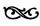
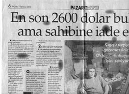
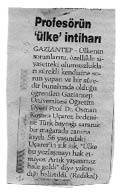

1. PERDE
ÇÖP SEPETİNİN TARİHİ

Çöpe doğru ilk adımını atarsın
Önce, “bütün yollar boyunca” diye imzalanmış bir kitap alırsın eline.
Sonra, cam kırıklarının, parçalanmış aynaların, buzdaki kabarcıkların, birikmiş gözyaşlarının bıraktığı lekelerden anlamlar türeterek yürümeye başlarsın. Bütün yollar boyunca:
Sararmış mendillerin, dolaşmış ipliklerin, kabarmış umutların, boşlukta sallanmaların, hareketsiz sarkaçların, paslı muslukların, yıkılmış hayallerin, patlamış balonların, okunmamış sayfaların, etleri sıyrılmış tavuk bacaklarının, yarısı içine gömülmüş plastik topların, yırtılmış fotoğrafların, çürümüş patateslerin, esnemiş don lastiklerinin, etkisini kaybetmiş fikirlerin, karşılıksız çeklerin, fitili bitmiş mum parçalarının, kararmış çatalların, terk edilmiş aşkların, dizginsiz günahların, lekeli kazakların, sökülmüş hırkaların, körelmiş duyguların, çiğnenmiş sakızların, içine katran gömülmüş izmaritlerin, kuyruklu yalanların, bükülmüş çivilerin, telleri ayrışmış kabloların, küllenmiş sevdaların, parçalanmış çuvalların, çözülmemiş sorunların, geçmiş ampullerin, kurumuş çiçeklerin, boşa çıkmış beklentilerin, çizilmiş CD’lerin, kaybolmuş güvenlerin, silinmiş harflerin, buruşmuş tuvalet kağıtlarının, unutulmuş anıların, çözülememiş bulmacaların, uyaksız mısraların, yolunmuş koçanların, yenik düşmüş ayaklanmaların, çiğnenmiş kuralların, delinmiş çorapların, değerlendirilememiş yatkınlıkların, saklanmış oyuncakların, çapaklanmış bakışların, yosunlanmış taşların, yarım kalmış tasarıların, erkenden boşalmaların, çıtaları dağılmış uçurtmaların, yakılmış mektupların, kırılmış vazoların, ertelenmiş borçların, unutulmuş alacakların, boş deterjan kutularının, bitmemiş senfonilerin, rengi atmış eteklerin, körelmiş jiletlerin, dibi tutmuş tencerelerin, arkası karalanmış kartvizitlerin, dağılmış saatlerin, boşalmış zembereklerin, geçersiz biletlerin, eğrilmiş iğnelerin, solmuş perdelerin, çökmüş ideallerin, kanserli hücrelerin, ufalmış kurşun kalemlerin, bükülmüş sigara paketlerinin, tuşları kopmuş klavyelerin, kolları çıkmış oyuncak bebeklerin, tek bir damla bırakılmamış rakı şişelerinin, Karadeniz’de batmış gemilerin, dönüşü olmayan gidişlerin, bozulmuş disketlerin, zincirleme kazaların, gazı bitmiş çakmakların, ayıklanmış pirinç taşlarının, mavisi solmuş nazar boncuklarının, eski sandıkların, mesnetsiz suçlamaların, kayıp gitmiş yıldızların, ıskalanmış atışların, içi boş rujlukların, havları dökülmüş havluların, esnemeyen yayların, kullanılmayan gaz tenekesi ve bidonlarının, yanmış yağların, içi boşaltılmış kavramların, uçları sararmış kulak pamuklarının, cazibesini yitirmiş fikir akımlarının, savamayan sineksavarların, yaşanmamış yakınlıkların, duyarsızlaşmış dokunuşların, aşınmış zımparaların, yersiz kaygıların, yaldızı dökülmüş aynaların, sicili kirli tabancaların, paylaşılmamış acıların, kanıtlanmamış iddiaların, düşmüş dolguların, tabanı açılmış ayakkabıların, oynatanı kalmamış kuklaların, kokuşmuş yastık kılıflarının, zincirinden kopmuş halkaların, donmuş kalmış gülümsemelerin, fırlatılmış yüzüklerin, modası geçmiş süveterlerin, bükülmüş menteşelerin, küreselleşememiş ülkelerin, yarıda bırakılmış mücadelelerin
…yanında
iğne geçme yerleri dağılmış düğmelerin, meni yüklü prezervatiflerin, rayları eğrilmiş fermuarların, çivileri ve kıymıkları dışarı fırlamış sandalye bacaklarının, kokusu bitmiş deodorantların, yırtılmış zarfların, öldürülmüş karafatmaların, teflonu gitmiş tavaların, kördüğüm olmuş ayakkabı bağcıklarının, tırtıklı köşeleri yukarı kalkmış gazoz kapaklarının, karşılanmamış ihtiyaçların, plastikleri erimiş prizlerin, bitmiş pillerin, devrilmiş liderlerin, kullanılmış boya tüplerinin, küflenmiş ekmeklerin, çekiçsiz orakların, imlası bozuk cümlelerin, rüzgarda ters dönmüş şemsiyelerin, mürekkebi tükenmiş tükenmez kalemlerin, amortisi bile olmayan piyango biletlerinin, ulaşılamamış hedeflerin, kıvrıla kıvrıla içi boşaltılmış diş macunu tüplerinin, eğrilmiş gözlük çerçevelerinin, taşları dağılmış avizelerin, iyi anlatılamamış öykülerin, yayı çıkmış mandalların, kısa devre yapmış portların, kaybolmuş ruhların, yarısı içilmiş öksürük şuruplarının, manyetik özelliğini yitirmiş mıknatısların, son kullanma tarihi geçmiş yoğurtların, güvelerin yiyip deldiği ceketlerin, geleni olmayan beklemelerin, sapı kopmuş süpürgelerin, yolunmuş tüllerin, üstünde mumlar eritilmiş şarap şişelerinin, resimleri alınmış boş çerçevelerin, duvardan sökülmüş afişlerin, açılmış firketelerin, kolları yırtılmış bluzların, dikiş yerleri sökülmüş fanilaların, yanıtsız kalmış tutkuların, küflenmiş salçaların, kaçıp gitmiş dostlukların, itlaf edilmiş kuşların, kabul olmamış duaların, iğnesi kopmuş broşların, ilerletilememiş uzmanlıkların, çatlamış saksıların, bölünmüş uykuların, iflas etmiş paradigmaların, kendi kendini sokmuş akreplerin, kesilmiş tırnakların, kopmuş kayışların, soyulmuş kabukların, kedi dışkısıyla dolu kumların, dişleri kopmuş tarakların, elekten geçememiş unların, kırılmış gururların, kışkırtılmış güruhların, besteye girememiş notaların, incelmiş lastik tokaların, yarısı ısırılmış elmaların, bırakılmış alışkanlıkların, kanı emmiş ve kurutmuş pamuk parçalarının, tedavülden kalkmış bozuk paraların, cıvası akmış termometrelerin, işitilmemiş serzenişlerin, sidik kokulu çocuk bezlerinin, donup katılaşmış ayakkabı boyalarının, kapıları sökülmüş oyuncak arabaların, kullanılmış şırıngaların, bir türlü çoğalmak bilmeyen yalnızlıkların, yapışkanlığı gitmiş yara bantlarının, yürürlükten kalkmış yasaların, keskinliğini yitirmiş makasların, zayıflamış inançların, kopmuş kapı kollarının, geçip gitmiş takvim yapraklarının, yutulamamış hapların, eski kırkbeşlik plakların, boş kovanların, tüm şıkları işaretlenmiş test kitaplarının, vidasını kaybetmiş somunların, unutulmuş masalların, rakamları silinmiş iskambil kağıtlarının, üçte yatmış ganyanların, boşa geçmiş yılların, isabetsiz vuruşların, dökülmüş yaprakların, etlerinden ayrılmış balık kılçıklarının, acımış vicdanların, teli kalmamış fırçaların, esrarı bitmiş zıvanaların, saçları ağarmış perukların, sayfaları karalanmış bloknotların, birbirine yabancılaşmış değersiz ve önemsiz insanların
...yolunda... yürüyüp durursun,
atılmışlığın... yolunda... durursun.
Çöpten çıkan kitaptan, kitabi çöpler görürsün mesela
Kitapların da bir hayatları vardır; iyi, kötü yaşadıkları.
Maceraları vardır; karşılaştıkları.
Mesela kimisi tuvalette okunurken düşer bir su birikintisinin üstüne.
Kimisi yarım bırakılır sebepsiz yere.
Kimisi ateşe atılır öfkeyle.
Kimisi de düşebilir kolayca tarihin çöp sepetine.
Ya da çöplenir gibi okunabilir bazı kitaplar. Garip bir iştiha, sonuçsuz bir arama, sürekli açlık haline rağmen geçici doyumlarla rahatlama, belli belirsiz bir zehirlenme, geceleri ölüp gündüzleri dirilme ve gündüzleri ölünce geceleri sessizce direnme... İşte bildiğimiz çöplenme... İkinci Yeni’den kalma ders kitapları mesela...
Biraz tarih mesela. Uygur Türkleri’nin neden bu kadar uzundur elleri? Neden halkı bile sevemedi Robespierre’i? Nasıl indirildi ama Mozambik’te, Portekizli subayların, o hep yukarıda kalacağı düşünülen götleri?
Biraz Türkçe mesela. Tarih derslerindeki tam kafiye zorlamaları saçmalaştırmaz mı tarihi gerçekleri? Devirdin mi cümleleri devirebilir misin yüklemlerin devrimci içeriğini? Peki ya dilinin pürtük pürtük olmasının, dilbilgisine negatif etkileri?..
Biraz coğrafya mesela. Kutuplarda yaşayan ıssız halkların içlerindeki sıcak özlemi ve fiyort gerçeği... Kitaplarda yaşayan göçmüş halkların terk edilmiş özlemleri ve delta gerçeği... Kapının sessizce vurulması ve müfettiş Ece Ayhan’ın coğrafya dersine ansızın sokuluvermesi...
Biraz biyoloji mesela. Elektrik verilmiş kurbağaların yeşil yeşil büzüşmesi... Sineklerin ters çevrilmiş bir bardağın içinde giderek azalan nefesleri ve trake gerçeği... Kapının gümbür gümbür çalınması ve müfettiş Cemal Süreya’nın biyoloji dersini bitirivermesi....
Bildiğimiz çöplenme yani. Kırık dökük ama hep gülümseyen anıların hafıza koridorlarını işgal etmesi, işgal eyleminin derin bir uykuyla sona ermesi.
Çöpten çıkan kitaplar işte böyle derin bir uykunun neşeli rüyalarıdır. Hadi terk edelim artık şiir alanını ve biraz somut olalım değerli müfettişler.
O halde, çöpten çıkan kitaplar iki ana kategoriye ayrılabilirler:
a. Toplu ve bazen düzenli bir paket halinde, evdeki fazlalıkların boşaltılması sürecinde, genellikle annenin hışmıyla ya da polis korkusuyla karşılaşan kitap kümeleri.
b. Teker teker ve bazen sayfaları parçalanmış bir şekilde, kişisel hırs ya da yazar düşmanlığıyla karşılaşan kitap ve broşür külleri.
Sonuçta (elbette başka türleri de katarak arasına) çöp, kültürel bir yığınaktır aynı zamanda.
Örneğin; “Darmadağınık, parçalanmış, bölünmüş, parçaları altlı üstlü yığıla yığıla kokuşmuş çöpsü bir birikimi hedefleyenler, insanoğlunun aklına bugünkü kültürel yığınağı kaktılar” türünden bir eleştiriye ne buyrulur? Çarçabuk itiraf etmek gerekirse; kendileri çok ağır bir eleştiridir ve bir soruyla inceltilmelidir; işe yaramaz birikimlerimizden bile bir zenginlik türeyemez mi? İçinde ne kadar çöp birikirse biriksin; hiçbir şey “işe yaramaz” kestirmeciliğiyle kesilip biçilmemelidir bu şekilde. Çöpten de kıymetli şeyler çıkabildiği, en azından çöpün kendisinin bir kıymet olduğu (tabii ki bu çağda) açık ve de seçik değil midir?
Aslında dert, kimseye bok atmak değildir, sakin ve güvenli, çöpler gidebilecekleri yerlere gönderilmelidir...
Peki, küfürlerimizi, hakaretlerimizi, tüm kırıcı sözlerimizi çöpe atsak, geri dönmezler mi?
Ya da hiç izmarit aramadınız mı çöpün dibinde, gece yarısı sigarasız kaldığınızda evinizde? (Her köşeye yapışmış çay tanelerine lanet okuyarak elbette). İzmaritleriniz döner de, tutulmamış sözleriniz, küçük yalanlarınız, boş vaatleriniz, karşılıksız çekleriniz ve beklentileriniz, dönmez mi geriye? Acılarınız, sancılarınız, karıncalanan düşünceleriniz, karnınızdan yaptığınız konuşmalarınız, ayıplı rüyalarınız dönmez mi?
Hayatımız geceleri rüyaya dönmez mi? Gündüz, yaşamın dengesi ve mantığıyla sıraya dizilenler, geceleri çöp gibi karışabilirler birbirine. Çöpün karanlığı gecemsidir. Ve genelde bir kenara atılan birikimleriniz, terle kaplı bir rüyanın orta yerindedir. O halde uyandırılınca, o halde hatırlanınca, neden dönmesinler geriye?
Mekandaki, zamandaki ve insanlara dair sıçramalara, dalıp dalıp çıkmalara, dünden ve günden kalanlara, ertelenmiş arzulara, bastırılmış duygulara, kösnül maymunluklara, ota, boka, uçan kuşa bakıp; “Rüya yaşadıklarımızın ve yaşamak istediklerimizin çöpüdür” demiş olabilir Freud ya da biri demiştir nasılsa...
Çöpün sözüne dair ya da seslenme meselesi birincisi
Sorunların özüne geçmeden, sözü üzerinde durulabilir.
Öyle ki, bazı sözcükler içlerinde ses biriktirir, sesleriyle de anlam verir.
“Çöp” de, birikmiş bir sözcük değil midir?
Belki de o yüzden çöp biriktirilir.
İşte böyle, ifadenin güzelliği anlamı eritirse, elimizde kalan aslında çöpün ta kendisi değil midir?
Peki biriken her şeyde bir çöp karakteri var mıdır? Sözlük, yazım kılavuzu, şikayet kutusu, ansiklopedi, kitap, defter, karalama defteri, belge, güfte, diyalog, monolog, bildiri, günlük, kenar notu, satır arası, hatırat ve akıl bir tarafta; toz, bulut, çöl, deniz, ayakkabılık, yatak odası, soba borusu, kül tablası, lavabo, küvet, devlet, ümmet, kurna, tuvalet ve kalp diğer tarafta, biriktirmez mi hep içinde bir şeyleri?
Peki ya vicdan? Nedir vicdan? Rahat eder, titrer, sızlar ya da sonuna -sız eki alıp durur... Kendisiyle barışmaya çalışan bir “iç”, kararları yönlendirme kudretine sahip bir “iç görü”, duyguları harekete geçiren bir akıl-yürek derinliği, rahatlatılması gereken manevi bir varlık mıdır? İnsaf ve acımayla elbette bir ilişkisi vardır. Belki de korkuyla. Ama iyi dinlerseniz vicdanınızı, beşinci kattan aşağıya atılan bir çöp torbasının çıkardığı sese benzeyen derin ve boğuk çığlıklar da duyabilirsiniz onda. O halde, dinleyebildiğimize göre, vicdan kesinlikle içinde ses biriktiren bir “şey”dir. En azından, (tıpkı “çöp” gibi) bir sözcük olması bunu gerektirir. Yine de asıl önemli olan sesini dışarı nasıl verdiğidir. Bu açıdan, sanki daha etkili olabilmesi için (ve Jan Yüjel’e inat), “c” yerine bir “j” gereksinmektedir.
Söylemiştik değil mi, ifadenin güzelliği anlamın önünde bir engel olabilir.
Neyse efendim, “çöp”e ya da ifade çöplüğüne dönecek olursak; kendileri, patlıcan gibi, loş gibi, menekşe gibi, yaşam gibi, ölüm gibi sesiyle anlam verebilen sözcüklerdendir. Tabii bizzat sesiyle sözcükleşen, cızırtıları, patırtıları ve fısıltıları bir kenara ayırarak konuşuyoruz (Konuşuyoruz tabii, neden yazalım ki; yazı kaldığına, söz uçtuğuna ve birikse de kimi yazılar içinde, çöp hep söz gibi olduğuna göre...)
Yani çöp dendiğinde, çöp sesi işitildiğinde, aklınızda ve gözünüzün önünde hızla beliren bir görüntü; burnunuzda rahatsız edici, diğer aromaları bastıran fena bir koku; derinize temas ettiğinde tiksinti duyacağınız peltemsi bir yumuşaklık beliriverir yanı başınızda derhal, bu sesle birlikte. Bu en fazla beş (belki de altı) duyuyla oluşabilen hissiyattaki baskın öğe, anlam değildir belki de, sestir sadece.
Ara sonuç: Ç, ö ve p harfleri yan yana gelip güçlü ve etkili bir ses vermektedir. (“Güç ve etki”, bizim alemde, sıklıkla tekrar edilen sözcüklerdendir.)
Peki sözcüklerin anlamları ve onlarla hesaplaşma gereği ortada dururken, bu şekilde seslerine tak(ıl)manın anlamı nedir? Efendim, çöp, bilindiği üzere, değersiz ve hatta önemsizdir. Beri yandan, ondan bir değer çıkarabilmek ya da oluşturabilmek için, insanın “kazıcı” müdahalesi gereklidir. Nihai sonuç ise, en iyi durumda, sadece “geri dönüşüm” olabilmektedir.
O halde, gidenin geri dönmesi, değersizlik derecesinin ölümle özdeşleşmediğinin işaretidir.
Peki, geri dönse de, dönmese de, dildeki kirlenme, bir nevi çöp değil midir?
“Zamanın ağızları”ndan çıkanları aktarırken şöyle der Eduardo Galeano: “Eğer sana söz veriyorsam, kendimi veriyorum demektir. Dil bir çöplük değildir.”
Çöplük ya da değil; dil, başkaları için var olan bilinçtir. İnsanın yedi milyon yıllık yolculuğunda; jestlerine eşlik eden ilk sesleriyle başlayan, o mükemmel soyutlamalarına ulaşan ve sürekli aktarılan akıldır. Bu durumda dille taşınan, insanın gerçekliği dolaylı/dolaysız kavrayış biçimleri, bilinci, hafızası ve benliği olmadığında, söylenenler arasında bir kirlenme başlar hızla.
Laf salatasıyla oluşan çöpleri ya da medya gevezelerinin oburca kullandığı sözcükleri temizleyecek bir dilbilimciden bahsetmiyoruz belki. “Dil serserisi” diyebiliriz kendilerine büyük ihtimalle. Ya da “sözcüklerin temizlik işçisi”. Sloganla hareket edildiğinde; “Dilimizi Bize Geri Verin”, en iyisi.
Basite ve Türkçe’ye indirgersek; henüz “oluşmakta” olan bir dili temizlemek, faideli, değerli ve önemli bir hizmet değil mi?
Çünkü kirlendi. İşgale uğradı. İstilaya uğradı. “Fayda”yı “faide” olarak ifade etmeye başladı birileri. “Nasılsa oluşum halinde” diye, doluverdi içi onlarca yabancı sözcükle.
Kullanıla kullanıla eskiyen sözcükler; harflerin kirli kabukları; cümlelere dışarıdan sızıp yabancılıklarını hep belli eden sarsak kelimeler; anlamları taşıdıktan sonra boşa çıkan poşetimsi söz kümeleri; argo bulaşığının biriken kirli suları ve boş şişelerden daha da boş olabilen iletiler... sözlüğü terk edip gittiklerinde, yitirmiş mi olacağız kimi değerleri, kazanmış mı olacağız dilimizi geri, belli değil mi?
İnsanın ve dünyanın arınması da böyle değil mi? Üstünde, aklında, sözünde kir biriktirenlerden kurtulmak, başka türlü nasıl mümkün olabilir ki?
Sözün çöpüne dair ya da birikim meselesi ikincisi
İnsan bedeni biriktiricidir. Tüm organlarıyla. Tıpkı bir midye gibi. Gözleriyle toplar tüm bakışları. Sıcak, dokunaklı, itici, mesafeli, ağlamaklı, buz gibi, donuk, sevdalı, yakınlaştırıcı, inatçı, nefret dolu, sakinleştirici, yabancı, fırtınalı, ısrarcı, sıkıntılı, ışıklı, uzak, öfkeli, hüzünlü, yakın, yarı açık ve kapalı bakışları biriktirmeden önce beyninde, tutar her birini merakla soruşturan (ve tabii ki ışıl ışıl ya da ipil ipil) gözlerinde. Oysa göz dendiğinde; mavinin, yeşilin, siyahın ve kahverenginin tonları bilinir sadece...
Neyse efendim, geliştirilince bu düşünce ya da çağrışımların peşinden gidince; sesleri toplar kulaklarında ve acıları kalbinde. Hüzün senfonisini dinler mesela; “yalnızlık, terk edilmişlik ve sonsuz ıssızlık için üçlü konçerto” da olabilir. Buradaki, gazetelerin romantik köşe yazarları tarzı gereksiz duyarlılığa (isim vermek gerekirse Can Dündar’la Cezmi Ersöz arası bir tarza), zayıf sözcük oyunları da karışırsa, “kaprissiz kapriçyo” neden olmasın mesela? “Merak balesi için kedili prelüd”ü de eklersek yanlarına, örneklerimiz, “hem kalpte hem kulakta biriken acılı seslerden yalnızca birkaç tanesidir bunlar” diye bağlanabilir. Ama bu örneklerin etkili olabilmesi için, günlük bağlamlara ve illa ki sevdalara ve illa ki ayrılıklara bitişmesi gerekir. Çöpler bu açıdan hiç elverişli değildir.
Peki, böbrekte ve bağırsakta birikenlerin maddi gerçekliğine, ellerimizde birikenlerin varlığına/hiçliğine ve genelde çöple olan inanılmaz benzerliklerine hiç dokunmadan, gözlerimizden ve kulağımızdan hareketle, en büyük çöplüğümüze, beynimize girebilir miyiz acaba? Yoksa, yüzlerce yıllık düşünce ve yazın mirası, bin bir ihanete uğrayan akıl çağı, izin vermez mi bu tecavüze?
Düzgün ve etkili konuşan insanların ya da serbest çağrışımla yazıp dururken nasıl olmuşsa kıvamını tutturmuş yazarların, o sözcükleri, o sırayla nasıl ve nereden “çıkardıkları”nı düşünürken, bir türlü dilinizde birikip dökülmeyen sözcüklerin beyninize doluşmasına nasıl da kızar ve ünlü hatibe ya da yazara hasetle bakmaz mısınız siz de? (Haset dediğiniz, ilköğretim ahlak kitaplarından öğrenilen kötücül bir huy değil midir? Bilirsiniz, o kitaplarda hiçbir şey, iyinin ve kötünün ötesinde gösterilmemiştir). Dişlerinin arasında biriktirdiği açlıklar ve acılarla, düşlerinin arasında biriktirdiği artıklar ve anılar, gerçekte neresinde birikir insan aklının? (İyi bir ahlak kitabı, işte asıl bu türden soruları yanıtlayabilmelidir.)
Dilimizin ucunda birikenler, söz gelip zorunluluğa ve sorumluluğa dayandığında, atarlar kendilerini dışarıya. Önemli olan burada, atılmadan önce ne kadar toparlandıkları ya da bilinen ifadesiyle, “ne kadar iyi ifade edildikleri”dir.
* * *
Biriktirmek mi dediniz? Şiirimsi bir şeyler o zaman; “boylu boyunca” ne kadar biriktirebilirsiniz?.. Ya da biriktirebilirseniz.
bir insanın tüm bedeni boyunca ne kadar acı ve sevinç birikebilir ki?
bir insanın tüm yalnızlığı boyunca ne kadar kalabalık,
tüm yolculuğu boyunca ne kadar anı ve macera,
tüm karanlığı boyunca ne kadar gölge,
tüm umutları boyunca ne kadar gelecek,
tüm hatıraları boyunca ne kadar insan,
tüm tarihi boyunca ne kadar mücadele ve tüm mücadelesi boyunca ne kadar tarih,
tüm yaşamı boyunca ne kadar sevda ve tüm sevdası boyunca ne kadar yaşam,
tüm cümleleri boyunca ne kadar harf,
tüm defterleri boyunca ne kadar cümle birikebilir ki?
bir insan,
ne kadar birikebilir ki?
* * *
İfade elbette önemlidir ama “Neleri, nasıl biriktiriyoruz”; işte asıl soru(n) bu değil midir? Biriktirdiklerimiz ne kadar değmektedir hayata; soru(nu)muzun daha iyi bir “ifade”si olabilir. Ve ifadeler birleşip karışıyorsa çöp gibi, şöyle de sorulabilir; hayatın dışına atılanları biriktiriyorsak bir çöpçü gibi, nasıl değebiliriz ona?
“Hayatın kıyısında yaşamak” denilen şey, tam da buralarda bir yerlerde olabilir. Kıyı, bir maddenin bittiği, diğerinin başladığı yerdir. Deniz kenarında plaj voleybolu oynayacağına, çöp kenarında şişe ve mukavva ayıklamayı “seçen” bir insana, “marjinal” demek için kaç numara öküz olmak gerekir bu hayatta?
İngiliz tarihçi Eric Hobsbawm’ın Batı’yı adlandırmasıyla (üçte ikisi yırtmış, üçte biri batmış ve dışlanmış) “üçte iki toplum”da, üçün birini bulan marjinal sektör yatırımcıları, tüm birikimlerini değerlendirebilecekleri en iyi enstrümanın çöp olduğu fikrine öyle kaptırmışlardır ki kendilerini, Dünya Bankası’ndan kredi alsalar başka da bir şey görmez gözleri (değil mi öküzcüğüm?)
Dalıp gitmek birikime, kolay mı öyle?
“Dikildi çöp kutusunun dibinde. Daldırdı kolunu, aynı anda hem sert hem de yumuşak olabilen taşlı jölenin içine.” Deniz kabukları, yosunlar ve böcekler bitmişti en dipte. İnsani bir yuvarlaklık ve yumuşaklık orta bölmede. Ezilmişliğin hırsı ve hıncı birikmiş üstte, en üstte, yüzünde. Her şey, çöpten çıkabilecek üç beş kuruşluk geçinme derdinde.
Aslında herkesin kan birikmiş yüreğinde. O kadar çok birikmiş ki, yürek bunu tüm bedene yayma derdinde. Çöpler de işte böyle. Biriktikçe evde, çöpçü bunu tüm şehre yayma derdinde. Kan davasıdır bu belki de.
Bunu ancak kan temizler diyenler, gelip bir de çöpün dibini kolaçan etmeliler. Kan denen yaşamsal sıvı, temizliyor mu gerçekten, leke mi yapıyor yoksa; kasabın artık kemiklerinden bu sihirli formülü çözebilirler. Ya da çöpün grimsi, yeşilimsi kanıyla vicdanlarını temizlemeyi denemeliler. Ersuyu kadar üretken ve güçlü olabilen çöpsuyuyla geleceklerini döllemeliler. İşte o zaman tüm bu yaşananları, belki kan temizler.
“Eğildi çöp kutusunun dibine. Daldırdı kolunu iyice, kan lekesi yapışana kadar tırnaklarının içine.” Parçalanmış kedi leşlerini böyle atmamalılar çöp tenekelerine. Alın size karmaşık bir ifade: “Alınan mesafelere değil de yoldaki leşlere bakıldığında, oradan oraya gitmek için değil, kedileri ezip yok etmeleri için üretilmiş olduklarını düşünebileceğimiz otomobillerden arta kalan bu parçaların, daha ‘sıhhi’ ortadan kaldırılma biçimleri bulunana dek, çöp karıştırmak sorun olacak hep böyle.”
“Uzandı çöp kutusunun dibinde. Daldırdı kolunu; daldırdı geçmişine.” Ancak kitaplarda birikebilecek düşünceleri, ancak yaprak aralarına sığabilecek düşleri, böyle fütursuzca atmamalılar çöp tenekesine. Geçmiş sevdaları hatırlatacak eşyayı, geçmiş küskünlükleri çağrıştıracak bir hatırayı çöpten çıkarmak, daha kolay değildir hafızadan silmeye göre. Seçici ve inatçıdır hafıza; siz ne kadar silmeye çalışsanız da ilk fırsatını bulduğunda akıl koridorlarınızda dolanmaya başlar hatıra. Bir çöp karıştıran öğüdüdür bu: Çöpten seçip inatla çıkardığınızda o eski eşyayı, sakın ha kırıp dökmeyin üstüne sinmiş o hatırayı...
“Uyuyup daldı çöp kutusunun dibinde.” Daldırdı kolunu, daldırdı içindeki sessizliğe. Tek bir sözcük çıkarabildi sesiyle anlamını birlikte verebilen, tek bir sözcük; “çöp” diye...
“Durdu çöp kutusunun önünde. Elleri çöpte bulduğu kağıdın üzerinde.” İçindeki çöpleri biriktire biriktire yazabiliyorsun ancak. Ve yaşayabiliyorsun içindekileri dışarı çıkararak. Biriktirip yazmak demişken; “yazmak (biraz da) hayal kırıklıklarını biriktirmektir” diye haykırarak.
Ya çöpte biriken kitaplar? “Hayatta hiçbir şeyi biriktirmeyeceksin” diye başlayan John Fowles romanının, çöpte biriken onca pisliğin, aklımızda biriken onca kirli düşüncenin arasında işi ne?
“Hazine, hazinenin anahtarıdır” diyen bir hazine değil midir çöplük, John Barth’ın “Masal Masal İçinde”de belirttiğine ya da benzer tüm kutsal kitaplarda yazıldığına göre?
Hemen üstünde bir nota kitabı; do majörleri dökülmüş yerlere. Art Blakey, “Night in Tunisia”yı anons ederken topluyor, Birdland denen yerde: “Benim için özel bir beste; bestelerken Dizzy’nin yanındaydım ben de. Teksas’taydık. Ve bir çöplükte, bidonların dibinde, elimizde şişelerle ... (gülüşmeler üzerine)... Gerçekten öyle: Tunus’ta bir gece.”
Yemek tarifleri kitabına gerek yok; okunabiliyor bilumum tarif, artıkların hercümercinde.
Peki o zaman, bir bilimkurgu, ama şampiyonlara sabah kahvaltısı yaptıran yazarı Kurt Vonnegut epey statükocu: “Dünya ancak bir tek biçimde var olabilirdi, diye düşünüyordu: Ne ise o. Her şey gerekliydi. Bir çöp tenekesini karıştırarak yiyecek bir şeyler arayan yaşlı bir beyaz kadın gördü. Gerekliydi bu. Bir banyo oyuncağı gördü, demir bir lağım ızgarası üzerinde yan yatmış duran lastikten küçücük bir ördek. O da orada bulunmalıydı.”
Hayalleri ve hayal kırıklıklarını birlikte biriktiren bir ütopya mı isterdiniz; o halde Fourier’ye dikkat ediniz. Edmund Wilson’ın “Lenin Petrogırad”da adlı devrimci düşünürler biyografisinde belirttiğine göre; “aklını kurcalayan iki sorun vardı” üstadın: “Çocukların pislikten hoşlanmasıyla topluluğun çöpünü elden çıkarma sorunu. Bunun da çaresi bulundu, çocuklar yüklenecekti çöp işini.”
Kitaplar tamam, gitmiyorlar bir yere; “sevdamız, o kalabalık ustalığımızdan doğan yalnızlığımız” denen tehlikeli bölge ise çöpün değil, onu karıştıranın içinde...
“Durdu çöp kutusunun önünde. Çöpleri karıştıran insanoğlunun tam önünde.” İnsan, içinde biriktirdiği insanlarla yücelmez mi? Dünyayı başkalarının gözüyle gördükçe sevinmez mi? Yine de farklılığını bilmelidir insan; kimsenin yüzü ve biriktirdikleri, yani yaşadıkları ve yansıttıkları, bir diğeriyle aynı değildir. Peki, milyonlarca yıldan beri ve milyarlarca insan arasında böyle süregeldiğini bilmek; çok korkunç değil midir?
“Durdu çöp kutusunun önünde. Başladı çöp karıştıran insanla söyleşmeye.”
Edebi anlatımı bir süre bırakıp,
Çağrışımlardan uzaklaşıp,
Biraz da esasa bakalım.
Sokak, esastır,
Çıkalım.
Önce sokaktan çöp toplayanlarla konuşalım:
• Merhaba, yaptığınız işle ilgili birkaç soru sorabilir miyim?
• Gazeteci misin abi?
• Sayılır, kitap hazırlıyorum sizinle ilgili.
• Kim okuyacak ki, boşver be abi, sen git başka işe bak, ben işime. Hadi eyvallah.
• Eyvallah.
Kolay mı öyle kıvamı tutturmak.
• Merhaba, gazeteciyim ben, sizlerle ilgili, yani kağıt toplayıcılarıyla ilgili geniş bir araştırma yapıyorum, birkaç soru sorabilir miyim?
• (Şüpheyle bakar) Şimdi mi?
• Çok vakit almaz. Ses kayıt cihazım yanımda. Öyle basit bir iki soru.
• (Sıkıntıyla) Ne anlatayım ki?
• Kaç yıldır çöpleri ayıkladığından başlayabiliriz.
• Üç yıl oldu, memleketten geleli beri.
• Memleket neresi?
• Silvan.
• Başka bir iş denedin mi, yoksa gelir gelmez bu işe mi giriştin?
• İş mi var abi, dayımın yanına gelir gelmez aha şu çuvalı doldurmaya başladık birlikte.
• Tek tek nasıl çalışıyorsunuz, yani cam, mukavva, kağıt, paçavra, tek tük değerli eşyalar arasında her biriniz başka bir şeye mi yöneliyor, yoksa hepiniz hepsini birden mi topluyorsunuz?
• (Hafif küçümseyen bir gülümsemeyle) Genelde kağıt toplarız. Biz, dayımgiller. Ama mukavva dediğin de kağıdın kalını değil mi. O dediklerinden bir tek cam ve teneke toplama işi ayrıdır. Ama yerine bakar be abicim. Şimdi mahalle arasında bu çöplükleri karıştırıyorsan kağıt başta gelir. Diyelim kalabalık bir caddede topluyorsun, herkes kola, bira bilmemne içiyor orada teneke kutuya bakarsın, cama bakarsın. Değerli dediğini de kimse görünce bırakacak kadar enayi değildir.
• Nereye götürüyorsunuz onları?
• Hangilerini?
• Diyelim az kullanılmış bir ayakkabı çıktı.
• Uyarsa giyeriz, eşe dosta bakarız uyar mı diye, illa satmak gerekirse bit pazarları var. Kadıköy’de, Kasımpaşa’da her yerde var. Oralara götürüyoruz, üç beş kuruş bir şey.
• Peki topladığınız asıl kağıtları, camları ne yapıyorsunuz?
• Hepsinin depoları, merkezleri var abi. Orada birikiyor, fabrikaların adamları gelip toplu halde alıyor. Bize de getirdiğimizin hesabıyla, kavga, gürültü bir şey çıkıyor.
• Peki kavga gürültü dediğin ne kadar kazanıyorsun bu işten ayda, geçimine yetiyor mu? Ailen nasıl geçiniyor?
• Şükür aile yok abi. Hesabı dayı tutuyor bizim orada, dolu çuval başına deftere yazıp depodan bakıyor bu ay kaç diye. Yemeği de onda yiyoruz işte. Abim karşı tarafta minibüsçülük yapıyor ama o buraya uğramıyor pek. Belki geçerim yanına diyorum ama, hatta yer yokmuş filan dedi dayım.
• Bu çöplerle uğraşmaktan sağlığına bir şey olmuyor mu? Yani normalde insan bakınca bir sürü mikrop gibi geliyor. Nasıl koruyorsun kendini, yıkanıyor musun, ne yapıyorsun?
• Alışıyor insan be abi. Başta pis gibi geliyor ama sonra işte yediklerimiz içtiklerimiz gibi. Kokuyu duymuyorsun bile.
• Sanki memnunmuşsun gibi söylüyorsun.
• İş mi abi bu? İsterim, kimse elini karartmasın böyle, uzak dursun pislikten de bilmemneden de. Ama mecburuz işte...
• Peki kolay gelsin. Umarım daha iyi bir iş bulursun.
• Sağol abi. (Tam teybi kapatmaya yönelmişken, biraz duraksayarak) Nerede çıkacak bu dediydin?
• İşte senin gibi başkalarıyla da görüşüp kitap yapmak niyetim.
• Sana da kolay gelsin abi.
Sonra Beşiktaş’ta Şair Nedim taraflarında hep aynı konteynırların başında duran, onların yanına bir de çadır kuran adama gelir sıra. Soluk almaya çalışmaktadır hayatın tıkanmış damarlarında...
• Merhaba usta, kolay gelsin, hep buralardasın, yerleşmişsin galiba.
• Sen kimsin?
• Şurada, yan sokakta oturuyorum, hep görüyorum seni, geçerken bir hal hatır sorayım dedim şimdi.
• İyi sağol. Bir çorba parası var mı?
• Yok, kusura bakma, ben de işsizim bir süredir.
• Yoktur bilirim.
• Burada mı yaşıyorsun sen?
• Ha bu çaputun altındayım, buna yaşamak denirse.
• Merak ettim, bu bölgedeki çöp konteynırlarını sanki paylaşmışsınız gibi. Hepsinin başında biri var, ya böyle senin gibi yerleşmiş ya da sürekli etrafında, nasıl oluyor?
• Ne o, sen de mi niyet ettin?
• Yok öyle merak ettim. Sanki bölüşmüşsünüz gibi geldi aranızda.
• Nesini böleceğiz be, çöp işte. Karıştırıp karıştırıp yaşamaya bakıyoruz. Şikayet mi etti biri?
• Yok yahu, amma da kıllanırmışsın ha. Öylesine soruyorum. Belki bu sizin yaşama koşullarınızı, dertlerinizi filan anlatan bir kitap yazarım diye bir düşüncem var.
• Hah, o dediğinden çok çıkar buradan. Geçende ansiklopediler çıktı.
• Ne ansiklopedisi?
• Ciltli ciltli büyükten.
• Sattın mı?
• Sattım.
• İşte anlatırsan sen daha başka neler çıktığını, burada nasıl idare ettiğini, onları yazmaya çalışırım. Belki sonra o da çöpü boylar.
• Her şeyi atıyorlar buraya. Sabahtan akşama bu elimdeki demirle ne varsa bakıyorum işte. Üç beş kuruş edecek ne varsa ayırıyorum. Yiyecekleri de durumuna göre yiyorum. Şu marketten gelen kağıtları, kartonları, onun bunun torbasından çıkan kutuları, şişeleri satıyorum. Hepsi bu işte.
• Nereye satıyorsun peki?
• Deposu var ya şu öte sokakta. Oraya götürüyorum.
• Şu kağıt toplayıcılar, hurdacılar falan var hani çuvaldan arabalarla dolaşıyor, o depolara bağlı çalışıyorlar, onlar gelmiyor mu buraya?
• Bilirler beni. Ötekilere bakıyorlar. Bura benim. Atılır atılmaz bakıyorum hemen.
• Başka yere bakmıyor musun?
• Yok, buradayım ben.
• Misal, on kilo karton mukavva kaç para ediyor?
• Üç milyon eder.
• Gazeteleri de ayırıyor musun?
• Tabii.
• Aynı mı onlar da?
• Az daha ucuz.
• Şişe ya da teneke kutular?
• Onlar ayrı. Çok birikecek ondan.
• Peki buraya onları ayrı ayrı atmak için belediye başka kutular koymuş.
• Millet torbasında hep birlikte atar. Ayrı ayrı atmaz ki. Yanlış o.
• Atarlarsa.
• Atan atar. Bana ne!
• Bir dakika atmayın, ben alacağım filan demiyor musun?
• Hiçbir şey demem.
• Günde kaç kilo kağıt, karton, mukavva filan çıkıyor.
• Yetmiş, seksen olur.
• Başka bir şey söylemek ister misin?
• Allah kimseyi düşürmesin.
• İyi, hadi sağol, kolay gelsin.
• (Sessizce ve biraz da gönülsüzce el sallıyor gibi) Hadi...
Sonra Kadıköy’de Yoğurtçu Parkı civarında, sokak arasında, çuvaldan arabasının yanında, gazete okuyan birine denk gelirsin, gazete okumasından cesaretlenir, soruverirsin:
• Merhaba kolay gelsin, rahatsız ediyorum ama bu sizin yaptığınız işle ilgili bir araştırma hazırlıyorum, birkaç soru sorabilir miyim?
• Şimdi mi?
• Uygunsa.
• Ne bilmek istiyorsun?
• İşte neler topladığınızı, nerelerden topladığınızı, nasıl elden çıkardığınızı, ne kadar kazanç sağladığınızı, yaşam ve geçim koşullarınızı falan.
• Ohoo, başka merak ettiğin yok mu?
• Gerçekten bir kitap hazırlamak istiyorum. Öyle farklı açılardan, farklı insanların görüşleriyle bu yaşamın zorluklarını anlatmak istiyorum. Belki sizin yaşadıklarınız yardımcı olur bana.
• Bir şey yaşadığım yok. Ekmek derdindeyiz. Üç çocuğa bakıyorum. Biri hasta. Yardım istiyorsan yardım et. Evde hastam var.
• Abicim ben de işsiz sayılırım, kusura bakma.
• Geç geç, para verirsen olur.
• Yok veremem gerçekten.
• Yürü git o zaman.
• Peki kolay gelsin yine de.
Biraz daha yukarıda Moda’ya doğru çıkan dik bir yokuşun başında daha gençten bir çocuk, doldurmuş çuvaldan arabasını, ağır ağır çıkmaya çalışıyor yokuşu:
• Merhaba, kolay gelsin. Bu sizin yaptığınız işle ilgili bir kitap hazırlamaya çalışıyorum ben. Şöyle yolun kenarına oturup birkaç dakika konuşabilir miyiz? Vaktin var mı?
• (Yüzüme garip garip bakıp) Sigaran var mı?
• Ha, yok içmiyorum.
• Bir çorba parası çıkar mı?
• Öyle paralı bir iş yapmıyorum ya, neyse gel veririz, otur iki dakika.
• (Kaldırıma ilişip gergin ve isteksiz bir biçimde beklemeye başlıyor)
• Nerelisin, okula gittin mi hiç?
• Bingöl’den abi. Okudum ilk mektebi.
• Sonra?
• Davara baktım bir süre, sonra buraya geldik işte.
• Hemen bu işe mi koyuldun?
• Yok işportacılık denedik önce, kazak ve kot sattım Eminönü’nde. Dört aydır çöpe bakıyorum.
• Nasıl kazancı, işportadan iyi mi?
• Açız abi. Bir sigara versen be.
• Yok, vallahi içmiyorum.
• Alsan şuradan.
• Senin de yaşın küçük, içmesen daha iyi. Hem açsan, sigaraya da paran yetmez, bırak en iyisi.
• Hadi be, almamak için bahane.
• Sağlığını düşün, korkmuyor musun hem, zaten bu yaptığın işten bir sürü hastalık, pislik bulaşır.
• Korksak ne, mecburuz.
• Peki kötü değil de iyi tarafına bakalım, hiç değerli bir şey bulduğun olduğu mu çöpten?
• (Gülerek) Söylenmez bu, meslek sırrı ama süpürge torbalarına bakacaksın asıl abi, altın zincir bile çıkar onlardan.
• Şimdi sana tutup da seçicilik meçicilik diye bir soru sorsam; neyi seçiyorsun, neden seçiyorsun, bu düzenle ilgili seçimlerin neler diye, bunun bir manası var mı?
• Yok abi, bir bok seçtiğimiz yok.
• Haklısın, dışlanmışlığın ve yoksulluğun en ucunda yaşayan biri neyi, nasıl seçebilir ki?!
• Bir sigara seçsek en azından.
• Haklısın yine, gel şu bakkaldan sana bir sigara alalım, sonra ben uzayıp gideyim.
• Sağol abi.
Ardından Şaşkınbakkal’da Bağdat Caddesi’ne paralel sokakta, bir akşam vakti denk gelirsin çöpleri karıştıran bir karı kocaya. Kadın, çuval arabasını tutmakta, kocası içine plastikleri, kağıtları sıkıştırmakta. “Merhaba” dersin, “İşiniz bitince, birkaç soru sorabilir miyim, kağıt toplayıcılarla ilgili, şehrin çöp sorununa dair bir kitap hazırlıyorum. Uygunsanız birkaç soru sormak isterim.” İlgiyle bakarlar suratına ve hemen dakikasında bırakıp işlerini otururlar yolun kenarındaki banka.
• Adettendir, ilk “nerelisiniz” diye sorulur değil mi?
• (Gülümseyerek) Tokatlıyız.
• Sivaslıyım ben de, komşuymuşuz. Neresinden Tokat’ın?
• Ben Niksar’lıyım, hanım içinden.
• Ne zamandır İstanbul’dasınız peki? Ne zamandır bu işi yapıyorsunuz?
• 30 yılı geçti ben geleli. İşçi emeklisiyim ben. PTT Hastanesi var yukarıda, bilir misin? Hah işte orada hademeydim. On yıl oldu, emekli oldum. Sonra çocukların masrafları için falan derken ek gelir olsun diye yapmaya başladık bu işi. Hep bizim Tokatlılar bakıyordu bu işe, Örnek’ten ve Barbaros Mahallesi’nin oradan gelip buraları topluyorlar falan. Başta arkadaşlarla, sonra tek başıma çıkmaya başladım ben de, ama utanıyordum hep böyle. Geçim çok zor İstanbul’da, biliyorsun, yetmiyor bir emekli maaşı. Sonra hanım dedi, ne utanıyorsun, dilenmiyoruz ya. Aha iki yıldır bazen o da bana yardıma çıkıyor şimdi. Evi büyük kızım çekip çeviriyor nasılsa.
• Daha çok, gençler, hatta çocuklar topluyor benim gördüğüm. Siz bu yaşlarda karı koca, ama haklısınız geçim falan çok zor şimdi.
• Zor oğlum zor. Çocuklar da var. Her yaştan var. Şimdi, çok ihtiyarlar, muhtaç durumdakiler de yapıyor. Ne yapsın, dilensin mi? Ama gençler daha hızlı topluyor tabii. Biz şuradan geçene kadar iki tane çocuk hepsine bakar bile. Neyse, biz akşam çıkıyoruz zaten, genelde kapıcılar hava kararırken çöpleri toplayıp atıyor ya. Gece belediye toplamadan önce 4-5 saat bakıyoruz biz. Esas iş o zaman. Üç beş kuruş ama başka türlü de olmuyor.
• Ne kadar geçiyor elinize?
• Değişiyor evladım. Eskiden çok daha fazlaydı. Her gün çıkmıyoruz ki biz. Geçen ay çok çıktık ama ancak 200’ün üstünde topladık mesela. Burası zengin yeri diye çok karıştıranı var. Bizim için parası azalıyor. Bu işte kısmet lazım oğlum.
• Neler çıkıyor daha çok?
• Kağıt, plastik bizim oradan biraz daha çok oluyor ama burada asıl eskiyen eşyadan kullanılır şeyler var mı diye bakan da çok. Değerliler çıkar diye umut eden var. Kimisi hiç kağıt toplamıyor, hurdacı arabasıyla geziyor ama sırf eskicilik yapıyor. Buradan alıyor Kadıköy’deki eskicilere bırakıyor.
• Burası derken, nereden nereye kadar bakıyorsunuz siz mesela?
• Biz buralardan minibüs caddesine, oradan Göztepe’ye kadar bakıyoruz, sonra aradan, lisenin oradan çıkıyoruz E5’e kadar, erken başlamışsak ara sokaklara baka baka oradan bizim Örnek’e devam ediyoruz. (Karısı alıyor sonra sözü ilk defa) Çöp kamyonunun yolunu bileceksin hangi sokağa sırasıyla uğrayacağını ona göre ayarlayacaksın. Lise caddesinin önce solundaki sokaklara bakarsın mesela. Bazen de yetişemiyoruz. Böyle işte.
• Topladıktan sonra ertesi gün depoya bırakıyorsunuz herhalde. Peki sonra nasıl değerlendiriliyor bu bıraktıklarınız hiçbir fikriniz var mı?
• Bizim yaptığımız işin değerini kimse bilmiyor aslında. Ucuz madde işi gibi bu. Sonucu öyle oluyor. Fabrikalar, bu malzemeyi bu fiyattan nasıl bulabilecek başka türlü? O plastik için dünya kadar kimya işi yapacağına hepten bizim topladığımızla çalışıyor.
• Bir yandan “ucuz hammadde sağlayarak sanayiye katkı sağlıyoruz” diyorsun yani.
• Hah aynen öyle. Ağzına sağlık.
• En pis bölümüne bulaşıyorsunuz ama sizin payınıza pek bir şey düşmüyor.
• O dediğin de, aynen öyle. Ekonomi iyiye gidiyormuş ama ben görmedim. Ama buna da şükür diyeceksin.
• Şükür diye diye bu hale geldik. En son seçimde kime oy verdiniz?
• İşte bu adama.
• Şimdi çöpten onun resimleri çıkınca topladığın gazetelerde, ne yapıyorsun mesela?
• (Gülerek) Geri koyuyorum.
• (Gülerek) Peki peki, çok sağolun, vaktinizi aldım sizin böyle. Kolay gelsin.
• Sen sağol evladım. Sana da kolay gele.
Sonra çöp toplama işini, aylığıyla, günlüğüyle, önlüğüyle, çöp kamyonu şoförlüğüyle yapanlara sıra gelir. Belediye işçileri ziyaret edilir:
• Kaç yıldır bu işte çalışıyorsunuz?
• Benim on iki yıl oldu. 1993’te girdim belediyeye.
• Sınavla mı?
• Evet, normal belediye kadrosu için açılan sınavla.
• Ne gibi şartları olduğunu, eğitim, diploma vb. hatırlıyor musunuz?
• Ben ortaokul terkim de, son dönemde lise diploması şartı geldi, tüm belediye kadroları için ama.
(...)
Çöpten çıkar, araya girer kimi manşetler
Zaman (05/09/2002)
Çöpçü kadrosuna 200 üniversite mezunu başvurdu.
***
Adana yerel (Zaman genel)
Çöpçü kadrosuna razı olan şampiyonlar
Mimar ve mühendisler, Adana Seyhan Belediyesi’nde çöpçü kadrosuna alındılar.
***
Milliyet (14/11/2001)
Hollanda’dan çöpçü geldi
De Baarsjes Belediyesi’nin 8 temizlik işçisi teneke kürekleri görünce, “Biz bunları 25 yıl önce bıraktık” dediler.
***
Evrensel (10/05/2002)
Güvenli ve ideal yaşamların görüntüsünü bozan ayrık otlarıydı onlar. Kent yaşamının istenmeyen bir bedeli: Çöp toplayan insanlar...
***
TRT 3 radyosu, öğlen 12 haberleri (26/05/2005)
Kadıköy’de belediye ekipleri, kağıt toplama depolarına baskın yaptı... Sağlıksız koşullar nedeniyle kağıtlara el kondu.
***
Ve Ötüken Dergisi’nde bir övünme vesilesi (Tarihi belirsiz)
Ankara’daki çöpçü grevinde ülkücüler ellerinde süpürge ve küreklerle sokak temizliğine çıktılar.
(...)
• Aylık kazancınız ne kadar?
• Kadrona, kıdemine göre değişir. Ama normal işte, benim aylık brüt bir buçuğu buluyor.
• Sizin için hep aynı şey söylendi yıllarca. Çöpçüler genel müdürlerden, yargıçlardan, profesörlerden çok kazanıyor diye bir yaygara. Sendikalı işçinin hakkını arayıp memurdan çok kazanması suç gibi gösterildi. Bir de en ağır işi yaptığınız hiç hesap edilmedi. Siz ne diyorsunuz?
• O lafları edenler gelsin bir gün bizim işimizi yapmaya kalksınlar bakalım ne oluyor. O lafları çıkaranlar da taşerona verip ucuza yaptırmak istiyor bu işi. Millet de bilmeden tekrar ediyor. Şimdi bazı belediyelerde temizlik işleri taşerona geçiyor, asgari ücretle çalışıyor arkadaşlarımız. İstiyorlar ki susup bunu da kabul edelim.
• Kamuoyunda sizi “en dipte” göstermeye çalışan, emeğinizi “çöpçü bile...” diye başlayan cümlelerle anlatan ifadeler yerleşmiş durumda. Yaklaşımınız, tepkiniz ne buna?
• Alıştık bu tür sözlere. Hep aşağıda görülüyoruz. Ama iki gün çöpler toplanmayınca kıyamet kopuyor. Tamam, dünyanın en zor işi değil belki ama inşaatçı der küçümsersin, tuvaletçi der küçümsersin, çöpçü dersin öyle. Eee kim yapacak bu işleri? Herkes ekmek derdinde, çocuğuna, ailesine bakıyor. Çöpçü bile! Bakın biz her gece üç kişi, bir şoför arkadaş, iki de toplayıcı; kamyonla 300’den fazla sokağı geziyoruz. Saatlerce çalıştıktan sonra sabaha karşı ana caddelere, sokaklara bir kez daha bakıyoruz. Akşam sekizden sabah yediye çalışıyoruz, fasla mesai falan aldığımız da yok. İşimiz de o pisliği toplamak. Kimisinin darmadağın olmuş çöplerine dalıp çıkıyoruz bazen. Sağa sola atanı var, köpeğinin kakasını güya torbaya koymuş ama açık bırakıp bulaştıranı var. Şimdi bir de çöpten kağıt toplayan fakir fukaranın dağıttıkları var. Daha neler neler var. Hâlâ da bu tür sözler işitmemiz ayıp değil mi?..
• Öyle tabii. Peki, sağlık tedbiri anlamında ne gibi şeyler uygulanıyor? Mesaiden sonra dezenfektan falan özel bir bakımınız oluyor mu?
• Belediyenin getirdiği bir yönetmelik var da, uygulama yok. Her yerde olduğu gibi her koyun kendi bacağından asılıyor. Duşunu yapacaksan, sabununu bulacaksın. Dezenfektan istiyorsan, paranı koyup alacaksın. Hiçbir şey yapıldığı yok, senin anlayacağın.
• Evdekiler bu işe ne diyor?
• Ne diyecekler, “Banyoda çok su harcama” diyorlar.
• İyiymiş. Peki çöpten çıkanlara geçelim. Garip ya da değerli şeylere denk geldiğiniz oluyor mu hiç?
• Garip dersen çok. Değerli dersen artık yok. Eskisi gibi değil. Şimdi binlerce insan çöp karıştırıyor. Onlar bize gelene kadar kaç defa parçalanıyor. Ya da torbanın içinde kalmışsa bir şans, şimdi bir de ayıklama depoları kuruluyor ya, oralarda çalışanlara denk geliyordur. Bize anca o dediğin “garip şeyler” kalıyor işte. Kedi köpek leşleri, fareler, kana bulanmış battaniyeler, af edersin, bok püsür.
• Gerçekten garip. Peki, çöplere bomba falan bırakıldığı için tehlikede hissettiğiniz oluyor mu hiç kendinizi?
• Tabii ne zaman ne çıkacağı belli değil. Memleketin hali neyse, çöpün hali de o aslında. Terör varsa, çöpte de var. Gündüz televizyonda izlediysen çöpte bomba patladı diye, gece kamyona çöpü yüklerken, ister istemez aklına geliyor. “Bunda bomba olmasın sakın” diyorsun. Ya da çöpün kenarına bırakılmış boş bir kutu ya da bavul, çanta var diyelim. Şimdi gündüz vatandaş görse belki polise haber verecek ama biz versek olmaz. İşimiz bu, mecbur alıp atıyoruz. Hani korkudan açmadığımız da oluyor.
• Yine de merak galip geliyordur çoğunlukla.
• E haliyle çok eskimiş bir çanta değilse bakarsın. Ama dedim işte, şimdi bize gelene kadar kim bilir kaç kişi daha bakıyor. Böyle işte kardeşim. Bilmem işine yarar mı bu söylediklerim.
• Yarar tabii. Çok da güzel anlattınız. Çok teşekkür ederim. Kitap çıkarsa size de getireceğim tabii.
• Tamam bekleriz.
O halde, televizyondaki ifadesiyle, “canlı” söyleşileri bitirir, “cansız” olanlara geçeriz.
“Garip şeyler” dediniz de, kimi zaman davetiyelere denk gelinir çöp tenekelerinde; tenekeden evlilikler ve kokteylli açılışlar da içinde
Malum, “bu mutlu günümüzde”, “sizi de aramızda görmek istediğimiz” belirtilir tüm davetiyelerde. Nişanlarda, nikahlarda, düğünlerde, doğum günlerinde, 10’lu, 25’li, 50’li yıldönümlerinde, açılışlarda, kokteyllerde ya da karşınıza çıkmayı başardığımızda yepyeni bir ürünle... Bitince, eskiyince, sendeleyince, devrilince, çökünce, çözülünce, ölünce; aile mahkemelerinin içini, soğuk mermerlerin dibini ve çöp tenekelerinin hem içini hem dibini boylayacaklardır ama yeni ve pırıl pırıllarken böyle, çok mutluyuzdur işte ve sizi de görmek isteriz hemen yanımızda bir yerde.
Kağıtçılar mutlu olabilirler bu davetiyelerden yüzlercesini bir arada gördüklerinde. Hurdacılar ise minnettardırlar, bu beraberliklerin eskiyip bitmesine, evdekilerin sokağa dökülmesine.
Yine de gün gelir, hurdacılar ve kağıtçılar da bastırabilir bir davetiye. Sahici hem de:

Ardından, çöpten “öylesine” bir haber, Cumhuriyet’in 22.02.2005 tarihli nüshası o devasa gazete yığınının arasından sıyrılıp kitaba girer;
Apartmanların geri dönüşüm kutusu bulundurma zorunluluğu var ama Türkiye’de bundan kimsenin haberi yok
Çöp dağları yükselecek
SEDA AKDOĞAN - SİBEL BAHÇETEPE
Çöplerin ayrı ayrı toplanması, bu konuda kapıcıların eğitilmesi ve uygulamayanların cezalandırılmasını öngören “Ambalaj ve Ambalaj Atıkları Kontrol Yönetmeliği” bir aydır yürürlükte bulunmasına karşın konu ile ilgili olarak yalnızca bazı belediyeler uygulama başlattı, yurttaşlar ise bu yönetmelikten tamamen habersiz.
Çevre Mühendisleri Odası İstanbul Şube Sekreteri Örgen Uğurlu, çöplerin ayrı ayrı depolama işinin halk istiyor diye değil, AB istiyor diye yapıldığını anımsatarak halkın sağlığının düşünülmediğini belirtti. Uğurlu, İstanbul’da çöp depolama merkezlerinin iki tane olduğuna dikkat çekerek, çöp depolama alanlarının ömrünün uzatılması gerektiği, aksi halde kentin çöp adasına dönüşebileceğini vurguladı ve “Ümraniye Çöplüğü” benzeri faciaların yaşanacağı uyarısında bulundu. Çevre Mühendisleri Odası İstanbul Şube Sekreteri Örgen Uğurlu, 2005 yılında çıkan yönetmelikle her apartmanın kendine ait geri dönüşüm kutusu olacağını ve çöplerin kâğıt, cam, plastik gibi ayrı ayrı depolanacağını vurguladı. Uğurlu, bunların yapılıp yapılmadığının denetiminin belediyeler tarafından kontrol edileceğini, ayrıca kapıcılara da bu konuda eğitim verileceğini söyledi. Uğurlu, “Ama ayrı ayrı depolama işini maalesef halk istiyor diye değil, AB istiyor diye yapıyoruz. Halk sağlığını düşünmüyoruz” dedi. Uğurlu, yakın bir gelecekte İstanbul’un bir “çöp adası” haline gelebileceği uyarısında da bulundu. Depo sahalarının düzenli depo sahaları olması gerektiğine işaret eden Uğurlu, “Geçmişte yaşadığımız Ümraniye çöplüğünde yaşanan facia ile karşı karşıya kalırız” dedi.
DİE araştırmasına göre Türkiye’de yılda yaklaşık 800 bin ile 1 milyon ton atık geri kazandırılıyor. Türkiye’de kişi başına yıllık evsel atık miktarı 187 kilo, toplam evsel atık miktarı ise 11 milyon ton. Küçük işyerleri ve ticarethanelerden çıkan yıllık atık miktarı ise 10 milyon ton. Belediyelerin atıkları yılda toplam 20 milyon tonu bulmakta. Evsel atıkların yüzde 68’i organik atıklar, kalan kısmı ise kâğıt, karton, tekstil, plastik, deri, metal, ağaç ve kül gibi maddelerden oluşuyor.
ÇEVKO’dan yapılan açıklamada ise belediyeler tarafından toplanan atıkların çöp depolama sahalarında bertaraf edildiği vurgulandı. Çöplerin karışık toplanmasıyla hem bu alanlarda çok büyük hacim kapladığının hem de geri kazanılmasının oldukça sağlıksız ve verimsiz olduğunun altı çizildi.
Sonra bir söyleşi daha çıkar çöpten, çöp deposu sahibi Oktay Çetinkaya ile
Çöpten çıkan kupüre göre, 7 Temmuz 2002’de Hürriyet’ten Banu Tuna görüşmüş kendisiyle.
Haberin spotu şöyle: “Oktay Çetinkaya (26) tam 14 yıl boyunca Adana ve İstanbul’daki çöplerden kağıt, plastik, alüminyum gibi para eden malzemeleri topladı. Sonra biraz para biriktirip bir depo sahibi oldu. Şimdi başkalarının topladığı kağıtları o satın alıyor. Bu arada çöpte bulduğu kitaplarla sahaflık yapmaya başladı, ... (koyu yağ lekeleri yüzünden, okunamıyor araları - bundan sonra; kylyoa)... Artık bir iş sahibi olmasına rağmen sırf ziyan olmasın diye çöpten hâlâ yemek yiyebileceğini söylüyor. Bugüne kadar çöpten, çocuk, silah ve binlerce dolar para çıktığına şahit olmuş.”
Söyleşi de şöyle (okunabildiği kadarı ile);
Sokaktaki çöpleri toplamaya ne zaman başladınız?
(kylyoa) Adana’da yaşıyorduk. Çalışmam gerekti ve (kylyoa) boyacılığı yapmaya, simit satmaya başladım. Ama fazla para getirmiyordu. Sokakta başka çocuklarla tanıştım. Kağıt topluyorlardı, onlarla birkaç gün takıldım ve ben de kağıt toplamaya başladım. Altı yıl Adana’da bu işi yaptım. Bir çocuk için iyi para kazanıyordum, bir memurun aylık geliri kadar. O zamanlar bu işler daha kârlıydı. Şimdi değil. Madenlerin ve kağıdın fiyatı düştü. Eskiden çöpte iki kilo bakır bulup sattığım zaman bir hafta çalışmazdım. Şimdi on kilo bakır benim bir günlük masrafımı (kylyoa)...
İstanbul’a yine çöp toplamak için mi geldiniz?
Evet. Sekiz yıl önce geldim. Burada tanıdıklar vardı. İstanbul’a ilk geldiğimizde de durum bayağı iyiydi.
Doğrudan Cihangir’e mi geldiniz?
Tophane’ye geldim. Cihangir’den topluyorduk kağıtları ama. Burada insanların gelir düzeyi daha yüksek. Çok gazete ve kitap okunan bir semt. Giyim eşyası da çok çıkıyordu. Hoşumuza gidiyordu tabii.
Şimdiye kadar çöpten en olmayacak ne buldunuz?
Çöpte bebek bulan arkadaşım var. Yepyeni bir silah çıkmıştı bir kez. Ben en son 2 (kylyoa) dolar buldum ama sahibine iade ettim. Cüzdanla birlikte buldum yani. Kimin olduğu belliydi. Vermek zorundaydım. Arada bir altın yüzük çıktığı oluyor. Ben kontrol etmiyorum ama bizim çocuklar elektrik süpürgelerinin torbalarına da bakıyor. Süpürgeyle koltuğun altını çektiğin zaman ne varsa torbaya gidiyor.
Siz İstanbul’da en iyi Cihangir’in çöpünü mü bilirsiniz? Diğer semtlerle karşılaştırma yapabilir misiniz?
Her yeri bilirim aslında. Cihangir’den dediğim gibi çok kağıt çıkar. Tarlabaşı’ndan hiç çıkmaz mesela. Oradan sadece sulu çöp çıkar. Çöp poşeti bile kullanmıyorlar. Kovayı doğrudan konteynıra boşaltır. Bebek’ten de çok kağıt çıkması gerekir ama burası kadar çıkmıyor. Çünkü orada kapıcılar topluyor, hurdacılara satıyorlar çıkanı. İstiklal Cad..(kylyoa)...
İstanbul’da kaç tane depo var, biliyor musunuz?
Hurdacılar ve kağıtçılar ayrı. Kağıtçı deposu iki bin tane vardır.
Bu depolarda sadece kağıt mı toplanıyor?
Kağıt, plastik, alüminyum, naylon poşet toplanır.
Peki sokaktan çöp toplayanların sayısı hakkında bilginiz var mı?
Sadece İstanbul’da 10 bin civarında. Türkiye’de 200 bin kadar olduğu tahmin ediliyor. ÇEV(kylyoa) ...maları var. Bu onların beş yıl önce verdiği rakam. Krizden sonra daha da artmıştır. Çünkü sermayesiz iş. Kimse sana çöpten kağıt toplama diyemez.
Siz aslında faydalı bir şey yapıyorsunuz değil mi? Bizde çöpler ayrılmaz çünkü.
Benim zaten bu işi devam ettirmemin ...(kylyoa)... çöp işini seviyorum. Antalya, Marmaris, Kuşadası gibi turistik yerlerde çöp döküm sahalarında da çalıştım ben. Oralarda çöp karıştırılmasına izin vermezler dağılmasın diye. Çöp sahasında ayrılmayan hiçbir şey yok. Cam, kağıt, kemik parçaları, plastik, alüminyum kutu. Geriye bir tek sulu çöp kalıyor.
Kemik parçaları neden toplanıyor?
Sabun katkı maddesi yapılıyor. Tavuk yemi de yapıyorlar.
Çöp toplayıcıların sahaları var mıdır? Yani isteyen istediği yerden toplayabilir mi?
Kesinlikle kimsenin sahası yoktur. Sadece büyük banka ve şirketlerin kağıtlarını sürekli alan kişiler vardır. Oralardan her gün 50, 60 kilo kağıt çıkar. Onlar çöpü dağıtmadan sadece kağıdı alır gider.
Siz toplayıcılıktan çok mu para kazandınız da depo sahibi oldunuz?
Depo sahibi olmak çok zor bir şey değil. Biraz para biriktirdikten sonra (kylyoa)...
Peki nasıl işliyor bütün bu sistem?
Kendine birkaç toplayıcı buluyorsun. Kilo başı fiyat veriyorsun. O topladığı kağıtları sana getiriyor. Depoda plastikler ve kağıtlar birinci hamur ve renkli olarak ikiye ayrılıyor. Sonra bunları biz ya aracıya, ya da doğrudan ulaşabilirsek alıcıya veriyoruz. Fabrikalar fatura filan istediğinden aracıya vermek daha iyi oluyor. Fabrika ile toplayıcı arasında bazen üç kişi değişebiliyor.
Bir toplayıcı sıkı çalışırsa ayda ne kadar para kazanabilir?
Şu an para kazanmak çok zor. Kağıt toplayanların sayısı çok arttı. Eline çuvalı, el arabasını alan kağıt topluyor. Ayda 300-400 milyon kazanabilir ama kendini çok yorması gerek. Günde 12-13 saatini ayırması gerekir.
Siz kaça alıyorsunuz gelen malı?
Kağıdın kilosunu 70 bin liraya alıyorum. En pahalısı alüminyum, bakır türü şeylerdir. Alüminyumun kilosu 1 milyon 400 bin, bakırın da 1 milyon 600 filan. Ama onlardan haftada 50-60 kilo geliyor bizim depoya.
Sizi sokakta çöp toplarken görenler nasıl davranıyor?
En büyük sorun çöplerin dağılması. Eskiden çöp dağıtılmazdı. Çünkü kağıt fazlaydı, kimse poşetleri açıp bakmazdı. Şimdi poşetleri parçalayıp, en ufak parçaları bile alıyorlar. Çok olumlu bakanlar da var. Biliyorlar bizim bir yandan faydalı bir iş yaptığımızı. Dünyadaki herkes dönüşüm olayına (kylyoa) emdik her şeyi yeryüzüne çıkardık. Artık bunu dönüştürerek kullanmak durumundayız.
Çöp topladığınız dönemde hiç kız arkadaşınız oldu mu? Ona ne iş yaptığınızı söyler miydiniz?
Benim yoktu ama eşiyle çöp toplayan çok insan var. Adana’da mesela bu işi gençler yapar. Hep evlerinden uzakta çöp toplarlar ki kız arkadaşları görmesin diye.
İstanbul’da bu işi yapanlar nerelerden geliyor daha çok?
Genelde İstanbul dışından geliyorlar. Birkaç ay çalışıp memleketine geri dönüyor, sonra tekrar geliyor. Bundan on yıl önce Tokatlılar dışında İstanbul’da çöp toplayan yoktu. Ben Diyarbakırlıyım dediğimde herkes şaşırıyordu. Çok Niğde, Aksaraylı vardı. Şimdi nereden ararsan adam var. Romanya’dan çöp toplamaya gelenler bile var. Şirinevler’deki kağıtçıların hepsi Romanya’dan. Yüzlerce Romanyalı var sokakta. Tarlabaşı’nın kağıt depolarında çalışanlar da hep siyah. Benim yanımda bir tane Malili çalışıyordu. Onlar sokakta değil de, deponun içinde çalışıyor.
Çöpten hastalık kapmaya korkmuyor musunuz? Bu kirde sağlığınızı nasıl koruyorsunuz?
Ben hiç çöp topladığı için hastalanan insan görmedim. Bağışıklık kazanıyorsunuz. Bir de mesela sokakta üstü başı pis, elinde çuvalla dolaşan, şarapçı gibi insanlar görürsünüz. Onlar da hiç hastalanmaz. Aşı gibi. Onların üzerini değiştirip, temiz bir şeyler giydirirseniz o zaman hastalanır belki. Çöpten yemek de yeriz biz. Ben uzun zaman yedim. Hâlâ da yerim. Çöpte bir sürü ekmek var. Cihangir okur yazar düzeyi çok yüksek bir yer. Sanırsınız insanlar çok kültürlü, çevreci ama değil. Çöpe bir sürü yemek atıyorlar. Anlayamıyorum insanları, sonra da hayat hakkında bir sürü yorum yapıy(kylyoa)...

Sonunda, Ümraniye’de, çöp dağının dibine yerleşenle de yapılabilir söyleşi;
- Merhaba, çok rahatsız etmeyeceğim sizi, iki soru soracağım sadece. Hemen böyle çöplüğün dibinde yaşamaktan korkmuyor musunuz, bu birincisi?
- Korkarım.
Korkuyorum.
Korkarım, kokuyorum da.
Korkarım, korkmaya ve kokmaya devam da edeceğim.
- İkincisi, “şehirler vardır çöpten yapılır, şehirler vardır çöpte yaşanır” derler. Siz ne dersiniz?
- Ovalardan, düzlüklerden başlar, yamaçlara tırmanır, tepelere, dağlara uzanır şehirler. Kafka’nın kadastrocu memurları araziye diye çıkıp Şato’da kaybolduğunda ya da belediyenin katastrofik memurları arazi olup hemen hiçbir planlama yapmadığında; tüm yükseltiler birer birer ve hurra sesleriyle işgal edilirler.
Dağları yuttukça şehirler, çöp dağlarıyla birlikte büyürler. O da yetmez, çöp dağlarını yutarak, yenilerini üretirler. “Hızlı kentleşme” denir, sosyo-kültürel ayrıntılara girilir; eski çöp dağları da tıpkı içine atılanlar, tıpkı üzerine yerleşenler gibi, hızlı kentleşir.
Çöplük diye bir semt vardır örneğin İzmir’de; Karşıyaka’nın önce kenarlarında, sonra içinde. Evler ve yerleşim gelişip de, şehrin dışında gibi görünen çöplükleri çeviriverince, kalır işte bazı semtlerin isimleri böyle “Çöplük” diye. Ama ahalisi “Nerede oturuyorsunuz” sorusuna, “Çöplük’te” diye yanıt vermekten utanmaya başlayınca, her şey gibi değişmeye başlar bu semtlerin adı da. Şimdilerde Bahçelievler derler, İzmir’deki o eski Çöplük’e. Malum, doğada birçok şey başka bir şeye, günler gecelere, yağmurlar çamurlara, elmalar armutlara, domatesler hormonlu domateslere, acılar sevinçlere, özgürlük köleliğe, çöpler bahçelere dönüşmekte... (Ve tersi de geçerli, elbette.)
Dönüşemezse, yani yutup da patlatamazsa çöp dağlarını şehirler, bu kez çöp dağları patlayıverirler. Öyle ki, “Ümraniye’de 28 Nisan 1993’te meydana gelen ve 39 vatandaşımızın ölümüne neden olan çöp patlamaları” diye manşetler atabilir gazeteler.
Öyle ki, İstanbul adlı, iki yakalı koca köyde, Anadolu yakasında Ümraniye Hekimbaşı, Avrupa yakasında Eyüp Kemerburgaz, her an patlamaya hazır birer çöp gibidirler. Sıkışıp patladıklarında, yakıp yıktıklarında ortalığı, söküp aldıklarında 39 canı, haber olabilirler.
Haberdirler, okunurlar, unutulurlar, giderler. Öyle ki, nisyan bile isyan eder; hafıza-i beşer, harp ve haber malullerine benzer.
Tabii an gelir, haberler biter, teknoloji gelişir, arıtma tesisleri kurulur, eski çöplükler bahçe olur, çöplerden enerji elde etme yolları bulunur, bir zamanlar çöplerin patlaması ile açığa çıkan yıkıcı enerji, artık ampullerdeki aydınlığa ya da yakıcı enerjiye kavuşur, falan filan...
Her neyse, o gün gelmediği müddetçe, İzmir’deki Çöplük’ten Ümraniye’de patlayan çöplere uzanan bir çizgide, genel olarak şehirlere yerleşmeyle, gecekondulardan başlayıp siteleşmeyle, kentleşme ve çöpleşmeyle, çöplenir gibi yerleşmeyle ilgilidir olan bitenler.
Çöp patlamalarıdır... yoksulluk ve varoş manzaralarıdır... gecekondu yaşamlarıdır... patlamaların tam göbeğindeki hazine arayışlarıdır... yalınayak bir çocuğun, çöp torbalarını karıştıran aşırı cılız, sucukluk bir ata fırlattığı taştır... acıdır.
Kent merkezleri, merkezin civarları, geniş caddeleri, yan sokakları ve benzerleri, bir planlama ürünü olsa da olmasa da, isyanlara karşı kurulan geniş bulvarlı modern kentlere öykünürler.
Kent merkezlerinin çevreleri, banliyöleri, gettoları, daracık sokakları, varoşları, kenar mahalleleri ise, olası isyanlardan korkup çöplük bölgelerinde açtığı alanlara uydu kentler kurduran neo ve de post-modern kentlerle birleşirler.
Yoksullar ve zenginler, kentin her noktasında birbirinden farklı binlerce görüntü verirler. Yine de özlerini kaybetmezler:
Çöplükten merkeze ya da çöp dağından merkez düzlüğe indiğimizde görürüz birdenbire; şehrin o zengin bulvarındaki “kağıt toplayıcılar”, aslında kağıt değil, bozuk para ararlar. Gidin bakın siz de Bağdat Caddesi’ndeki çöp toplayıcı gençlere. Torbaları, çuvalları ve çöp arabaları bomboş nedense. Çuvallar görüntü ya da bahane, dileniyorlar belki de; simit ve ekmek parası soruyorlar “piyasaya çıkanlara” ve bizzat piyasanın o gizli ve gizemli ellerine...
Çöpten çıkan görünmez bir kent parçasıdır: Leonia
Leonia kenti her gün yineler kendini: her sabah mis gibi çarşaflarda uyanır herkes, yeni açılmış sabunlarla yıkanır, yepyeni elbiseler giyer, en mükemmel buzdolaplarındaki açılmamış süt şişelerine uzanırken son model radyolardan en son cıngılları dinler.
Dünün Leonia’sından artanlar tertemiz plastik torbaların içinde çöp arabasını bekler kaldırımlarda. Bitmiş diş macunu tüpleri, yanmış ampuller, gazeteler, kap kacak, ambalaj malzemelerinin yanı sıra şofbenler, ansiklopediler, piyanolar, porselen tabak takımları: Leonia’nın zenginliği her gün üretilen, alınıp satılan eşyalardan çok, yenilerine yer açmak için kaldırılıp atılan eşyalarla ölçülür. Öyle ki, Leonia’nın gerçek tutkusunu merak etmeye başlar insan: herkesin dediği gibi yeni ve değişik şeylerin tadını çıkarmak mı, yoksa durmadan üreyen bir pisliği atmak, kendinden uzaklaştırmak mı? Çöpçülerin bir önceki günün yaşamından arta kalanları toplama görevi dinsel bir törenmişçesine sessiz bir saygıyla karşılanır, halk gözünde sanki birer melektir hepsi; kim bilir belki sadece kaldırıp attıkları eşyaları düşünmekten onları kurtarıyorlar diye.
Çöpçüler yüklerini her gün nereye götürür, bu soruyu kimse sormaz kendisine. Yanıtı herkes bilir: kent dışına. Oysa her yıl genişler kent, çöplükler geriye çekilmek zorunda kalır; atıklar arttıkça çöp yığınları yükselir, katmanlar çoğalır, daha geniş bir çembere yayılır. Ayrıca şu da var; Leonia’nın yeni şeyler yaratma yeteneği geliştikçe çöpün özü de iyileşir; zamana, hava şartlarına, fermantasyon ve yangınlara meydan okur. Leonia’yı çepeçevre kuşatan, yok edilemez bir artıklar kalesidir, bir sıradağ gibi kentin her noktasında görülür.
Sonuç şu: Leonia attığı mal kadar mal toplar; geçmişinin pulları, üzerinden atamadığı bir zırh halinde birbirine lehimlenir; her gün yenilenmesine karşın kendini tek ve kesin bir “biçim”de aynen saklar: bir önceki günün, kentin yaşadığı tüm günlerin, tüm yılların, her beş yılın çöpleri üzerine dökülen dünün çöplerinin yarattığı bir biçimdir bu.
Uçsuz bucaksız çöp dağının üzerine, en uçtaki doruğun ötesinden, kendi çöp dağlarını sıkıştıra sıkıştıra iten diğer kentlerin çöpçüleri olmasa, Leonia’nın çöpleri dünyaya yayılabilirdi ağır ağır. Belki de Leonia sınırlarının ötesinde bütün dünya, ortalarında sürekli çöp püskürten metropoller bulunan kraterlerle dolu. Yabancı ve düşman kentler arasındaki sınırlar, her birinin çöplerinin yer yer birbirine dayandığı, birbirini örttüğü ya da birbirine karıştığı zehirli sular.
Surlar yükseldikçe heyelan tehlikesi de artıyor: bir konserve kutusunun, eski bir lastiğin, hasır kılıfı kaybolmuş bir şarap şişesinin Leonia tarafından yuvarlanması yeter; ayakkabı tekleri, eski takvimler, kurumuş çiçeklerden oluşan bir çığ, kendisinden boşuna uzaklaştırmaya çalıştığı, artık temiz komşu kentlerin geçmişine karışmış kendi geçmişine gömecek kenti: bu pis dağ zincirini bir felaket dümdüz edecek, her gün yeni giysilere bürünen metropolün tüm izlerini silecek. Komşu kentler toprağı düzeltmek için silindirlerle hazır bekliyor; bu yeni alana yayılacak, büyüyecek, yeni çöplükleri uzaklara itecekler.
Italo Calvino, “Görünmez Kentler”, çeviren: Işıl Saatçıoğlu, YKY, 4. baskı, s. 156-7
İşte o kentlerde, çöp konteynırına bitişmiş bir lağım faresi başlar sorup söylenmeye;
Mazgalların yanına koymazlar çöp konteynırlarını, lağım fareleri dadanmasın diye. Oysa en besleyici mekanlardır onlar için çöp dağları. Zirvesine köpeklerin, yamaçlarına kedilerin yerleştiği bir yükseltide, eteklerde eşelenmek isterler gönüllerince. Hasret duyarak eski günlere...
Evet, şimdiki gibi, çöp kamyonlarının konteynırları her allahın günü sırtlarına yüklemedikleri günlerde, fareler dolaşırdı çöp toplama yerlerinin dibinde. Küçük bidonların büyüklere boca edildiği, poşetlerin daha “temiz” işlerde değerlendirildiği “açıklık günleri”nde, fareler biterdi çöp bidonlarının dibinde. Üstelik daha oluşmamıştı o zamanlar “tarihin çöp sepeti”; farenin tırnaklarına, devlet ve tanrı değil, sofra artıkları takılırdı sadece.
Kılıksız, eğri büğrü, döküntülü, kaygan, gölgeli, kokuşmuş ve elbette yalnız bir fareyi kim sever ki? Derisinde lağımdan kaptığı nemin parlaklığı, iriliği ve iğretiliğiyle göz alıcı, lök gibi hareketsiz ama gerektiğinde çok hızlı lağım fareleri, ızgaranın üzerinde boş boş bakarken çevrelerine, küçüklerin aksine, hiç de tedirgin değildirler belki de. Biri anlatırken farenin iriliğini diğerine, büyük bir balık tutmuş avcının gösterme biçimini taklit eder; sol el, sağdaki kolu dirseğe yakın bir hizadan kavrayıp boşlukta sallayıverir. Ama bu kez, balıktan farklı olarak, anlatımın mutlaka buruşuk bir yüz ifadesiyle tamamlanması gerekir. Azametinin ve kudretinin farkında, ne gün ışığından ne onun altında yürümeyi bir halt sanan insanoğlundan, ne de insanların evine kapatılmaya razı olan kedi kuvvetlerinden korkmadan, hatta hafiften tehdit eder bir bakışla çevresini süzerek oturur ızgaranın tepesinde.
İşte bu yüzden koymazlar artık, konteynırları mazgalların dibine.
Bir cümleyi bir yerden bir yere taşımak bu kadar zor olmamalı bence. Izgaranın üstünde lök gibi oturacağına, ürkek fare adımlarıyla koşabilmeli cümleler. Farelerden çöpçülere doğru daha dolaysız bağlantılar kurabilmeliler. O halde bir yöntem olarak farenin soru sorması beklenebilir. Çok da oyalanmadan farelerin sorularına geçilmelidir:
1. Scavenger nedir?
Tıpkı lağım fareleri gibi çöp toplayıcılar ya da “scavenger”lar da, çağcıl kentsel ortamın doğal ve yoksul temizleyicisidirler. Üretimden gelen güçleriyle değil, tüketenlerin gücü adına hareket ederler...
Toplumun kaçta kaçının yırtıp kaçta kaçının battığını araştıran sosyo-ekonomik anketlerin ortaya koyduğu sonuçlar, en bir marja, dışlanmış ve evsiz kalmış kişiler arasına yerleştirir onları. İşte bu insanların yaşamaları ya da yaşama bir şekilde tutunma çabaları çöp olgusuyla birleştiğinde, ortaya -lağım farelerinden bile önce- “scavenger” gerçeği çıkar.
Yaşamın dört duvar ya da metal arasında geçmesini zorunlu kılan kapanma koşullarını kulübeyle sağlayan bu insanların ev ortamlarını anlatan ruhsuz bir sosyoloji metninde “scavanger huts” önemli bir yer işgal edebilir.
Ancak soruna, ruhsuz sosyoloji metnini kaleme alan aşırı duygusal sosyolog açısından ve “scavenger”ın rolü ve önemi nedir diye bakıldığında, genellikle, çöp atma anında yaşadığı huzursuzluk dışında, hiçbir şey çıkmaz ortaya. Öyle ki, şehir merkezlerinde çöp köşeleri tutulalı beri, ciddi bir problem haline gelmiştir bir küçük burjuvanın çöp atarken huzur duyabilmesi. Tehlike çemberinin içine çöp dökme fiilinin de yerleşmesi, şehri daha bir yaşanmaz kılmıştır sanki.
Her yerde korku, her yerde endişe hakimdir, her zaman huzur kaçırabilecek birileri ya da birikintiler bizi beklemektedir...
(...)
Çöpten çıkar araya girer “iktisadın ötesi”ndekiler
Çocukların baklava ya da gofret çaldıkları için hapse atılmasının sıradanlaştığı ülkemizde, yeni bir “suç” türü çıktı ortaya: Çöp hırsızlığı!
İstanbul’un Büyükçekmece ilçesinde, ikisi 18 yaşından küçük ve biri çadırda yaşayan dört kişi, belediye tarafından açık alana dökülen çöpleri “çaldıkları” iddiasıyla yargılanıyormuş. Çöplüğü belediyeden “kiralayan” kişi, sanıkların iki kamyon plastik çöp çaldıklarını söyleyerek şikayetçi olmuş. Beyoğlu Cumhuriyet Savcılığı, dört sanığın 1.5 yıla kadar hapsini istemiş.
“Geri dönüşüm”, uzunca bir süredir, Türkiye’nin özellikle büyük kentlerinde, dilencilik ya da hırsızlık yapmak istemeyen işsiz insanların geçim kapılarından biri durumunda. Bu sektörde de “işbölümü” var: Kimileri kağıt ve kartonları, kimileri teneke kutuları, kimileri de şişeleri topluyor.
Ne var ki, öyle her isteyen her istediği çöplüğü karıştıramıyor! Örneğin, yüksek gelir düzeyine sahip insanların oturduğu semtlerin çöplüklerinden yararlanmak, ciddi bir “ayrıcalık”. Bu “iş”te para olduğu görüldüğünden beri, mafyalaşma süreci de başlamış durumda.
Gündemdeki aşama, mafya reislerinin “saygıdeğer işadamı” sıfatını kazanması. Belediye ile anlaşarak “çöp karıştırma hakkı”nı satın alanlar, bu işi fiilen yapanların geçmişte elde ettikleri gelirin büyük bölümünü gasp etmiş oluyor.
Çalışma koşulları ise, kuşkusuz, değişmiyor. Küçük çocuklar da dahil olmak üzere sektörün “işçi”leri, zenginlerin pisliklerini ayrıştırırken, bin türlü hastalıkla burun buruna çalışıyor.
Yeri gelmişken, bu sorunun “gelişkin” Avrupa ülkelerinde çözüme kavuşturulmuş falan olmadığını belirtmekte yarar var. Evet, Avrupa ülkelerindeki çöp ayrıştırma “tesis”leri çok daha modern; çöpler bantların üzerinde yürüyor. Ama söz konusu tesislerde çalışan işçilere eldivenden başka bir şey verilmiyor. Bant üzerinden gelen çöplerin miktarı arttığında, işçilerden gövdelerini kullanarak set oluşturmaları isteniyor. Havalandırma, çoğu tesiste, “doğal” yollarla gerçekleşiyor. (Yazarın buradaki “gözlemleri”nin Almanya’da kaldığı dönemden, deneyimlerine dayandığı biliniyor - alıntılayanın notu)
Avrupa ülkeleri ile Türkiye arasında bir miktar fark var elbette: Avrupa sermayesi, çöp ayrıştırma işlerinin bir bölümünü “bilinçli tüketici”lere yüklemiş durumda. Cam, kağıt ve karton, pil, teneke ve “tetrapak” gibi atıklar farklı çöplere konuyor. Böylece, bir yığın gereksiz ve zararlı ambalaj malzemesini kullanmış olan tüketiciler vicdanen rahatlamış oluyor. Ama bu arada, Avrupa’nın sokaklarında da çöp toplayarak yaşayan insanların sayısı giderek artıyor. Bu nedenle de, özellikle zenginlere ait evlerin çöplükleri giderek daha “korunaklı” şekillerde inşa ediliyor!
Kısacası, sermaye sahipleri, kendi pislikleri içinde boğulmayı giderek daha fazla hak ediyor.
“Pisliklerini bile koklatmıyorlar!” - İktisadın Ötesi - Dünya Armağan (Erkin Özalp) - soL Dergisi
(...)
“Ötesi” böyledir ama iktisat bilimi (ya da disiplini) şu türden belirleme ve verilerle hareket edebilir: “Latin Amerika’da ‘çöp toplayanlar’, ülkenin en büyük kağıt kuruluşuna çalışmaktadırlar.” Bu gerçekten de bir veridir ve gerek makro ölçekte gerekse sektör bazında değerlendirilebilir. Memleketimize geldiğimizde ve muhalif bir düşünce beslenecekse, belki SEKA’nın bir bütün olarak ya da SEKA işletmelerinin ayrı ayrı özelleştirilmesiyle birlikte değerlendirilebilecektir. (Ancak ne kadar değerlendirilirse değerlendirilsin son katrenin son kertede ne olacağına ya da nereye düşeceğine dair rivayet muhteliftir).
“Gazete alıyooo, demir alıyooo” diyerek ya da sokakta hiçbir slogan atmadan doğrudan çöpe yönelerek, ama sonuçta “fazlalıklar”ı uygun parçalara bölerek toplama çabası, Batı’da endüstrileşirken, Doğu’da sokağa mı dökülmektedir? Konu tam anlamıyla hurdacılık değilse, manzara da tam anlamıyla böyle değildir. Yine de, çöplerin ayıklanmasını bir endüstri haline getiren Batı’yla, örneğin Almanya’yla; büyük konteynırların döküntüleri arasında toplayıcı bir çalışma yürüten Doğulu işçiler elbette birbirinden farklı değerlendirilmelidir.
Hurda ve molozların, tetrapak, kağıt, alüminyum, demir diye ayrışması bambaşka bir hikayedir aslında. Gerçekten de Berlin’deki Türk ya da Dubai’deki Endonezyalı emekçilerin önemli istihdam alanlarından biri bu değil midir? Kamyonla önüne boşaltılan moloz yığınından ayıklayabilmek kağıdı, alüminyum ve demir arasına sıkışmış metalik dağınıklığı ve elbette hırsı ve acıyı, ister Batı’da yaşasın ister Doğu’da, Doğulu’nun işidir...
Kısacası, “en aşağıdakilerin ilk mesleği”nde bile bir Batı-Doğu ayrım(cılığ)ı hakimdir. Ancak aslolan, bireysel yük ile endüstriyel mekanizmanın biraradalığını görebilmektir. Tabii iki tür “çözüm”ün de iç içe geliştiği ya da birbirinin bir parçası olduğu görülürken Doğu’da bu işin sokakta ve “serserileşerek” çözüldüğü de bilinmelidir.
Uzatmaya gerek yok: Pozitivizm böyledir. Sosyal ve iktisadi kategoriler belirleyip incelemeye yönelir. Toplum mühendisliğine yeterince girildiğinde (ve gerektiğinde), psikoloji de işin içindedir. Buradan hareketle ve elbette çöp toplayanın kategorilendirilmesi neticesinde, serseriliğe, çingeneliğe, ipsizliğe ve berduşluğa girilebilir.
2. Serseri ve berduş nedir, aralarındaki ayrımlar nasıl belirlenir? Çingene ve ipsiz kime denir?
Peki kimdir bu serseri?
Çöpte bulunan bir sözlükten ya da sözde bulunan bir çöplükten “tanım” vererek başlayabiliriz. Serseri: “Başı özgür”ün eş anlamlısıdır. Kimi durumlarda eş halinin dışına çıkar, yakın, denk, tam ve çok nadiren de mutlak anlamlı olabilir. Mahalle kahvesine gelindiğinde “sıkı çocuk”un esas halidir ve biraz daha aşağıya, aşağı mahalleye inildiğinde ise çöple ilgilidir...
İtirazlar bakidir; “Mahalle serserisi başka, sokaktaki yoksul başka” denir... Ama her durumda, boş vermişliğin ya da derbederliğin ardına gizlenen ve insanı kalabalıklar arasında kahreden o yalnızlık yok mu ortada?.. Dost için sevecenlik, iyi aile için korku barındıran bir sözcükten daha ne tür başkalıklar çıkabilir ki?
Yersiz, yurtsuz, anason ya da mayalanmış üzüm suyu kokan, hayatı takmayan, nihilizmi etiket olarak değil bilinç olarak taşıyan entelektüel bir serserilik de vardır; yaşamın zorlu şartlarının sürüklediği çöp kokusundan arınamayan bir serserilik de...
“Aman oğlumuz serseri olmasın da”nın içinde çok yer etmemiştir belki, “Aman oğlumuz çöp karıştıracak kadar düşmesin”. Yine de başıboşluktan ve oluşmamış balta saplarından, düşkünlüğe doğru giden bir riske işaret edilmektedir.
İyicil özelliklerine bakanlar neyi öne çıkarırlar? “Parasız, pulsuz ama efendisiz” derler. “Sahipsiz ve bağımsız. Pis ama bizim o malum pisliklerimize, pis ilişkilerimize, birbirimizi ittirmemize, maddi çekişmelerimize girmediği için, temiz de...” Hatta aldığımız alkolün seviyesine bağlı olarak; “Bizden bile temiz”... Serseriliğe ve serseri aşıklara hayranlık uyandıran Fransız filmlerindeki gibi olabilir mi hayat? Tutkulu aşklarının, hırsızlıklarının, azgınlıkları ve acılarının ortasında, sonunda duvara toslasa da, hep mutlu yaşayıp ölen serseri aşıklarınki gibi.
Kötücül özelliklerine bakanlar neyi öne çıkarırlar? “Parasız, pulsuz ama efendi sanıyor kendisini” derler. “Bağımsız gibi ama onlarca tutsaklığı var. Bizim pisliklerimize girmemiş gibi ama fırsatını bulduğunda en büyük pisliği becermesini biliyor...” Hatta aldığımız alkolün seviyesine bağlı olarak; “Dünyanın en pis insanı”... Sert çocuklara ve serinkanlı tavırlarına (“tough guys” ve “cool” tavırları tabii ki) hayranlık uyandıran bağımsız Amerikan ve İngiliz filmlerindeki gibi olabilir mi hayat? Delişmen aşklarının, çalıp çırpmalarının, sapkınlıkları ve sancılarının ortasında, habire duvara tosladıktan sonra, yıkılıp giden bir enkaz ya da “harabat ehli” gibi.
Burjuva koruma duvarlarının dışında hayatın ve sokağın ta içinde, kaldırım taşlarına kafayı dayayarak, damardan yaşamak kolay mı öyle? Uyuşturmadan aklı, uyuşturmadan bedeni, girilir mi içine? Gürültüden bir melodi damıtarak, melodileri gürültüye katarak sokağı çınlatan o çocuklar gibi. Seyri kolay, yaşaması zor bir hayatı yazıp bestelemek gibi.
Serserilik kısa kısa tez ve tespitlerle de ifade edilebilir:
- Serseri şehirlidir. Şehrin boşvermişliğidir. Yükseltileri boşverince ayağına şehir takılmış, insanoğlu yere devrilivermiştir. Kalkacak hali yoktur, mecbur kalmış, olanı biteni seyre koyulmuştur.
- Serseri şehirlidir. Köyde gezen serseri ise “boş gezenin boş kalfasıdır”. Ya da aşırı kentsoylu bir bakışa göre, bütün köy ve bütün köylüler serseri sayılmalıdır.
- Serseri şehirlidir. Bir çöp eri ya da çöp bekçisi olarak yemeğini çıkarabileceği birincil kaynak çöplüğün ta kendisidir. Çalışanların ve çalıştıkça yiyip içenlerin hayatı hemen yanı başında akıp gitmektedir. O, çöpten ya da “şuradan, buradan” yemeyi tercih edebilecek kadar, çalışmayı sevmeyen biridir. “Bizim bunu tercih ettiğimizi anlamak istemiyorlar” diyecek kadar... sevmeyen biridir.
- Serseri şehirlidir. Şehri takmadan yaşayabilir. Öğrenci serseri dersi takmaz. İşçi serseri işi takmaz. İşsiz serseri hayatı takmaz. Üçü birleşir, kahveden çıkmaz. Bunlar yalnızca serseri ruhlu kişilerdir aslında; gerçekten serseri olup olmayacakları, çöpün yanında durmadıkları sürece, henüz belli değildir.
- Serseri şehirlidir ve takmadan yaşayabilir. Serseri kafaya takmaz, serseri bedenine takmaz, serseri gözlük takmaz.
- Serseri pisliğe takmaz. Serseri için pis yoktur. Dışından bakmaz, içinde yaşar.
- Serseri ölüme takmaz. Serseri için ölüm yoktur. Ya da ölümdür hayat.
- O halde, ölümcüldür serserilik, öyle ki dalgasını da geçer ölümle. Ölüm, serseriliği seçtiğimiz, serseriliğe geçtiğimiz ya da en iyisi, serseri olarak doğduğumuz andan itibaren, içimizde, ensemizde ve peşimizdedir.
- Serseri çöplüğe takmaz. Serseri için çöp yoktur. Ya da çöplüktür hayat.
- “Buraya çöp döken eşek” ise, bu dünyada çöple yaşayan da serseridir. Hoş ya da andavallı bir esprinin karşılığı da, bazen böyle serseridir.
Sonra çıkılır böylesi ucuz tez ve genellemelerden, sağa sola bakılır. Zira “serseri herif” aynı zamanda bir arkadaşımızdır. Severiz de keratayı. Tam anlamıyla tutunmaz hiçbir şeye, yaramaz, haylaz, zeki, eğlendirici, sıradanın dışına çıkan -birleştirip sözcükleri, çevirirsek hayata- “sıradışı bir hayat yaşayan”, tehlike ve risklerin içinden geçen, havalı, soğukkanlı, cesur, sıkı, ve sağlam bir heriftir. Serseridir, severiz. Severiz ama genelde uzaktan geçmeyi tercih ederiz. Orta sınıf rahatlığında, merakla birlikte korku da hissederiz.
İhmal edilebilir ama paralı bir serserilikten de söz edilebilir. Motosikletlidir. Kendi giyimi, yaşamı, kuşamı, müziği, tarzı, türlü, çeşitli markası vardır. Kendi hızı, kızı ve gazı vardır.
Bir diğer adı da hovardadır. Etimoloji der ki: “Yemek veren.” Ve ekler: “Bol keseden.”
Harbi paralı serseriyle, harbi parasız serseri bazen ıssız bir sokakta, metruk bir apartmanın girişinde, şarap şişesinin dibinde buluşuverirler. Konuşurlar da... Yarısı sahte yarısı sahici bir konuşmadır bu. Çünkü gerçek serseriyle, (harbi de olsa) bir süreliğine serseri takılanın konuşmasıdır söz(ün) konusu olan.
Tabii ki herkes bobo (bohem burjuva) değildir, ama “bohem takılmak” için illa ki cüzdan sahibi olmak gerekir.
Cüzdanları yalnızca çöpe düştükten, yani içi boşaltıldıktan sonra karıştıran çöp serserisi ise ruhuyla ve gövdesiyle, tırnağı ve elbisesiyle, ayağındaki tokyosu ve yüzündeki gülümsemesiyle serseridir. En az çöp kadar gerçektir.
Serseri, serserilikten yırtmaya çalışır mı? Zor bir sorudur işte bu. “Gerçek bir serseri asla yırtmaya çalışmaz”; süslü de olsa, sert de dursa, gerçek değildir. Punduna getirme dünyasında fırsat, elbette çöpten çıkacak değildir ama ya çıkarsa... ya da kolay bir hırsızlığın yolları açıksa... ya da endüstri çok gelişir de çöp, iş yapmaya başlarsa ve de çöp dünyasının hiyerarşisinde üst basamaklar açıksa... Ezilenlerin son sınırında bile bir ezen bulunamaz mı, ezen-ezilen dünyasında?..
Ama “gerçek serseri” karıncayı dahi ezmez; iyi insanın “olmazsa olmaz”ı, serseride de bulunur...
Takati kesilmiş, isteği, hevesi ve maalesef merakı ölmüştür serserinin. Yaşamı “o ya da bu haliyle” kabullenmiştir. “Durumun farkında” dahi olsa, müdahale etmek yersizdir ve gereksizdir; boşa zaman, enerji ve emek kaybıdır. Gerçi “dolu” denebilecek bir zamanı, enerjisi ve emeği yoktur ama boşluk tespiti pek hoştur...
“Tutunamayan” ya da “kaybeden” gibi aura’sı olan, yarı-entelektüel etiketlerle dolaşanlara karşı kayıtsızdır serseriler. Onların yaşamını eğlenceli ya da keyifli göstermeye çalışan etiketlerin yapışkanı çabucak çözülüverir. Ama bu devirde, hızla, yeni bir etiket bulunuverir. “Kaybeden”dir dönemin ruhu; umduğunu bulamayan, bir türlü film ve kliplerdeki gibi star olamayan, hayalleri çürüyen, dikişsiz ve umutsuz gençler arasında kaybedenler kulübü kuruluverir.
Kaybetmek için kazanma iddiası gerekir. Serseride bu yoktur. Serserinin bulunduğu noktadan, kaybetmek ya da kazanmak, bugünün değil, doğduğu günün sorunudur. Arabesk gerçektir; o halde “doğarken kaybetmişim ben abi” bugünkü hareketsizliğin kendiliğinden açıklaması olabilir...
Serserinin acılı yoksulluğu arabesk midir? Mide bulandırıcı, tiksinç kokularla dolu çöp tenekesi ne kadar arabesk ise o kadar... Unutmayın, serseri, çöpün kokusunu alamayacak kadar olayın içindedir...
“- Ne iş yapıyorsun?..”, “- Profesyonel serseriyim...”; ne kadar havalı değil mi?
Serseriliğin asilik ya da isyankarlıkla ilişkisi, yönetenlerin serserileri asi ve isyankar olarak görmesi ve göstermesiyle ilgilidir. Yoksa serseriler isyankar değildir ve tabii ki tersi de geçerlidir. Hayata karşı, yerleşik düzene karşı bireysel bir duruş, isyan kabul edilmeyecekse tabii ki...
Çöp-erlerinin önemli bir kesimi, kökeninden bağımsız olarak çingene kabul edilebilir. Etnisiteye, Roman’a, Romen’e uzanmadan, bedenini roma batırmadan, çingene esmerliğinde, beyaz gelinliğe giydirilen gri süslemede beliren mesleki bir yakınlıktır bu. İkisinin de derisi, giysisi ve albenisi, gridir. Sırf ilgili hazır giyim modelinin on yıllarca moda kalabilmesinde değil, şehrin kıyısında sürdürülen yaşam alışkanlıklarında, şehrin toplu ulaşıma alınmayan varlıklarında, şehrin çöplerinde biriken kancalı yalnızlıklarında, şehrin merkezinde biriken itilmişliklerinde, kakılmışlıklarında, şehrin pis sularında biriken yıkanmışlıklarında, şehrin işlek caddelerinde biriken kumpir artıklarında, şehrin boş avlu ve arazilerini umumi helaya çeviren sıkışmışlıklarında, şehrin ulaşımını sol şerite taşıyan emniyetsizliklerinde, şehrin bulanık havasına karışan nefeslerinde, şehrin kenar mahallelerinde sıçrayıp duran göçebeliklerinde, şehrin kanalizasyonlarını tıkayan çuval iplerinde, şehrin bir gecelik neşesini ve hüznünü sırtlanan şişe diplerinde, şehrin tıkanan arterlerine ufak süslemeler pazarlayan seyyar bayilerinde, şehrin ıssız eteklerine yerleşmiş çadırımsı evlerinde, şehrin bereketi çoktan gitmiş toprağını araştıran kararmış ellerinde, şehrin semt pazarlarından arta kalan yarı çürümüş domateslerinde, biberlerinde, şehrin inşaat diplerinde biriken paslı demirlerinde, çivilerinde, şehrin meyhane önünde biriken terk edilmişliklerinde, şehrin villalı semtlerinde biriken en kıymetli çöplerinde, şehrin sık apartmanlı semtlerinde biriken en kıymetli çöplerinde, şehrin kondulu semtlerinde biriken en kıymetli çöplerinde süren ve elbette biriken bir benzerliktir bu.
“Aslında benzerliğin detaylarını değil, insanlığın tedavisini arıyoruz”... diye bir cümle de birikebilir içimizde ya, neyse...
Berduşa uzanırız belki sonra. Farsça’dan gelmiş olduğunu ve “evi omzunda” anlamına geldiğini hatırlatırız... “Evsiz barksız ve yersiz yurtsuz”lar dünyasına, her türlü çıkıntı ve arızaya bir katkı olabilir omuzlara yüklenen hayat... Ya da Keloğlan misali tüm varlığını omuzlarına yüklenerek seyahat etme özgürlüğü... Ya da bir çıkına sığdırılan tüm bir ömür... Hepsi olabilir. Yeter ki gerçek olmasın...
Hani o klasik tabiriyle “hayatın zorluklarını birlikte omuzlamak” değil bu... Bu hayatta barınabilme sorununu, tek bir omuza konmuş bir kuş misali karşılayabilmek...
Hiç eşya biriktirmeyince hayatta; birikmiş eşya arasından değersizleşenleri, çürüyenleri, yırtılanları, sökülenleri, bozulanları, kokuşanları ve henüz kokuşmaya başlayanları, kırılanları, dökülenleri, yıprananları, epriyenleri, eskiyenleri, kararanları, sararanları, çatlayanları, patlayanları, ayrılanları, kopanları, sızanları, akıtanları, parçalananları ve nihayetinde (tüm bu istem dışı eylemleriyle) atılanları biriktirip satarak yaşayabiliyor insan... Omzunda evini taşıyabilmek için, yani kalabilmek için bir omuzluk hayatta, artıklarla yaşıyor...
Belki belirtmeye hiç gerek yoktur ama alkolle berduşluk arasında çok sıcak bir ilişki bulunur. Etil alkolün su ve meyvelerle birleşip fıçılarda bekletilmesi berduş için çok şaşırtıcıdır; yürek yakıcıdır.
İpsiz vardır bir de. Daha doğrusu yersiz yurtsuz ve ipsiz sapsız arasından, bağımsız sözcük değerini kazanabilmiş bir tek kendisidir. O halde bağımsız kalabilmek için harbiden, ipler kesilivermelidir.
Peki girmişken tekstil dünyasına, yalnızca kumaş biriktiren paçavracıya ne demelidir? Kumaş parçaları toplayan, üstündeki paçavralarla yaşayan biridir. Sokaktaki büyük delikleri, boşlukları, açıkları, oyukları, kırıkları, çatlakları, yırtıkları, pırtıkları, elindeki paçavralarla bile olsa yamayıp kapatmaya çalışan. Toplanıp ya da kaldırılıp atılan paçavralarla yaşayan.
Küreselleşirsek bir de; yoksulun “marka”sı oluverir paçavra. İçindeki ip örgüler önemsizdir, çünkü onu giyen ipsizdir. Zenginin markası varsa, ipsizin paçavrası vardır aslında. Ama romanlarda yoksul anneler izin vermez yakışıklı çocuklarının paçavrayla dolaşmasına. Boğazlarından keserler, yine de evlatlarına paçavra giydirmezler.
(...)
Çöpten çıkar, araya girer ateşten sözler
“Ben paçavra satıcısıyım, daha açıkçası palavracıyım, ama toptancıyım, süprüntü küfelerini karıştıranlardan değilim. Ben onlardan satın alırım, depoma koyarım. Depom bir tavan arasıdır. Ben bütün döküntüleri alırım, çamaşırdan konserve kutusuna kadar. Fakat asıl fırça sapları beni ilgilendirir, bir de çanta ile eski pabuçlar, ve pek tabii olarak tavşan derisi spesialitemdir” (Henri Barbusse, “Ateş”, Öncü Kitabevi, çeviren: Suat Derviş, s. 279)
(...)
Gerçek hayat filmdekilerden farklıdır ya da çöplerde henüz yeterince film makarası bulunmamaktadır. Şu durumda, çöpte biriken paçavralara şöyle bir göz atılır; sanki terzide ölçü alınıyormuş, sanki mağazada model beğeniliyormuş, sanki bellerden biraz aldırırsak üzerimize tam oturacakmış gibi alıcı gözlerle bakılır... “Şu bizim oğlana olsun, bu bizim ortağa olsun, iyice yıkanır, kollarına bir iki yama atılırsa bu da bizim hanıma...” Kreasyon mantığı kadar olmasın, hiç yoktan var eden bir yaratıcılık vardır bu işte de..
Ayakkabılar ise özel bir yaratıcılık gerektirmez. Gerçekten çokturlar. Aileye ve tanıdıklara yetiştirebildiklerimizin çok ötesindedirler. İnanmayanlar; bit pazarı ya da hurdacı pazarı denen yerlere şöyle bir göz atabilirler.
İstanbul’dakilere bir tüyo; o kadar çok ayakkabı var ki Kasımpaşa’daki bit pazarında, size uygun bir numara da bulunur nasılsa.
Aslında çöpçüler hurdacı ve antikacı arası bir yerde durabilirler. Kasımpaşa girişindeki pazara şöyle bir göz atıldığında cuma sabahında; hurdacı-çöpçülerin biriktirdikleriyle, hırsızların döktükleriyle, minik süs eşyalarından dürbün ve teleskoba, tonlarla “zavallı” ayakkabıya, envai bilgisayar parçasından gözlük, çakı, musluk contası, walkman, oyuncak bebekler, CD’ler, şamdanlar, bardaklar, stres topları, kemerlere ve mumluklara varıncaya dek irili ufaklı binlerce parça arasında bir dolu antika...
Çıkıyor avize çöpçünün gri çuvalından sonra,
geçiyor bit pazarının ıslak tezgahına,
dökülüyor ışıltılar yeni bir hayata
saçılıyor ışıltılar acımasız bir karanlığa,
karışıyor karaltılar hep aynı yaşanmışlığa...
Çöpten çıkar yabani çiçekler, eski zamanlardaki gibi araya girerler
Flaneur ve de Baudelaire ya da bir flaneur olarak Baudelaire’dir kendileri. Planör değil de, düşünür gezer olarak çevirmek daha uygun düşer. Zira uçup kaçmak değil, kaldırımları arşınlamaktır birincil görevleri.
Bir tür “bilge-serserilik”tir; dışında kaldığı ya da dışına düştüğü hayatın felsefesini üreten bir bilgelik türüyle birlikte vakıf olunur serseriliğe. Sokaktan akıp giden günlük yaşamın dışında kalan ama sürekli gözlemleyen, daha doğrusu “hayata gözlemci statüsüyle katılan”, kaldırımlara müfettiş gibi yayılan bir tavırdır bu. “Bir gözlemci gibi gezinir kent yaşamının içinde. Gözlemcidir sahiden de. Amatör bir dedektif gibidir. Kentin ve sanayileşmenin dışladığı, harcadığı, kirletip bir yana attığı ‘eskileri’ ve ‘değersizleşenleri’ toplayıp tasnif etmekte ve bir gün yeniden ‘kullanıma’ kavuşturmak istemektedir. Bu işlevi bakımından, kendisinin de söylediği gibi, şair olarak ‘paçavra toplayıcıları’ ile aynı işi yapmaktadır. Gezinirken bu işi yapmaktadır. Ayrıca seyretme zevki duymaktadır.
Baudelaire’in modernizminde ya da modernizm teorisinde ‘kahraman olabilme hakkı’ toplumun dışladığı kimselere, apache’lara bile tanınmıştır. Bunlar, toplumsal sözleşmeye sonuna kadar uymazcı kişilerdir. (...) Baudelaire, Apache’ları oldukları halleriyle şiire ilk sokan şair olmuştur. Bunu yaparken de, modernizm teorisinde kendisine görev saydığı rollerden biri olan ‘paçavra toplayıcısı’ rolünün gereğini yerine getirdiğini söyler: Toplumun kirletip bir kenara attıklarını şiire almak... ‘Endüstri canavarının şiirleri arasından işe yarayabilecek ne varsa alıp kurtarmak, saklamak...’”
Daha sonra Flaneur’ler, apache’lar Avrupa’nın göbeğinden çıkar, Amerika’ya ve Rusya’ya uzarlar. Carlos Fuentes “kendim ve ötekiler” der, yeni tipte döküntüleri özetler: “Amerikan yerlilerinin potlatch sözcüğüne çok benzeyen bu Rusça sözcük poslost; değersiz, aşağılık, çöp kadar sıradan bir şeyi betimlemede kullanılır. Amerikan potlatch’ı, bireylerin ya da kabilelerin birbirlerine verdikleri armağanların değerlerinin bir diğerinden aşağı kalmadığı, karşılığında verilenin daha değerli olması için çaba harcandığı bir değer yükseltme anlamı içerir. Potlatch’ının değeri aşılamayan kabile ya da birey, bu armağan yarışını kazanır: En üstün sensin. James Joyce’un, dilin çöplerini, yazının altınına dönüştüren çağdaş bir sözel potlatch töreninin ustası olduğunu yazmıştım. Gogol’un poslost’u da öyle: Nesne ne kadar olağansa, yazar ondan olağanüstüyü çıkarabilmek için o kadar büyük olmalıdır.”
Sonra hepsi bir araya gelir birleşirler, “paçavra toplayıcıları” ile kendi şairliklerini özdeşleştirirken, şair olarak kendilerinin de, tıpkı paçavracılar gibi kent uykudayken çalıştığını, şiirlerini “gecenin soygunundan oluşturduklarını” söylerler.
Düşkünlük göze daha fazla çarptıkça, kendi için de ve kendi içine düşme eğilimleri -korkuyla birlikte- arttıkça, sistem dışı yoksulluk ve tercihler birbirine karıştıkça, yazar daha yakından bakar o yitik ve bitik dünyaya. Aralarından kimileri de dalar gider, serseri bir melek gibi yazıp yaşamaya.
Baudelaire’den yüz küsür yıl sonra, arkadaşları Oğuz Atay’ın, sistemin dışında kalan, düzene tutunamama olgusunu uçta yaşayan insanlara; berduşlara, çöpleri karıştıranlara... özel bir ilgi duyduğunu söyler.
Elbette yıllar içinde değişivermiştir şehir. Şehirle şairi birlikte söyleyen “şahir” türünden uydurma sözcüklerle birlikte, kaldırımlar da, yollar da, pasajlar da, dükkanlar da, mahalleler de... değişmeye, ve hatta yeni zamanlara gelindikçe, hükümsüzleşmeye başlamıştır. Rivayet odur ki; “Siteler, uydu kentler ve güvenli yaşam, şehrin dışına taşındıkça, kent merkezleri ‘gözden çıkarılan’ kent yoksullarına kalmaktadır”. Sadece küçük bir bölümü itibarıyla; 40 yaşına bastığında, işini ve evini bırakan berduşlara. Toplamına bakıldığında; bitiklere ve yitiklere yine.
Düşkünlüğe düşkün kalemşörler, elbette bu türden değişimleri de gözlemlerler. Yine Calvino mesela, Wall Street ve IBM binasında büyülenmesi bir yana, ABD’deki her kentte, “insan artıkları”na ayrılmış bir sokakta, tuğla binaların yanık kırmızı rengi ya da dökülmüş sıvaların tozlu grisi arasında, “yersiz yurtsuzlar”ı (hoboes) görür, 1960’ta Ford Vakfı bursuyla gittiği Amerika’da. “Berduşlar” der, “Amerika’da ailesini ve işini terk eden, sonunda alkole düşüp berduş olanlar yaygın bir olgu, kırk yaşındakiler arasında da görülüyor; karanlık bir tür, kendi kendini yok etme dini sanki.”
Yaşayan ve yazan; kollarını uzatır, birbirlerini tutmayı denerler.
Çöp adamın imkansız kollarına dair söylerler;
Kollarım uzuyor... Uzadıkça uzuyor... Çöpten ve çamurdan bir tarihin içine uzatıp kollarımı, bir solucan gibi kıvrıla kıvrıla, devrim çıkaracağım toprağa; belki de o yüzden uzuyor...
Uzuyor kollarım, upuzun oluyor... Göçmen bir su kuşunun boynu neden uzamışsa zamanında, belki de öyle bir dönüşüme uğratıyor kollarımı doğa; beslenmem için, büyümem için, hayatta kalmam için...
Hem upuzun kollarımla salkım saçak cüzdanları daha kolay hırsızlayabilirim, değil mi? Ve daha da önemlisi, çöpten ve çamurdan bir tarihin içinden solucanları, kendi irademle çıkarabilirim... Peki upuzun kollarımla önümdeki adımları daha hızlı atabilir miyim?
Aydınlığa uzatıyorum upuzun kollarımı. Karanlığa daldırıyorum. Çarpıyor birbirine kollarım, yürümeye başlıyorum...
Yürüdükçe daha da uzuyor kollarım, çoook uzuyor. İki insanın bedenine aynı anda sarılabilecek kadar uzuyor. Ama anlamıyor sevgilim bunu, “Sırf bana sarıl” diyor.
Çok uzuyor kollarım, öyle bir uzuyor ki, Gülhane’nin bahçesindeki o devasa meşenin gövdesini tek başına kavrayacak kadar, o kavrayışla yumruklarını birbirine çarpacak kadar uzuyor... Ve öyle upuzun bir an geliyor ki, Gülhane’nin bahçesindeki meşenin gövdesi, kollarımın sarıp sarmalamasıyla devriliveriyor.
Hem öyle ateşlenince şişen yanaklarım, kurtulamadığım sanrılarım gibi değil, gerçekten ve hızla uzuyor kollarım. İstediği kadar yumruk mesafesini ayarlamaya çalışsın, uzağa kaçsın düşmanım, ne yapıp edip bulup onun suratını, tokadı indiriveriyor.
Uzuyor kollarım, uzuyor; uzun kollu gömleklerim kolsuz kalıncaya kadar uzuyor. Yaz sıcağında yaşanan bu ani uzaklaşma, belki de arkasında kimsesiz bir serinlik bırakıyor.
Uzuyor kollarım ve upuzun kollarıma taşımak için kanı; damarlarım da uzuyor. Etim çekiyor, bedenim sarkıyor. Her şey kollarıma ayak uydurmak için şekil değiştiriyor, ayaklarım bile. Ve adımlarım...
Kısa, keskin, yoğun ve biraz da kolay bir anlatım için, şiiri keşfediyor, uzayan kollarıma ayak uydurmaya çalışan aklım:
“Uzun bir yürüyüş bu
Uzun kollu bir yürüyüş...
Hızla tamamlamak için yürüyüşü,
Birkaç büyük adımda,
Ve uzun, daha uzun kollarla...”
Uzaklaşıyor şiir, kesiliyor; kesilip duran şiir için, keskin bir hedef lazım.
Uzuyor yürüyüş, sürüyor; hedefe varmak için, daha da uzaması lazım.
Uzuyor çelişkiler, büyüyor; hedefi vurmak için, çok da uzatmamak lazım.
Uzayıp giden çöplerin yanına, “sevgi duvarı” inşa etmiştir bir şair boylu boyunca;
sen miydin o yalnızlığım mıydı yoksa
kör karanlıkta açardık paslı gözlerimizi
dilimizde akşamdan kalma bir küfür
salonlar piyasalar sanat sevicileri
derdim günüm insan içine çıkarmaktı seni
yakanda bir amonyak çiçeği
yalnızlığım benim sidikli kontesim
ne kadar rezil olursak o kadar iyi
kumkapı meyhanelerine dadandık
önümüzde altınbaş altın zincir fasulye pilakisi
aramızda görevliler ekipler hızır paşalar
sabahları açıklarda bulurlardı leşimi
öyle sıcaktı ki çöpçülerin elleri
çöpçülerin elleriyle okşardın beni
yalnızlığım benim süpürge saçlım
ne kadar kötü kokarsak o kadar iyi
(...)
Sonra çıkar Tunç Tatoğlu diye biri, bu şiirle anlatır derdini, Nâzım Hikmet Kültür Merkezi’nde çatışır sanat sevicilerinin ilgisiyle, çöpçülerinki:
“Sevgili Can Yücel ‘Sevgi Duvarı’ şiirinde ‘sanat sevicileri’ tanımlamasını ‘salonlar ve piyasalar’ ile aynı satırda kullanmıştı. Can Yücel’in bu şiirinde anlattığı gibi seçkinci ve samimiyetsiz bir sanat seviciliğine karşı, çöpçülerin sıcak elleriyle okşanan, kötü kokan ve yalansız bir dünyanın tarafındayız.”
Çöpten çıkar iki şair anısı; biri tatlı, diğeri acı
Çöpler yayılır, anılar saçılır bazen de ortalığa. Her şeyi çöpteki gibi “bölük pörçük” anlatmayı dener; o yüzden bu ismi koyar Tuncel Kurtiz -hani şu ünlü artiz- anı ve biyografi kitabına.
Anlattığı bir şairdir. Şairdir ve tiyatronun içindedir. Malum, sanat erbabı, kendine bohem bir hayat tarzı seçmiştir. Cahit Irgat, sabaha karşı Kulüp 27’yi terk ederken, Tuncel Kurtiz, “Bölük Pörçük” anılarında şöyle söylemektedir:
“Cahit abi, insan sevgisiyle dolup taşmakta, sömürülenden yana, sömürene karşı. Meyhaneden çıktığımızda, sokaktaki çöpçülerle karşılaşınca Cahit abi çöpçüye doğru ilerledi ve ‘ver süpürgeni bana, ben süpüreceğim, birlikte temizleyeceğiz’ dedi.
Çöpçü elinin tersiyle Cahit abiyi itip ‘Get lan, sarhoş deyyus’ deyince Cahit abi meşhur el işaretini yapıp ‘Nah yazarım bir daha senin için şiir’ dedi.”
Çöpçü böyle der. İyi de söyler. Yine de Cahit Irgat duramaz, içindekileri döker:
(...)
Süpürdüler gölgeni
Şehrin caddelerinden
Ve akşam, çamur gibi fırlattılar peşinden.
(...)
Gün ışıdı çöplükte
Ben kaçıncı kattayım.
Işıktan son gelenim
Terinim, ellerinim
Elin elime katık.
Martılar denizden itik
Ne arıyorsun, ne?
Gün ışıdı çöplükte
(...)
Bu kez hatırlayan ve anlatan bir şairdir. Yaşayanların ve yaşananların ötesindedir. Üstad, Haliç’in kıyılarından devşirip de şiirini, tüm dünyayla sevdalı bir buluşma gerçekleştirmiştir. Yine de yakınlığından, havasından, suyundan, insanından, toplumculuğundan, fahrisinden, erdinçinden olsa gerek, Bulgaristan’ı bir başka ülke, bir başka iklim bellemiştir.
Yıllardan bin dokuz yüz doksan küsur, Bulgaristan’daki çöp ve yıkım hikayesini dinleyen Kemal Özer’dir. Adını siz koyun, sosyalist sistemin çöktüğü ya da çözüldüğü bir kesitte, büyük bir yoksullukla boğuşan bu “eski sosyalist” ülkede, bir doçentin başından geçenler, dram mıdır, trajedi midir?
Kendileri elbette işsiz değildir, ancak geçinmek için doçentlik maaşı dışında ek bir gelir daha gerekmektedir. Yeni sistemde, başvurulabilecek en iyi yöntemlerden biri, çöpleri karıştırmak olarak belirlenmiştir (nesnel olarak tabii). Yalnız utandığı için yılların doçenti, bu “ikinci işini” yapabildiği saati, sabahları 4 olarak belirlemiştir (iradi olarak tabii).
Nesnel ve de iradi; bu hatırlanan ve anlatılanlar da, dünyamızın bir gerçeğidir.
Yıl iki bin küsur, belki artık sistem rayına oturmuş, belki artık doçent çöplerden kurtulmuştur ama, Balkanlar’da ve küçük Asya’da, Doğu’nun ortasında ve uzağında, Urallar’ın sağ ve sol yanında, Amerika’nın güneyinde, Avrupa’nın ortasında, Afrika’nın Afrika’sında ve daha başka birçok yerde, anlatılan bizim hikayemizdir...
Çöp karıştıran bir doçent böyle der. İyi de söyler. Ve işte Kemal Özer duramaz, artıkların da akışı durduramayacağını söyler:
(...)
Anlıyoruz
yolu kesilse bile
durmayacağını Haliç’in
istediği kadar çeksin ellerini yeşil
cam önlerine dizilen saksılardan
ağaçlardan çeksin ellerini, yosunlardan
istediği kadar kararsın sular
geçit vermeden gün ışığına
istediği kadar kök salsın batak
daralsın parmakları
gırtlağına sarılan çamurların
döküntü öbeklerine
konup kalksın istediği kadar
açgözlü martılar
Anlıyoruz
durduramayacak Haliç’in akışını
sürükleyip götüremediği atıklar
çürüyüp dağılan gemi leşleri
sinsice biriken zehir
sökülmüş teknelerden
Bölüp de durduramayacak
altından geçtiği köprüler
ve bir hüzün çığlığı gibi
boşluğa açılan ağızları
bırakılmış iskelelerin
Durduramayacak anlıyoruz
akışını denize doğru
bakınca Galata Kulesi’nden
görünce yeniden yaratılmış
gün ışığını akşam olurken
yorgun yüzlerinde emekçilerin
görünce ışımaya hazır
çalışkan ellerinde yeniden
(...)
Çöp toplayanın imkansız güzelliğine ve ellerine dair söylenenler;
“Çingeneler temize çekti çöpleri”... Tüm masumiyetiyle yeniden kaleme alınan okul defterleri gibi.
Yine de, inek öğrencinin özenli okul defteriyle, bezgin teğmenin disiplinli askeri defterini buluşturan bir temize çekme işlemi değil bizimki. Tam tersine, öğle yemeğiydi temize çektiği; ceketinin sökük cepleriyle sildi yiyeceği ekmeği.
İşte tam böyle, bir gün daha yaşama isteğiydi, temize çektiği; pantolonunun diz kıvrımından sarkan yamayla parlattı, bağcıkları koptuğu için atılmış kırmızı patiği. Çekti temize tüm çöpleri, 21. yüzyılın taçsız geri dönüşüm neferi. (İçki ve sigara kokuyor tüm hikayesi, hatta cümleleri...)
Gerektiğinde “sen” diye hitap edebilmeli:
Esmerleşmiş ellerine, yassılaşan parmaklarına, tırnaklarının ete geçtiği yerde beliren şişkinliğe bakarak aldanma; işçi değil, işsiz güçsüz bir lümpensin sen. Ko gitsin, her şey devrilsin.
Cam şişeleri cicili bicili esmer delikli özel konteynırlarda biriktiren, pek bir modern burjuva yaşamın ulaşamadığı, cam kesikleriyle biçimlenmiş eller seninkiler. Sabahın ilk ışıklarına uyanan değil, gecenin son karanlığına dalan, iki tekerlekli çuvaldan bozma taşıyıcılarının yanaşıvermesiyle bir konteynıra, gazete kağıdı, mukavva ve şişe atığını ayıklayıp tüm bir dünyayı taşıyan eller. Çöp eller...
Ekonomi politiğine girilirse meselenin; şehrin en uçurumvari viyadüklerinin hemen yamacına kurulan dev çöplüklerin, çöp-kentlerin sürekli karıştırıcıları bilirler; çöp yangınlarında esmerleşen eller, “artık” üretmez, oluşan artığı yerler...
Ellerindeki kancayla kağıtları ayıklayan ağabey, bilir misin ki, çöplerin derinliği (yok yok çöplüğün derinleri değil tabii ki) senden çok daha pislikli...
Kancalaşmış ellerinle ayırt edebilmelisin, seçebilmelisin gazeteleri... Bulaşığından arındırılmış, haber ve para yüklü incileri...
Hiç bitmeyen soruları bilir misin:
Nerede yatar, nasıl dinlenirsin?
Belli bir çöplüğü kendine egemenlik alanı mı bellersin?
Kancalaşan ellerinde biriken kıymet gibi; kıyamet bilgisi kadar mı değerlisin?
Birbirine yanaşmış üç konteynırdan oluşan blok bir dairenin içinde misin?
Ve her akşam sokaklara bırakılanlar gibi geceye akar, sabah olunca toplanıp gider misin?
Kimsin?
Ve son bir soru - Teneke kutu uzmanlarıyla, şişe uzmanları nasıl ayırt edilir bu alemde: Ellerindeki çiziklerle, o çizginin derinliğiyle mi; yüreklerinde biriken acıyla, o acının büyüklüğüyle mi?
Çöp adamın (yine) ellerine, (yeni) adımlarına ve (yenik) düşlerine dair söylenenler birikiverir;
Upuzun kollarının önünde elleri yok mu onun? Ellerinde kancası yok mu? Çöp toplamak için çalışması, öyle durmaksızın çalışması, ellerini ve kancasını durmaksızın çöpe daldırıp çıkarması yok mu?
Hep eller değil midir zaten; üretip yok edenler, hayatımızı şekillendirenler?
O zaman; ellerinde biriken çöp esmerliğinden utanç duymamalısın hiçbir zaman. Yalnız ellerin değil onlar, tüm bir gövden ve emeğin senin; hayatını ve geleceğini biçimlendirdiğin...
Yarınını kurmaktan, karnını doyurmaktan utanmamalısın. Yaşamaya çalışan, tutunmaya çabalayan bir insansın...
Ellerin takılıp kaldığında içerilerde bir yere ve kaçmaya çalışırken en dipteki ıslak kütleden, hiç sıkılmamalısın. Çekip çıkarmalısın tam o bölgede unutulmuş, masum gözyaşlarıyla ısıtılmış acıları, ağrıları, sancıları, kaygıları, kırgınlıkları, sıkıntıları ve belki de hatıraları. Kavuşmalısın...
Ellerin birer çengel senin. Karanlık düşüncelerinden geçmişini, önündeki yığıntıdan yiyeceğini, ümitsizliğinden yarın düşlerini... çekip çıkarmalısın...
Ellerin birer dalgıç. En derinlere ulaşıp soluksuz kalmalısın...
Ellerin birer gerçek senin. Ellerin birer düş. Dokunup öyle bırakmalısın. Sen çöp adamsın, biraz da kendin konuşmalısın:
“Elimden tutuver de çıkayım o zaman buradan. Çöp değilim ben. Sadece çöp adamım. İnceliğim çizgilerimdendir. Fakirliğimdendir. Tut beni, çek yukarı, çıkayım. Fareler girebilirmiş ya kuyruklarının girdiği her yere; çöp adamım, girebilirim ben de, çizgilerimin girebildiği her deftere. Bırak beni, tutunayım.”
Yolları çöp adımlarınla arşınlarsın. Adımlarını birer birer saymakta, yerden göğe kadar -yürümekte- haklısın. Sadece yürümezsin ki sen, habire düşüp derinlere, yeniden tırmanırsın yükseklere. Mitlerdeki ya da çizgi filmlerdeki gibi değildir hayat, durup bakamazsın...
“Çöp adımlarıyla uzaklaştım oradan. Arkamda çöplerin koyu ve kokuşmuş karanlığını değil, çöp adamın narin ayaklarından dökülen lekesizliği bırakarak yürüdüm sanki. İnce ve tek bir çizgiyle ifade edilen ayaklardan, çöp birikintilerinin kaba kalıtlarını beklememelisiniz tabii ki. Ne kadar hoyratça, kabaca, ağır ve kocalmış görünse de, yaptığım işin insan aklında bıraktığı ilk izleri, kibrit çöpünden bedenimle kazıyabilir, inceltebilirdim tüm kaba birikintileri.”
Rüzgar esse devrilirsin; öyle ufarak, öyle çıtkırıldım. Avucunda gözyaşı biriktirirsin; öyle duyarlı, ağlamaklı. Sevdiğin terk edip gitse bile mutluluk içinde devinirsin; öyle vurdumduymaz, umarsız. İnsanlığın tedavisi olsa ölüme ilaç derlerdi; öyle klişe, basmakalıp. Bu saçmalığı bir bitirebilse, bu parantezi bir kapatabilse doğru düzgün yazıp konuya geçebilirdi; öyle titiz, becerikli...
Rüzgar esse çöp adamın sırtına, öne devrilirdi. Ve yine rüzgar esse çöp adamın bağrına, devrilirdi bu kez de arkaya. Dilemma değildi ya bu, rüzgarın yönü idi ve aslolan esmesiydi...
Bir daha kimseyle dalga geçmemelisin böyle. Erdem timsali de değilsin. Ne olduğunu bilmelisin.
Neyse lafı uzattık yine, çöp adam o ince gövdesini güç bela taşıyan adımlarla kendini olabildiğince uzağına atmayı bildi o iğrenç kokuların. Kimseye görünmeden, bütün tenekelerin yanından ve dibinden sürünerek en uzağına gitti, elinden kaçıveren o hoş duyguların.
Artık konuya girsek be çöp adamım, tabii gerçekten varsa öyle bir şey. Ancak önce kursak şöyle bir cümle, devrik ve edebi: Hani şu menevişlerin sevişmesi gibi mis kokulu bahçelerde ve dölleyerek tüm gerçekliğimizi, kokularımızın bile terk ettiği çöp tenekelerimizi.
“Olur, girelim konuya bakalım. Ben, çöpleri karıştıran bir adamım. Hani o sık sık rastladığınız, sokağınızın en müstesna ama kokulu köşesinde, şöyle bir bakıp gözünüzü kaçırdığınız kişilerden biri işte. Kimseye çaktırmadan başarmanız gereken bir işi herkese çaktırarak yapmak zorunda kaldığınızda nasıl utanırsanız, öyle utanmanızı sağlayan çöp atma eyleminizden. Öyle ya, olabildiğince gizli, saklı ve kişisel bir faaliyet olması gerekmez mi bu çöp atma işinin? Aleniyetten uzak eylemlerinizin ayan beyan ortaya çıkıvermesine, hayatınızın pornolaşmasına hep böyle sessiz mi kalacaksınız? Neyse ki, yeterince para biriktirdiğinizde bu pis işi yapabilecek başkalarını bulacaksınız.”
Belli ki, hayatı kurcalayan eleştirelliğiyle ve tabii gazeteleri ayrıştıran şahin gözleriyle bekler o hep öyle konteynırın dibinde. Bir kapıcıyla anlaşamayınca ve sokağa bırakmak adeti de olmayınca, mecburen karşılaşırsınız kendisiyle. İşte elinizdeki torbalar; an ve an biriken bir utançla büyüyüverir o zaman. Belki de torbalarda biriken boklu gazete artıklarıdır bunlar, evde, kedinizin bokçubaşısı olma unvanıyla - kuma para yetiştiremediğiniz için gazete kağıtlarında - topladığınız pislikleri nasıl atacaksınız şimdi oraya?
“Mahremin alenileşmesi her yerde be güzelim. Tuvalette kıçını sildiğin kağıtları bir torbada biriktirdiysen, hele beyazsa bir de torban, hele şeffafıysa beyazın, yandın. Onu nasıl çöpe atacaksın? Gece karanlığını seçsen de, hatta karanlığın zifirisini beklesen de, orada oturmuş seni bekliyor bulursun çöp adamı. Sıkılırsın, utanırsın ve belki de çöpünü atamadan evine geri dönüverirsin. Elinde birikiveren kağıttan bir ağırlıktır bu; artık yaşamanın (artıklarla yaşamanın), yoksullukla birlikte yaşamanın utancından çöpünü bile atamaz hale gelirsin.”
Ne demekse bu yekinmek, yekinirsin oturduğun yerde. Yakındır sözlük ama üşenirsin şimdi kalkıp incelemeye. Yekinmekle yetinirsin oturduğun yerde.
Neyse, yekinip dururken sen öyle, çöp adamın gölgesi belirir uzaklarda bir yerde.
“Gölgesiyle benliği bu kadar birbirine benzeyen bir adam daha bulamazsın çöp gibi. Hemen yakınımda bitiverdi. Kalktı bu kez, ona doğru yekindi:
Görüyor musun nasıl da utanıyorlar bizim aramıza yeni değerler katmaktan. Havadan, sudan ve havayla suyu birbirine katmaktan, havanda su dövmekten, havanda hayal dövüp kitap haline getirmekten. Hatta hatta, havanda yoğurt dövüp ayran içmekten. Olmaz deme be Nasrettin, göl değil ya bu, neden oluvermesin!..”
Maharetli, uz ellerin girebildiği bir yer değil burası. Kendi yabanıl doğasında yaşayan, karşılıksız çıkan umutlarına ağlayan, yarın güvencesinden yoksun, kimsesiz, kimliksiz bir ölüler evi. Anı ve ah dolu içi. Velhasıl-ı kelam tutup da kimse ellememeli…
Nasıl uzaklaştırılır bir evden çöpler?
Lojmanda: Genelde akşam saatlerinde, evin çocuklarına verilir çöpler, kovasının içinde. Semt pazarından nakdi ya da eski giysi karşılığı plastik eşya satıcısından ayni ödemeyle alınan açık mavi ya da pembe renkte kovaları, o kovalarda biriken gülle gibi ağırlıkları, iki yana eğile büküle taşır çocuklar, lojmanın bir köşesine, o büyük varil ya da bidonların biriktiği yere. İçinde kedi var mı diye şöyle bir ayakla yokladıktan sonra varili, ters çevirip kenarına çarptırmak suretiyle boşaltıp kovayı, bu kez kenarına yapışmış birkaç karpuz çekirdeğinin hafifliğini sallaya sallaya dönerler evlerine gerisin geriye.
Orta halli mahallede, kapıcılı apartman dairesinde: Kapıcının daireleri yoklama sıklığına göre, ama genelde de sabah erken saatlerde bir, akşam daha demini almadan da ikinci kere kapıda görünmesiyle, kendisine torbasında iletilen çöplerin, en yakın bidon, varil ya da konteynıra götürülmesi suretiyle.
Orta halli mahallede kapıcısız apartman dairesinde: Akşam saatlerinde evden çıkıp da çöp konteynırlarının bulunduğu taraftan geçecek -yaşça uygun- bir aile ferdinin çöp torbasını da yanına almayı unutmaması her durumda mümkün olamadığı için, gecenin bir vakti -belediyenin belirttiği saatlere riayet etmeyi de gözeterek- apartmanın ve daha çok da komşu apartmanlardan birinin kapısının hemen önüne çöp torbasını bırakmak suretiyle olabildiği gibi, geceyarısını biraz geçe dairenin uygun pencere aralığından çöpleri -elbette torbaları içinde- aşağıya fırlatma suretiyle de olabilir, artık “mahallesi”ne göre...
Yoksul mahallede tek gecede kondurulmuş bir evde: Orta halli mahallede kapıcısız apartman dairelerinde uygulanan yöntemlerin lojmanlarda uygulanan yöntemle çaprazlanması sonucu elde edilen birikim, belediyeden gerekli ve yeterli hizmetin geldiği koşullarda ilgili çöp kamyonuna aktarılabilirse de, hizmetin -çoğu durumda- yetmediği koşullarda, doğrudan civardaki bir çöp dağına da aktarılabilmektedir, “artık mahallesi”ne göre...
Uydu kentlerde, güvenlikli sitelerde: Site yönetiminin şeffaf ihalesiyle göreve gelen taşeron temizlik şirketinden asgari ücretli işçilerin, kapı önlerine bırakılan çöpleri belli ve yeterince sık aralıklarla konteynırlara boşaltmalarının ardından, aynı ihaleyle göreve gelen özel güvenlik şirketinden sosyal güvenliksiz işçilerin onay vermesiyle siteye girebilen belediye çöp kamyonlarının konteynırlarda birikenleri uzaklaştırması suretiyle.
Konaklarda, saraylarda, villa tipi özel yaşamlarda: Temizlikle ilgili görevli, bekçi ya da hizmetçinin, otomatik mutfağın çöp öğütücüsünden arta kalan parçaların biriktiği konteynırı, bahçenin dışına çıkarması suretiyle.
Çöpten evde: İçerideki kokunun dayanılmaz hale gelmesiyle, polis, itfaiye ve belediyenin birleşik marifetiyle.
Bizzat çöpte: İçerideki korkunun dayanılmaz hale gelmesiyle, aklın, vicdanın ve açlığın kolektif marifetiyle; en derinde...
Çöp atanın imkansız fotoğrafından hareketle söylenenler;
Herkes, her yerde, kendince güzel bir fotoğraf vermiyor mu objektife? Peki objektif olarak bakalım şimdi gerçeklere; çöp dökerken objektife bakan kimse var mıdır hiç bu dünya üzerinde? Herhangi bir kişi; arabasına binebilir, yatağında gerinebilir, kedisiyle oynayabilir, mutfakta yemek pişirebilir, masaya pişirdiklerini getirebilir, tekrar mutfağa dönüp bulaşık yıkayabilir, banyo yapabilir, müzeleri gezebilir, eski evlerin penceresinden kafasını uzatabilir, ailesini ziyaret edebilir, ağaçlara bakabilir, dağlara gidebilir, bunların hepsi ve daha nicesi fotoğraflanabilir... Peki çöp dökerken fotoğraf çektiren bir kişi var mıdır gerçekten şu alemde?
İşte çöp fotoğrafıdır bu. Bütün gün içimizdekileri, içimizde biriktirdiklerimizi dökerken birdenbire sokağa asılıveren...
Gülümseyin objektife, çöpünüzü döküyorsunuz... Olur mu hiç? Bir an önce uzaklaşılması gereken bir bölgedir orası ve hiç kimsede yoktur herhangi bir hatırası. Burnunuzu tıkayarak ya da en iyisi birkaç metre öteden nefesinizi tutarak ve ancak işinizi bitirip birkaç metre uzaklaştıktan sonra tekrar nefesinizi alarak ilişki kurduğunuz, sıkıcı ve ihmal edilmesi gereken bir mekandır çöp tenekesi ve civarı.
Islaklığı sızar çevreye, sıklıkla temizlenmezse sinek yapar, koku yapar, hastalık yapar, hasta yapar... En büyük yıkımın ortasında yapıcıdır çöp tenekeleri... İçlerinde pislik yapıcı, duman yapıcı, alev yapıcı, ölüm yapıcı moleküller barındırırlar... Patlar, kokar, çürür, çürütür ve bölünürler...
Bölünme demişken, çöpler de “diğerleri” gibi moleküllerine bölünür, doğaya öyle geri dönerler. Gazete kağıdı olarak verirsiniz alüvyon olarak döner size. Şişe olarak verirsiniz, çökertildiği için memleketin şişe-cam sanayisi, cam kırığı olarak döner gerisin geriye. Yaşam olarak verirsiniz ölüm olarak, şehvet olarak verirsiniz çocuk olarak, temiz olarak verirsiniz pis olarak, çiçek olarak verirsiniz silah olarak, dindar olarak verirsiniz ateist olarak, hatta hayvan olarak verirsiniz insan olarak döner size. Bilirsiniz; maymunu çok zorlarsanız insan olur, insanı hiç zorlamazsanız döner yine maymun olur.
Kandırmaca yoktur, verdiğiniz gibi dönmez hiçbir şey, beyaz verdikleriniz kararır geri dönüşlerde. Selam verirsiniz alınmaz küskünlüklerde. Kullanımı, tüketimi, yıpranmayı, aşınmayı, amortisman hesaplarını, sulanmayı, kararmayı, bozulmayı, küçülmeyi, şımarmayı ve tabii ki başkalaşmayı da hesaba katmalısınız tüm geri dönüşlerde. Ve belki de -üstelik fiziğe aykırı gibi görünse de- dönmemeyi de...
İnsanlar da bölünürler çeşitli şekillerde. Ayrışmanın sağlığıyla, birleşmenin kolaylığı çarpışır sık sık birbiriyle. Çok azız, birleşelim o halde diyerek daha da azalmayı başarabiliriz. Çok fazlayız bölünelim öyleyse diyerek fazlalaşmayı başarabildiğimiz gibi.
En çok da devletin polisi biber ve birey gazı sıktığımızda üzerimize bölünürüz. İçimizdeki adalet duygusu sokağa çıktığında ya da paylaşma duygusu, şehrin gazıyla dağıtıldığında yani... Ya da bağımsızlık tutkusunu eşitlik sevinci olmadan yaşamaya çalıştığımızda...
Hah işte fotoğraflanabilir bunlar sanki. Çöplerini döken insanlar gibi.
Halkın günlük yaşayışının, yoksunluklarının, yoksulluk içinden çıkardığı geçici mutluluklarının, cinsel tutkularının, geçim derdinin, aile kavgalarının, meyhane kavgalarının, komşu çekişmelerinin, ölüme uzanan acılarının, tuhaf davranışlarının, sapkınlıklarının, önemli-önemsiz maceralarının, yeme içme alışkanlıklarının, keyiflenme anlarının, bıçak sırtında ilerleyen yarınlarının, erişemediği arzularının, küçük oyunları ve oyuncaklarının, sıradan gibi görünen ama içinde her zaman tuhaflıklar barındıran alışkanlıklarının, boş inanlarının, tüm çocukça davranışları ve güvercin besleme gibi meraklarının, ateşli sayıklamalarının, boş işlerinin ve benzerlerinin içinden geçen fotoğraf ve öyküleri, İstanbul’un suç haritasında, suçlu-bitirim oran ve olaylarının sıçrama kaydettiği mahallelerdeki, Alibeyköy, Hacıhüsrev, Dolapdere, Tarlabaşı, Kocamustafapaşa, Kumkapı, Sarıgöl, Küçükpazar, Yeşilpınar, Gaziosmanpaşa, Kasımpaşa, Aksaray, Kurtuluş, Merter, Avcılar, Bağcılar, Taksim, Edirnekapı, Tahtakale ve Kulaksız’daki çöplüklere gömmeye ne dersiniz?
“Ne boş iş lan bu edebiyat” mı dersiniz?
İyi dersiniz; en az şu gösteri toplumunu izleyip irdelemek kadar boştur kendileri.
Peki, toplumun artıkları düşünüldüğünde, çöpün bir gösteren, fotoğraf ve hatta ayna olduğunu bilir miydiniz?
Çektiriniz gidiniz...
Bir ulaşım aracından, onu sürükleyen kişiye ve düzene geçilir sonra;
O kadar basit bir ulaşım ve taşıma aracıdır ki bu, iki küçük tekerleğin, bir büyük çuvalla birleşmesi diye özetlenebilir. O kadar çağdaş bir ulaşım ve taşıma aracıdır ki bu, miladın iki bin yıllık sonrasının, son bir yüzyılında sokağa çıkmıştır diye de özetlenebilir.
Ne şekilde özetlenirse özetlensin, paslı demirlerinden tutulur ve sokak sokak yürütülür. Tabiri caiz ise “karşısına çıkan her şeyi siler, süpürür”.
Basit bir el aracı gibidir ve yine basitçe trafiğe çıkabilir. Hatta isterse devrilerek, trafiği alt üst de edebilir.
Zavallı görünümüne rağmen güçlüdür. Arkadan çektirerek ya da önden ittirerek kullanılabildiği gibi tek tekerleği söküldüğünde, ki düşüp durur genelde, yengeç gibi yampiri yampiri de ilerleyebilir. Ama öyle sakatmış gibi yürüyüşüne ve yoksul görünüşüne aldanmayın; içinde ağır yük taşıyan, kısa ve kestirme bir ulaşım türüdür.
Tabii ki biz, artıklarımızı elimizdeki torbalardan bir konteynıra taşır ve umursamadan atarken, onlar içerisinden kıymete değer bir bölümünün bir süre sonra özel bir seyahate çıkabileceğini hiç hesaba katmayabiliriz. Tek hesap ya da beklentimiz, diğerleri gibi onların da çöp kamyonunu boylaması ve bir an önce şehrin merkezinden uzaklaştırılmasıdır. Oysa onlar özel araçlarına binerek merkezdeki yaşamlarını olabildiğince uzatabilirler. Üstelik yakılıp yok edilenler gibi uzun vadede değil, seçilip endüstriye sunulanlar gibi pek kısa vadede geri de dönebilirler. Yeter ki seçilsinler...
2000’li yılların bu özel araçları için yapılmış güzel otoparklar, kato toparkları ya da boş alanlar yoktur. Konteynır sürülerinin hemen önüne konuşlanırlar. Bir de şehrin kalabalığında ilk bakışta görünmeyen yerlere yerleşirler. İlk bakışta görünmemeleri önemlidir; çünkü göründüklerinde insan gözüne, uyandırdıkları his, tiksintidir. Çoğu insana göre, çuvalların beyazlığını yok eden karartı, içten gelen bir pisliktir sanki.
O yüzden en görünür oldukları yerde dahi göze görünmez, silikleşirler. Geniş girişli pasajların en dış bölmesine ve olabildiğince köşeye yerleştirildiklerinde, alışveriş edenleri rahatsız etmeyen bir ip yumağı gibidirler. Kimsenin ayağına dolanmadan kendi uzamlarında yaşayan mutsuz solucanlardır sanki...
Ya da kırıla döküle yarı harabe görüntüsü kazanmış apartmanların, hem de o apartmanların en alt katlarında kokuşan atıklarla dolu belirsiz dükkanların tam karşısına yerleşirler ve sokaktan geçenlerin, bırakın bedenlerine, ufuklarına dahi değmezler.
Sokaklarda dolaştıklarında ise gölge gibidirler; şehre çökmüş gri birer gölge. Evet, gölge gibidirler; o yüzden idare edebilirler siluetle. Yine o yüzden olsa gerek, uçlarından tutan olursa, çöp karanlığı vurur yüzlerine.
Seslenebilirsiniz birine: “Yüzünün aydınlığı, ellerinin feneri vurmuştu çöpün dibine.”
Ya da şöyle: “Çöp karasıydı gözleri. İnsan severse, grinin tonlarıyla sevmeli. Belki de siyah-beyaz keskinliğinde, ölümcül tutkuyu ve tükenmişliği seçmeli.” İnsan ilişkilerine, çöplere ve çöp karıştıran yüzlere asla renkler girmemeli...
Yapışmış gibidirler. Şehre yapışmış gri birer gölge. Dedik ya, gölge gibidirler; sorgulanabilirler naylondan sebeplerle. Ellerine bulaşanlar nedeniyle, jölemsi, peltemsi, naylon ve de silikon şeylerle... Peki, bu kadar çok naylonu, nasıl üretebiliyor bu ülke?
Bu kadar çok insanı nasıl üretebiliyor doğa?
Ve bu kadar çok çocuğu nasıl aç bırakabiliyor doğaya hükmeden İNSAN?
Umutlu bir final o zaman:
1. İnsan doğaya hükmederken, çöp üreten hayvandır. Tarihi sona erdirip yeni bir tarihe geçtiğinde ya da “sınıflı toplumların tarihi tarih öncesi sayılmalıdır” diyen ustanın sözleriyle; çöpü de tarihin çöp sepetine gönderecektir belki de.
2. Yani doğaya hükmederken çöp üretmeyecek gelişkinlikte bir teknolojiye de hükmedebildiğinde,
3. Ve elbette insan insanı sömürmediğinde,
4. Sönümlenecek çöpler de,
5. Devletle birlikte.
Sürecek çöpten arabasını bizimki; içindeki kağıtlarla, kartonlarla, mukavvalarla, ayakkabılarla, paçavralarla, naylonlarla, şişelerle, devletlerle birlikte.
Hiç geri dönmemesiye...
Tekrar sorulara geçelim mi o vakit?
Çöp enerjisiyle döndüğünde santralin mili (ve belki de yoksulun midesi) yeni bir tarih mi yazılacak ki?
Kaç tür gaz üretebilir büyük bir çöp yığını, hesaplanabilir mi (kaçı zehirli, kaçı kirli)?
Çöpün kimyasal dokusu, azot ko(r)kusu ve ölüm duygusu tamamlamaz mı tüm bu söylenenleri?
Fosil yakıtlar milyarlarca yıl öncesinin çöpleri değil mi? O halde çöp dediğimiz, doğayı dönüştürebilmenin enerjik (ve tarihi) kökeni değil mi?
Çöp vergisi bir güzelliği varsa, o yüzden Allah vergisi topluyorsa doğa kendine hükmeden çöp adamlardan; tüm bu sebeplerden değil midir akaryakıt vergisi alınması fosil yakıtlardan?
Ne kadar kurcalarsan kurcala, çöpten başka bir şey çıkmaz mı söz oyunlarından?
Ve o yüzden çöp vergisi bir güzelliği yok mudur doğanın ve insanın?
Tüm bunlar birer saçmalık mı?
Peki insanı çöpe ve çöplüğe bulaştıran bir sistem değil mi saçmalığın dik alası?
“Yetti be, çöp kadar dağınık senin bu zırvaların, kafamızı ağrıttın!..” bir yanıt mı?
Çöp (karıştırma) araçlarına dair neler söylenebilir?
O halde daha somut araçlara geçelim. Çöp toplama çuvalından başlamıştık zaten. Fakat kendilerinin yarı kaykay yarı bisiklet bir tür ulaşım aracı olabildiğini, özellikle yokuş aşağı giderken son derece hızlanabildiğini söylemeyi unuttuk sanırım.
Mil de denen tekerlekleri, tıklım tıkış dolduğunda devasalaşan o çuvallı gövdeyi taşıyabilecek esneklik ve dayanıklılığı gösterebilmeli. Yıprattığınızda, kaybettiğinizde ya da bitirdiğinizde milleri, Kadıköy’deki bit pazarından alabilirsiniz yenilerini.
Çöp toplayanın becerisi, dik yokuşlarda, rampalarda ve sıkışan trafikte hızla yol alma durumunda; doğru eğimi, ayak frenini ve kontrollü hızı sağlayarak millere söz geçirebilme yeteneğine bağlıdır çoğunlukla. Tabii bunun için sıkı bir direksiyon hakimiyeti de yanında. Direksiyon ya da dümen dediğimiz ise, çuvallı gövdeyi saran demir iskeletin, kol hizasına gelen iki uzun parçası. Çok basitleştirildiğinde, aslında model, bildiğiniz pazar arabası, dümen dediğiniz de onun tutma uzantıları. Yine de, bu kadar basitleştireceğimize, pazar arabasının dört beş ölçek büyütülmüş ve mercedesleştirilmiş hali desek abartmış mı oluruz acaba?
(...)
Tepetaklak bir alıntı girer araya, başlar çöp arabalarıyla yarışmaya
Çöplüğün ortasında, çöplükten yaşıyorlar, çöplük yiyerek. Ama yılda bir kez, Managua’nın çöp toplayıcıları, insanları en çok çeken etkinliğin kahramanları oluyorlar. Ben Hur Yarışları, Nikaragua’nın Amerikanlaşmasına katkıda bulunmak niyetiyle Miami’den geri dönen bir işadamının esinlenmesinden doğdu.
Çöp arabalarını süren çöpçüler, yumrukları havada, devlet başkanını, ABD Büyükelçisi’ni ve şeref tribününde yer alan diğer ileri gelenleri selamlıyor. Her zamanki hırpani giysilerinin üzerine renkli rahat önlükler giymişler, başlarında Romalı savaşçıların tüylü kaskları var. Külüstür arabaları sponsorların adı daha iyi parlasın diye yeni boyanmış. Sahipleri gibi cezalandırılmış, sahiplerine zafer ya da birkaç kutu içecek kazandıracak yarış atları bir deri bir kemik, yara bere içinde. Trompetler çalınıyor. Bayrak iniyor, yarış başlıyor. Kırbaçlar sıska beygirlerin koca kemikli sağrılarında şaklıyor, bu arada kalabalık çılgınlar gibi bağırıyor:
- Co-ca-Co-la! Co-ca-Co-la!
Eduardo Galeano “Tepetaklak”, çeviren: Bülent Kale, Çitlembik Yayınları, s. 243
(...)
Bu toplayıcı ve taşıyıcı araca alacağınız artıkları seçebilmek için de bir alete ihtiyacınız var. Bir çengel, bumerang, ucu kıvrılmış demir bir çubuk ya da levye desek bu araca, büyük bir hata yapmış olmayız galiba. Toplayıcı ve seçici bir araç sonunda. Bir ucunun sivriltilip çengel gibi kıvrılması, etkisini de artırıyor bir bakıma. Korsan film ve görüntülerinde, kopup gitmiş elin yerine geçen, yapma ellerin kötü bir örneği biraz da. Zamane korsanlığı, karada ve çöplenerek mi yapılıyor yoksa?
Şimdi artık, bu toplayıcı, taşıyıcı ve artık seçip toparlayıcı araçlarla yöneldiğimiz konteynırlara gelebiliriz. Evet bu kez ismimiz oldukça afili: Konteynır... Çöp bidonlarının konteynır “haline dönüşmesi” (duruma göre, “olması” ya da “adını alması” da diyebiliriz buna), meseleye kesinlikle “endüstriyel” bir boyut katmaktadır. Bidon, varil, kutu ya da sepet değil de, konteynır; söylemesi bile havalıdır...
Ya da çöp ortamına konteynır vasıtasıyla katılanın teknolojik bir hava olduğu da söylenebilir. Sanki büyük bir limanda, ihracat için tonlarca yük taşınmakta da, konteynırlara ihtiyaç duyulmaktadır. Oysa... sadece biriken çöpler, sokağın girişindeki konteynırı boylamaktadır... Hayali ihracattan bile daha hayali bir kavramsallık barındırmaktadır çöplerle konteynırların ilişkisi. Yine de meseleye bir ağırlık ve ciddiyet katmaktadır “konteynır” sözcüğünün çöp sözlüğüne girişi.
Tabii çoğu insan bilmez konteynırı; teneke ya da kutu deyip geçer o teknolojik griliğe. Üzerinde ne olduğu yazılıdır halbuki.
İmza: Çöp Konteynırı...
Ne kadar çeşitlenebilirse bir çöp torbası artık, yazılır bir deneme
Mavi ve siyah, bir romanın başlığında, bir edebiyat yapıtının kapağında değil sırf, çöp kutusunun içinde de, konteynırların dibinde de birleşebilir. Mavidir ya da siyahtır çöp, torbaya girmiştir.
Siyah ve mavidir... Açık renkli gök mavisinden ve ince ama dayanıklı bir naylondan imal ederler çöp torbalarını. Siyah ise her zaman siyahtır; Jean Genet’nin ırkçılığa dönük sorusuyla; “Sahi, siyahın bir rengi var mıdır?”
Eskiden Jean Genet ve poşetler henüz bu kadar hayatımızın içine girmemişken, gazete kağıdıyla kaplı çöp tenekelerine doğrudan boca edilir ve evin küçüğü tarafından mahallenin bidonlarına yetiştirilirdi çöpler. O zamanlar hayatımızda bu denli merkezi bir yerde değildiler. Artıkları, fazlaları, ilk bakışta işe yaramazmış gibi görünen, oysa biriktikçe özel işlevlerle yüklenen kapları biriktirmek; biriktirdiklerini işe yarar bir hale getirmek, dönüştürmek ve geri dönüştürmek, annelerin bir marifeti ve maharetiydi.
O zamanlar, reçel kavanozları birikir, mukavva kutuların içi hurdalarla dolar; gazeteler türlü çeşitli naylon ve belki de porselen eşyalarla değişime girerdi. Yine çöpçüler vardı dibimizde, yine çöpçüydük belki biz de, ama çöplenenler öyle pek çok değildi içimizde.
Çöp tenekesine kaplanan gazeteyle nemi alınırdı karpuz kabuklarının, sinekler akın etmesin diye ağızları kapatılır, çöpler her akşam dışarı atılırdı. O zamanlar naylon poşetler pazarda parayla satılır; yalnızca filelerle alışveriş yapılırdı. Kısacası, naylon torbalarda biriken çöpler ve hatta çöp için özel olarak hazırlanmış mavi ve siyah poşetler, hiçbir noktasında değildi hayatımızın.
Karpuz yemenin tehlikeleri bugünkünden çok daha büyüktü o vakitler. Sırf kokuya ve kabuklara üşüşen küçük sinekler ve büyük balığın küçüğünü kovalaması gibi peşi sıra biten sivri ve kara sinekler değil, kovaların dibinde biriken karpuz sularının zamanla kovayı çürüterek dışarı akması da, önemli bir sorunuydu hayatımızın.
Fark ettiniz tabii, ucuz tarafından nostalji edebiyatı katıyoruz aralara ve iri iri çekirdeklerin kavrulmasıyla yaşanan keyfi dışarıda bırakarak söylüyoruz tüm bunları. Tabii, keyif dediğimiz, kavrulmada değil, kavrulmuşun yenmesinde. Her neyse, çöpte biriken artıklar gibi bazen peş peşe gelebiliyor düşünceler de. Hepsini değerlendirmek mümkün değil ki, bir kısmını (önemli bir kısmını) kaldırıp atabilmeli. Ve hızlı davranabilmeli, yoksa çürür düşünceler, Yaşar Kemal Türkçe’siyle çokuşuverir sinekler. Yani, karpuz yeniyorsa eğer, hızla atılabilmeli çöpler ve düşünceler...
Dönersek o vakitlere geri, evde biriken çöpleri kapıcıların yok ettiği o lüks daireleri, sadece Şişli ahalisi bilirdi. Kazara üçüncü dereceden akrabalarının Şişli’deki dairelerine giden memur çocukları, kendi görevlerini iş edinen insanların akşam üstleri çalınan kapılarda çöple karşılanmalarını, en az bu dairelerin ahşap parkeleri ve stor perdeleri kadar yadırgayabilirdi. Kapıcılı apartman yaşamı, sonra sonra, orta sınıfı da sardı, yadırgayanlar azaldı. Ve bu “süreç”, hayatında “çöp atmak” nedir bilmeyen, yeni bir kuşak ortaya çıkardı. İşte böyleleri, hayatı, ilkokul defterlerine çiziktirdikleri çöp adamlardan ibaret sayardı.
Zamanla Koroplast çöp torbaları serisi tuttu, Cin Ali serilerinin yerini aldı. Mini boy kırk dört çarpı kırk beş santimetre, orta boy elli beş çarpı altmış santimetre, büyük boy altmış beş çarpı seksen santimetre, battal boy yetmiş iki çarpı doksan beş santimetre, jumbo boy seksen çarpı yüz on santimetre, hantal boy yüz çarpı yüz elli santimetre...
Tabii işin kolayı da vardı: Tercihen büyük boy marketlerde yapılan alışverişler sonrası edinilen çöp torbaları, her derde devaydı... Sadece “maliyet” meselesi de değil; bu sayede, mavi ya da siyahın yerini, mağazaların (bedava) reklamları da alırdı. Kokuşmuş bir düzen, yaldızlanmış reklamlarıyla canlanmaya çalışırdı. Çalıştı.
Çöp torbası dedik ama (guruların gururlanarak belirttiği gibi) işin aslı, uzunca bir zamandır pazarlamaydı. Üretiminde ve teknolojisinde belli standartları yakalayınca, pazarlama, tasarım ve ambalaj üzerine dikildiyse sistem, çöp torbaları da pazarlanmalı, tasarlanmalı, tükettiklerimiz bile ambalajlanmalıydı. Ambalajlandı.
O halde, kokuşmuş bir ambalajın içinde, kapitalizmin çöplüğü üzerine yazılabilir bir deneme:
“Öyle kokuşmuş bir düzendir ki bu, kulağa, göze, deriye değil de, buruna hitap edebilir, her ne kadar ambalajın içine girse de.
Ne kadar övünseniz az derler ya hani, içine kinaye de yükleyerek cümlenin, yani olası övüncünüzün içine, sizi kulaklarınıza kadar kızartan bir utanç da katarak; övünüp övüneceğinizden de pişman olarak kulak kabartırsınız çöp tenekesinden yükselen seslere: Bıraktığınız mirasın pisliği kadar pissiniz, işte bu yüzden şakağınızın tam altında pis bir övünç hissedersiniz.
Kapitalizmin çöplüğünde biriken, bireysel yaşam kırıntılarıyla tatmin ya da mutlu olan bohem burjuvanın -“bobo kardeş”in- yaşamsal sıkıntılarına kadar uzatacak olursak sözü; üzerine boca ettiği deodorant ve parfümü bile örtemez aslında meselenin özünü:
1. Mutlu değiliz hiçbir yerde ve hiçbir şekilde; bu düzenin çöpü birikiyor çünkü içimizde.
2. İçki ve sigara kokuyor bütün cümlelerimiz. Sevdalarımız kokuşuyor.
3. Hepimiz, evimizde çöp biriktiren şizofrenler gibiyiz. Tek farkımız, içimizde biriktirmemiz.
4. İçimizdeki her şeyi içki ve cigaranın tatlı uyuşukluğuna veririz. Karşılığında algılarımız çok açılmış gibidir ama aslında unutkanlığın dehlizlerinde kolay mutluluklara dalan birer fare olduğumuzu hissederiz.
4. Sözcükleri kaydıra kaydıra dağlara küseriz; kimseye söylemeyiz.
5. Aslında hepimiz biliriz; biliriz de söylemeyiz: Gizemli suskunluğun erdem sayıldığı bir arkadaş çevresinden, uyuşuk ve patolojik bir dost meclisindeniz.
Yaşamın acısı kapitalizmin kirinde birikir... Yığılır kapının önünde, çöpler birikir... Çok biriktiğinde, tarihin çöp sepeti belirir, ‘temizle onları hadi’ denir.”
Bir büyük temizlik değil midir devrimin abecesi? Biriktirmeden, ne insanın ne de tarihin içinde hiçbir tortuyu, hiçbir bilmeceyi, temizlemek her şeyi; tarihtir...
Bir güzel keselemeli bu pis gövdeyi o halde. İstanbul’da değil miyiz kardeşim, her birimiz Sivaslı, hep birlikte tellak değil miyiz?
Temizleriz. Temizleniriz.
Temizlik bitince, şiir arası/çöp acısı başlar yine
Bazı şeylerin şiiri yazılamaz. Hiroşima’dan sonra ya da çöpten bir çocuk cesedi çıktığında.
Yine de yazılıp durur memleketimden yoksulluk manzaraları; taşlara, duvarlara, taş duvarlara, surlara gülüm, surdan arta kalanlara...
Hayır, “yoksul edebiyatı”yla karıştırmamalı çöp dünyasını; dilenenlerle, tinercilerle, sakız ve kağıt mendil satan çocuklarla ilgili öyle gerçek hayat hikayeleri vardır ki, gerçekliğinden çok acındırma katsayılarıyla, toplumsal eşitsizliğin kökenlerine varmadan bireysel yazıklanmalarla geçiştiriliverirler. Topluma geri kazanılacak bir anomali, yardım eli uzatılacak birkaç deli değil mi; bunda kafaya takacak ne var ki!
Biliyorsunuz, bacağınıza yapışıp ciklet, kalem ya da selpak satmaya çalışan çocuklar, akşam saatlerinde daha ısrarcı olurlar; zira günlük belli bir kotayı doldurmadan “evlerine” alınmazlar... Alıverin siz de bir tane “evinize”... Olmaz, değil mi?..
Sömürü toplumunun yarattığı bir gerçekliğe göz kapamanın çok çeşitli yolları vardır halbuki: En duygusalı; ağlamak... En mücadelecisi; dernek açmak...
Çöp bilmecesi bizimkisi, okurken kimsenin canı şiir çekmemeli... Öyle ki; “topunuz çöpsünüz/ toplanıp ölünüzü çöpünüze gömünüz”, doğrudan çöpe gitmeli sanki...
Yine de, mısra tipi cümle kuruluşuyla yazılmış düzyazılara bayılırım diye seslenir bir okur/şair... Çöp gibi toplanıp atılacak birçok yönleri vardır zahir...
Peki, kürtaj kurbanı üç aylıklar nereye gider, şairlere göre? Herhalde leş kargası diyemez hiç kimse çöpçülere...
Peki, belediye işçileri, belediyedeki temizlik işçileri, işçilerin çöpçü olanları yani; ölü çocuk bedenlerine kendi aralarında “sosis” ismi takarlarmış, bilir miydiniz? Daha acımasız bir adlandırma duydunuz mu hiç siz? Ellerine silah tutuşturmaktan, üstlerine bomba yağdırmaktan, o kaygısız akıllarda bin bir dehşet yaşatmaktan, o yitik cennette sürekli cehennemi solumaktan daha korkunç olabilir mi sosis ismi?
Telefondan arkadaşınıza seslenirsiniz: “Brezilya’da çöpte bulunan ölü bebeklere sosis diyorlar, hangi dünyada yaşadığımızı daha iyi anlamamıza yarıyor”...
Yanıt verir arkadaşınız: “Ya da Çin’de hastane çöplüğüne atılmış kürtaj veya düşüklerin toplandığını ve ceninlerin özel bir yemekte kullanıldığını da belirtelim, 400 derecede haşlanmalı ve bolca baharatlanmalı imiş, kötü kokuları başka türlü gitmezmiş.”
Çöpler de ölüdür tabii ki; kedi ve köpek leşleri, insanın yiyip bitirdikleri ve yenip bitirilmiş bir insanlık: İnsanı sosisleştiren büyük bir aymazlık... Çöptür hepsi...
Peki peki, hangi noktadayken “çöplük” olduğuna karar verilir bir insan bedeninin? Daha doğrusu, hangi noktada biter vicdanındaki insani temellerin?
Çöplerden çıkan parçalanmış insan bedenleri yalnızca sapıkça katliamların mı göstergesi, yoksa vicdansızlığın, insanlığın ta kalbinin ortasında yer etmesi mi? Bu düzenin pisliği, sadece çöplerde biriktirdikleri değil tabii ki, asıl pislik, içimizi, dışımızı çöpleştirmesi...
Ölü insan bedenlerine sosis diyebilen bir toplumdan ne beklenir ki? Erdem mi? Merhamet mi? Vicdan mı? İnsan mı?
Nasıl çürür değerler? Diş gibi, engellenemeyen bakteri plaklarının devreye girmesiyle mi? Yoksa ilk kez aldatan insanın, tüm bedenini çürümüş hissetmesiyle mi?
Sahi, gerçekten kendisini aldatabilir mi insan? Yani çöp kadar kokuşmuş olabilir mi; içinde yaşarken bedeninin, duyamadan kokusunu gerçekliğinin?
Bedeni beyninin önündeyse çöp gibi yaşar insan, kokuşur ve duymaz kokusunu...
Acı ve çöpten bir haber girer yine araya
Yeni doğmuş bebeği kömür torbasına koyup çöpe attılar
Tarkan ÇETİN- Mehmet ÇINAR/ISPARTA, (DHA) 2 Ocak 2006 Milliyet
ISPARTA’da yeni doğan bir kız bebek, kömür torbasına çıplak olarak konulup çöp konteynerine atıldı. Yoldan geçen bir kişinin ağlama sesini duyması üzerine bulunan bebek, polis tarafından hastaneye kaldırıldı. Bulunuşundan en fazla 2 saat önce doğmuş olabileceğini söyleyen doktorlar, kız bebeği kuvöze aldı.
Bugün saat 15.00 sıralarında, Gülistan Mahallesi’ndeki Orma Evleri’nin önündeki çöp konteynerinin yanından geçen bir kişi, bebek ağlama sesi duydu. Konteyner içindeki bir kömür torbasına çıplak olarak konmuş, göbek bağı bile bağlanmamış kız bebeği bulan adı açıklanmayan kişi, hemen polisi aradı. Polisler bebeği Isparta Doğum ve Çocuk Bakımevi’ne götürdü. Kız bebeği muayene eden doktorlar, sağlık durumunun gayet iyi olduğunu, bulunmasından en fazla 2 saat önce dünyaya gelmiş olabileceğini söyledi.
Hava sıcaklığının gündüz 11 derece civarında olduğu Isparta’da çıplak halde atılan bebeğin biraz daha geç kalınsaydı ölebileceğini söyleyen doktorlar, minik kızı kuvöze koydu. Polis, bebeği çöpe atanları bulmak için çalışma başlattı.
Yetmezse bir haber, ikincisi:
‘Çöplük’ bu kez Savur’da öldürdü 9.5.2005 – Cumhuriyet
DİYARBAKIR (Cumhuriyet Bürosu) - Mardin’in Savur ilçesinde 8 yaşındaki Ahmet Akın, çöplükte bulduğu bir nesnenin patlaması sonucu yaşamını yitirdi. 10 yaşındaki Nevzat Oral da ağır yaralandı.
Savur’a bağlı Serenli köyü Beşevler mezrasında İlçe Jandarma Komutanlığı’nın atıklarının bırakıldığı alan olduğu öne sürülen çöplükte buldukları metal bir nesneyi kurcalayan çocuklar, bunun bedelini ağır ödedi. 8 yaşındaki Ahmet Akın, bulduğu metaldeki halkayı çekince büyük bir patlama meydana geldi. Akın yaşamını yitirirken yanındaki arkadaşı, 10 yaşındaki Nevzat Oral da ağır yaralandı.
Patlayan nesne inceleniyor
Yaralanan küçük çocuğa ilk müdahale Mardin Devlet Hastanesi’nde yapıldı. Ardından Dicle Üniversitesi Araştırma Hastanesi Acil Servisi’ne kaldırılan Oral’ın, hayati tehlikeyi atlattığı belirtildi. Askeri yetkililer, patlamaya yol açan nesnenin ne olduğunun belirlenmesi için araştırma başlattı. Nevzat Oral’ın annesi Seyro Oral ile babası Nazmi Oral, çöplük içinden patlayıcı çıkmasının askeri yetkililerin ihmali olduğunu belirterek sorumlular hakkında suç duyurusunda bulunacaklarını açıkladılar. Diyarbakır Barosu bünyesinde mayın ve patlayıcılar ile ilgili mücadele yürüten bir grup avukat arasında yer alan eski DEP Milletvekili Sedat Yurttaş da bu tür olayların önüne geçilmesi için bölgedeki mayınların bir an önce temizlenmesi gerektiğini belirtti. Yurttaş, bunun için de Türkiye’nin, altını imzaladığı Ottawa Sözleşmesi’nin yükümlülüklerini acilen yerine getirmesini istedi.
Çöpte bulunan gazete kesiğinden öykü çıkar birdenbire;
Çöpte bulunan bir gazete kesiği olur bazen hikayemiz. Öyle ki, “Devlet-i Aliyye’nin Islahat’ı Esasiye’ye Muhtaç Olduğu”nu bilmeyiz:
Beyazıt’taki “islami ürünler” store’undan aldığı misvak ağacıyla karıştırdı tooth’larını. Üniversite dediğin her yerde same. Tezini sunmaya gittiği İstanbul Üniversitesi’nin garden’ında islami ürünler satan bir store’un bulunması hiç bilimle bağdaşır mı sizce? İki türlü yanıt vardır; “bağdaşır, bağdaşır” ve “hiç bağdaşır mı” diye. O first’ünü seçti. Bu ülkede her şey bağdaş kurar anlaşır birbiriyle; din ile bilim, doğu ile batı, tez ile antitez, yaşam ile ölüm, you and me, ben ve öbür ben… Otururuz, çömeriz yere, bir yandan cappuccino içer, bir yandan misvak ağacıyla karıştırırız tooth’umuzu. Nah işte böyle, so on…
But çoğumuz kapanmışızdır, içimize, evimize. Ne kadar ridiculous değil mi? No, tragic belki de. Nasıldır eve kapanmak ya da dünyaya? Sürekli pencereden bakan komşu kızlar kadar hayattan sıkılabilir mi any human being? İşte orada dur, sınırda, at the window. Kimse kıramaz camları, bakarsın öyle dışarı. Bakarsın geçerler, bakarsın dururlar. Hem belli mi olur, bakarsın geçer, aklın durur…
Düşünüp durursun insanların neden böyle dört duvarlık box’lara kendilerini kapattıklarını. Neydi şu Jodie Foster’ın oynadığı filmin adı, hani addicted to internet de, çıkamıyor dışarı? Neyse gelmedi şimdi aklıma. Hem sadece o mu var, düşünsene Peter Sellers’ın “merhaba hayat”taki ilk sokağa çıktığı anı, ilk insanla selamlaşmasını, dünyaya yabancılaşamamasını. “Being there” değil mi tüm mesele? O kadar uzağa mı gitmeli, yoksa karşı window’daki kıza bakıp ortalığın tozunu mu almalı? Zigonlar ve diğer sehpalar çok önemli. Yaşarken ve öldüğünde. Hiç kirlenmemeli. Her şey evin içinde bağdaş kurup konuşabilmeli birbiriyle; sehpa ve sen, television ve annen, soba ve kedi, su ve cola bağdaşmalı ve misvak ağacına rağmen dişinin arasına kaçmalı. Hep dişe dokunur dokunmaz saçmalıklarla uğraşmıyor mu bu ülke böyle? Sen de peşinden ama evinde, always at home…
Bel ağrılarının bir gün seni yürütemez hale getirip eve kapatacağından korkan sen değil miydin sanki, eve kapanmış tüm sakatlıklardan korkan ve de hayattan? O halde evden çıkmalı artık ve mesela, for example ya da, mağaraya kapanmalı. Eşeklere sarılıp ağlayan nice insan gibi, Nietzsche gibi, bir ayıya sarılıp ağlamalı. Mağara insanı gibi mağarada ölmeli, çığlıklar atmalı…
Ağır ol, hemen içeri girme öyle, Beyazıt’tan aldığın misvak ağacıyla dişlerini karıştıra karıştıra Sultanahmet’e uzanmalısın önce. Sarayın içindesin, bak işte. You are alone. Topkapı’nın Has Odası’nda 24 saat kuran okuyan hocalar gibi yalnızsın. Topkapı’nın bahçesinde 12 saat kürek sallayan işçiler gibi, Topkapı’nın içinde bir ömürlük suskunluğa terk edilmiş elmaslar gibi. İşte bak, yalnızsın. Mağara gibi yalnızsın. Dişini karıştırmalısın, düşünü kurmalısın, her şeyi bırakmalısın. Give it up hadi...
Bu kadar basit değil tabii ki. Düzgün bir insan gibi yaşayamayınca vahşi bir hayvan gibi ölmek değil bu… Neremiz düzgün ki hem, neremiz proper? Devletimiz mi, varlığımız mı? Yoksa Ece Ayhan’ın devleti kadar sarı mı sağlığımız? Daha ne kadar soru çıkarabiliriz yalnızlıktan; nasıl oluyorsa hep birlikte yaşadığımız? “Toplu yalnızlık”tan...
Bu kadar insan birlikte, hep birlikte yok ettik geleceğimizi. Yoksa hope’u olan var mı aranızda? Any hope? En basitinden, devleti tutabilen elinde... Yooo, derinine de inmeyin öyle, ne demiş yazar; orada derinlikten başka bir şey bulmanız değildir ihtimal dahilinde... En iyisi, açın elinizi. Hani yumruğunuzu sıkıp açtığınızda kaybolan havayı düşünün. Nereye gidiyor bu boşluk; hava da mı devletin yoksa?
Hiç kişiliğiniz öldü mü sizin, bedeninizle yalnız bırakarak içinizdekileri? Koskoca bir gövde ve siz; baş başa… Kişiliğiniz, kimliğiniz, benliğiniz, alt ve üst benliğiniz, her şeyiniz, every thing, toz olup havaya karışmakta. Bir nefes dolusu insan, bir yangın dumanıyla iç içe göğüs kafesinizi zorlamakta. Nefesiniz tıkanmaz mı hiç? Düzgün bir insanın, güçlü bir devletin nefesi tıkanmaz mı insana bulaşmış havadan? Ciğeri yanıyor bu ülkenin, feryat ediyor insanlık, aklı dışlıyor bu yalnızlık; duymadınız mı? Devleti tutun elinizde, sağlığınızı; sonra bırakın… let it go… hiçbir şey uçmuyor, hiçbir şey olmuyor; görmediniz mi?..
Koşa koşa kaçıyorum mağaraya. Bir gün ıslı ıssız bir mağaraya düşerseniz yanınıza alacağınız üç ada nedir bilir misiniz: kendiniz, kendiniz, kendiniz… Sadece üç tarafı denizlerle çevrili bir yarım adaysanız; yalnızlığınız, bayrağınız, haykırışınız…
Şimdi bakın, size ıssız bir mağarada neler yapılabilir, anlatmalıyım. Çok easy aslında; düşünülür… Evet, bu kadar; ölünceye kadar düşünülür. Düşün. Kalkın. Yazın. Bakın, ben yazdım:
“Gelecekleri olup olmadığını bilmeden yaşayan milyonlarca insanı ayakta tutan şey gelecek imgelerinin oluşudur. İmge ne kadar güçlüyse boşyaşamları da o kadar dolu geçer. Gelecek imgesi zayıfladıkça, aslında geleceğin kendisinin olmadığına dair delirtici ve öldürücü bir şüphe başlar. Şüphesiz bir mutsuzluk, şüpheli bir bekleyiş ve yalnızca şimdiki zamana asılan bir uyuşma etkisi yaratır bu. Uyuştukça, zaman ve yön duygusu ortadan kalkar; erkenden öldüğünü bilmeden, insan öylesine yaşar. Gelecekle halat çekme oyununa girenler ise başarı umudundan çoğu zaman uzaklaşsalar da oyunun kendisine kaptırıverir giderler. Gelecek; oyun, ölüm ve umut arasında bulduğu varoluş alanında, ‘özne’nin halatı çekmesini bekler… Ama çoğunlukla kopar halat, yalnız kalır gelecek.”
Bunu yazdım ben işte. Elbette mağaranın duvarlarına ve elbette hayvan resimleriyle yazabildim. Platon’un mağarasındaki imgeler kadar gerçekti her şey. Ya da Muhammed’in mağarasındakiler kadar gerçeküstü. Surrealistic and irresistable. Yazdım. Okusanıza:
“Küfürü yazıyorum; cinsel, düşünsel ve yaşamsal deneyimler, geldiyseniz üç defa vurun. Bağırış çağırışlar arasında uyanıyorum. Bağırış çağırışlar arasında uyanıyorum. Tekrar edebilirim daha. Bağırış çağırışlar arasında uyanıyorum zira. Hep kendini anlatan bir okyanusa dalga boyu katılmayı düşünüyorum. Alıyor, sonsuzluğa bırakıyor beni; sonra, derin bir nefes alıp bırakıyorum. Sesini ancak uzaktan işitebildiğim bir koroya katılıyorum. Eğiliyorum, yerden taşı kaldırıp fırlatıyorum, önce taşa, sonra Neruda’ya çarpıyorum. On yıldır aynı düşüncelerin ve imgelerin peşinde, ‘taş taş içinde, insan nerede?’ Fil gibi konuşuyorum, talk, elephant talk…
Fiilleri çekmeye, kiplerle oynamaya karar verdiğim günlere gidiyor aklım. Büchner’in iteklemesiyle hissettiğim o ünlü ‘ayakların yerden kesilivermesi’ haline. Dünde, bugünde ve gelecekte yavanlaşma endişesiyle birlikte.
Zihnim acıyor. Zihni acıyan bir insanın yüzü nasıl olur ki? Sıkılan ya da gerilen hatlar, alına yapışan eller, sabitlenen bakışlar, hızla açılıp kapanan burun delikleri, kenetlenen dudaklar... Olan, bedene ve öyküye oluyor. Sevgileri ve daha çok da sevdikleri karşılıksız çıkıyor. Olsun. Açılıp kapanabilir insan; bir sandalye ya da kendi denizinde yüzen bir nehir gibi.”
İşte yazdım. Ama ne gerek var bu kadar karmaşaya. Her şey Stendhal’in dediği kadar açık değil mi; yaşamak değil de, ölmemeye çalışmak…
Aslında insanın suratının tam ortasına bakınca anlaşılıyor her şey; çok para sahibi olmak, mülkiyet hırsı, ezerek de olsa yükselmek, şehirli duyarsızlığı, köylü kurnazlığı, sinsilik, everything for sexuality, bencillik, başkalarının tutsaklığı pahasına özgür takılmak, çirkinleşmek, batıla ve dine saplanmak... Ya kendine güven denilen saçmalık... Hepsini birden barındıran binlerce, milyonlarca yüz arasından güzelliği bulabilmek mümkün mü?
Değil mi?
İnsan her şeye rağmen güzel değil mi? Bu ülkeye, bu ülkeyi yönetenlere rağmen... Hak ediyor muyuz bunu, bu yozlaşmayı?.. Herkes ya da her halk layık olduğu yönetimi bulurmuş. Herkesin kabul ettiğini reddetme hakkım yok mu benim?
Var. Ve bunu öyle bir protestoyla duyurmalıyım ki, o çirkin yüzlerin ortasında hafif bir tebessüm belirmeli ve sonra ağırdan güzelleşmeye başlamalı ifadeler. Bilinçlenme anının güzelliğini bilir misiniz? Her şeyin farkına vardığınız o an yüzünüzde beliren sevinç, şaşkınlık, merak, öfke ve hatta kin öylesine güzeldir ki. Artık siz de durumun farkında olan azınlığın içine girmişsinizdir ve gerçekten bir şeyler yapmak istersiniz. Mesela ölmek... Because;
Durumun farkına varıp hiçbir şey yapmadan uzun süre yaşayamaz insan. Benim gibi... hiçbir ülke, hiçbir insan hak etmez bunu... ölmek ister.
Sorunun siyasal temellerine mi girmemi bekliyorsunuz? Çok beklersiniz. Yazarın dediği gibi, “nefis bir senfoninin ortasında havaya ateş etme”ye benzer bu. Ya da başından sonuna havaya ateş açılan bir senfoni bestelemelidir hayat. Mahler’in ölmüş çocuklarına yaktığı ağıtlar gibi, Gogol’ün paltosu gibi... Mağaradaki gölgeler ve resimler gibi...
Yazamam, çizemem, okuyamam, dinleyemem artık. Vuruldum ben. Konserin ve hayatın ortasında. In the middle of nowhere. Ancak ölürüm ben. Peki siz? Kanımdan içer miydiniz?
Bayrağa sarmalıyım vücudumu. Ülkeme. Ve bir merrrrrrrrrmi; tam sıkmalık... beynime.
Bu kadar basit değil tabii ki. Boşluk duygusunu en derininden yaşadınız mı hiç? Sahte de olsa bir şeylerle doldurulduğunda, yaşamak zorunda kaldığında içinde duymadığın şeyleri, yaşadıklarınla yazdıklarının arası iyice açıldığında, ufacık bir es verdiğinde günlük tepişmeye, hissetmeye başlarsın hani. Hemen yarıda kesersin tatili, koşuverirsin işine, çalışmaya. Koşuverirsin içine, o büyük boşluğa. Sabahları “acaba intihar eder miyim, acaba tımarhaneye düşer miyim” diye uyanırsın, sonra hayatta sevdiğin, seni mutlu eden şeyleri bulur çıkarırsın. İsteklerinin peşinden git, yoksa onlarla birlikte sen de tıkanırsın.
Ya hiçbir şey istemiyorsan? Yoksa ya da kalmamışsa hayatta sevdiğin, seni mutlu eden hiçbir şey. Bitmezse tatil, dolduramazsan içini, ne olacak? Belki miden biraz bozulacak; şişkinlik, hafif bulantı... Sonra nefes alman biraz güçleşecek; sıkıntı, hafif terleme... Ardından boş boş uzanacaksın yere; pencerenin önüne konan kumrulara bakacaksın, düşüneceksin, acı çekeceksin... Kıramaz mı kedi pencereyi; evden kurtulmak için, ölmek için... Tarihe kazara giren, girdiği gibi de çıkan insanlar gibi. Nöbeti bitince uyumak zorunda olan hastalar gibi. Benim gibi. Mağara gibi.
Geride bir not bırakmalıyım değil mi? Nedenini herkes bilmeli. Neden acı çektiğimiz belliymiş gibi hareket etmeli. En çok istediğimiz şey bu değil mi? Neler bildiğimizi belli eden anahtar sözcükleri notumuzun arasına serpiştirmeliyiz. Not olmazsa örneğin, başka bir şey gösterebilmeliyiz. Bayrak bu yüzden önemli ve bir mağaraya düştüğümüzde yanımıza almamız gereken şeyler listesine girmeli. Barut izleri belli: O ülke, siz kurşun... Ya da ülkeniz o sizin, kurşununuz. Geride bıraktığınız notunuz. Her şey belli; bir fotokopi ya da gazete kesiği. Buradaki gibi. Çöpteki gibi. Benim gibi:

İçinde çöp biriken balıklar ve bir kılçık batar genzine
Çöpçü balığı, ismi var, kendi yok, bir muammadır. Çok kurcalanırsa, akvaryumlarda diğer balıkların üstündeki pislikleri temizleyen faideli bir varlık olduğu anlaşılır. 150 ayrı cinsi vardır. Akvaryuma tıkıştırılsa da sürü balığıdır. O halde, evlere tıkıştırılan kedi ve tazıların uzaktan akrabasıdır.
Çingene palamudu, palamuttan daha kıvrak, daha ufarak, daha yalnız ve daha lezizdir. Yağlı zamanında dip balıkları kadar lezzetlidir (hatta ızgaraya geldiği bile söylenir). Ancak pislikle anmamız gereken bir balık varsa, o da, kapalı limanların, limana akan kanalizasyonların, mazot, yağ, her tür pislik ve dışkı biriktirmiş kıyıların vazgeçilmez kılçığı, kefalın ta kendisidir. Saman gibi lezzeti, çöp sofralarının şölenidir. Yağlı zamanında ızgarasının iyi olduğu söylenir. Ve hatta Karaburun taraflarında yendiğinde eşinin benzerinin görülemeyeceği de rivayet edilir. Ancak en nihayetinde midyeler gibi, denizin kirinden, pasından, çöpünden beslenir.
Levrek, onun yağlı tarafından tamamlayanı gibidir. Aynı pisliğin ortasından böyle bir lezzet fışkırması, hayret kere hayrettir. Küçük balıkçı koylarında ayıklanıp temizlenen ağlara üşüştüğü, pisliklerden beslendiği söylenir. Söylene söylene dolaşan ihtiyar bir vezir gibidir. Balıkların kralı lüferi tahttan indirmeye kalkıştığında, derhal hâl edilir.
Gupesin, istavritin ya da kolyozun, denizden çıktığı gibi kömür ateşine devrildiği boklu kebaplarda da bir pislik hissi hakimdir. Ama ateşte pişen kabukları kolayca açıldıktan, bağırsakları basit bir parmak darbesiyle temizlendikten sonra, dünyanın en leziz yemeğine dönüştüğü bilinir. Gazete kağıdına serilmiş bir ziyafettir (Dikkat edin, kağıtta pişirilen balıklarla karıştırılmaması gerekir).
Midyeyi anmıştık değil mi; en ünlü biriktiricidir. Cıvanın, magnezyumun, zehiryumun, zıkkımyumun, tüm zararlı element ve minerallerin, bir dakikada emilen litrelerce suyun bıraktığı ağır metallerin, deprem sonrası oluşan ve bilinmeyen sızıntılardan Marmara’ya karışan dizginsiz pisliklerin toplandığı küçücük taneciklerdir. Bunlar yetmezmiş gibi, bir de adet gördükleri söylenir. İftiranın sınırı olmadığında, bir midyenin 50 kişiyi öldürebilecek nörotoksin üretebileceği de eklenir. Tüm söylenceler gibi, sağlığa zararlı olduğu rivayet edilen tüm yiyecekler gibi, içinden pislik geçtiği söylenen tüm kokoreçimsi gıdalar gibi lezzetlidir.
Biriktirir, biriktirir, biriktirir.
Tıpkı mide gibidir.
Peki ya balık çöpleri. Fena halde kokmalarıyla ünlü değil midir? Derhal çöpe gitmelidir. Biraz uzatarak ifade edilecek olursa şöyledir:
Hani Assos var ya, hani Assos’ta masmavi bir deniz var ya, hani Assos’taki masmavi denizin kıpkızıl mercan kayalıkları var ya, hani Assos’taki masmavi denizin kıpkızıl mercan kayalıklarında tuttuğumuz gupesler var ya, hani Assos’taki masmavi denizin kıpkızıl mercan kayalıklarında tuttuğumuz gupeslerle yaptığımız boklu kebaplar var ya, hani Assos’taki masmavi denizin kıpkızıl mercan kayalıklarında tuttuğumuz gupeslerle yaptığımız boklu kebaplardan artan kılçıklar var ya; hah işte onlar çöpe girsin...
Tüketim üzerine çeşitlemeler gelir, bunların üstüne
Kılçıklardan arınırız ya da arınmayız, ama her durumda midesi geniş bir toplumun tüketim bilmecesiyle karşı karşıyayız. Yedikçe şişiyor, şiştikçe çıkarıyor, çıkardıkça yiyoruz.
Arada da böyle, sözcüklerle bile olsa, geviş getiriyoruz.
Betimlemek kolay da, mesele analiz etmekte. Yok mu şöyle sıkı bir tüketim eğilimleri araştırması bu memlekette? Neyi, ne kadar çöpe çevirdiğimizi olgusal ve hatta “bilimsel” olarak nereden bileceğiz? Çöp dağlarında biriken yığınların tonajını mı ölçeceğiz? Peki ya nitelikleri; hiç balık kılçıklarıyla bir tutulabilir mi elektronik çöplüğün dijital artıkları?
En iyisi, büyük büyük alışveriş merkezleri açacak, kuleler dikip tırmanacak, metrekaresi iki yüz dolardan mağazalar kiralayacak, içlerine dalacak, tüketeceğiz. En iyisi, sokak aralarına, bit pazarlarına dalacak, yerlerde tezgahlar kuracak, zabıtaya verdiğimiz iki lira sus payıyla işimizi bağlayacak, içlerine dalacak, tüketeceğiz. Caterpillar orada catarpilar burada, adidas orada adides burada, çift katlı orada tek katlı burada, yüzde yüz pamuklu orada yarısı sentetik burada, pürüzsüzü orada defolusu burada, timsah derisi orada inek derisi burada, orijinali orada orijinali gibisi burada; her seviyede, her yerde, her şekilde alıp giyinecek, seyredecek tüketeceğiz. Birinciler ağırdan, ikinciler hızla eskiyecek; çöpe dökeceğiz. Vitrinlerde, raflarda, tezgahlarda inci gibi dizilenler, birbirine karışıp gidecek çöp tenekesinin dibinde.
Özel günler yaratacak, güzel günler seçecek, yeni tanrılar görecek, eskileri gömeceğiz. Noel günü hediye edilen kitabında, “Tüketim uygarlığında Noel, tüketim bayramına dönüştü, Santa Claus bir tüketim tanrısı artık, ne pahasına olursa olsun neşeyi ve refahı dayatıyor” diyecek bir yazar, neşe ve refah içinde okuyup tüketeceğiz.
Sonra annelerin ve babaların günleriyle birlikte, Aziz Valentine eklenecek hemen diplerine ve doğum günü ve evlilik tanrılarıyla el ele, yeryüzünün en azılı varlıkları haline getirecek sevgili kullarını, günden güne. Koşullanmış akıllar, şartlanmış beklentiler, kışkırtılmış arzular harekete geçecek birbiri peşi sıra. Sevgililerden hediyeler birikecek dolap diplerinde, arşivler oluşacak çok gizli kutuların içinde; o eski çeyiz sandıklarını çöpe göndereceğiz. İştahlar kabardıkça, uyarıldıkça yeni tipte ihtiyaçlar; ya seyredip bitecek, ya kapılıp gideceğiz.
“Sevgili bilim” diyeceğiz, tüketirken hayatı, “keşiflerin anası değil bu ihtiyaç, onuncu kuşak torunu”... Ve durmaksızın döllenecek, mütemadiyen büyüleneceğiz. Büyüklük tutkusuyla büyüleneceğiz, küçük güzeldirle büyüleneceğiz, en iyisi ortasıyla büyüleneceğiz. Ambalajıyla, paketiyle, kutusu, kurdelesi ve cilasıyla büyüleneceğiz. Albenisiyle, ne kadar da cicisiyle, ay çok hoş durdusuyla, ne de güzel kokuyoruyla, daha hızlısı yok muyla, bir renk koyusuyla, metalik grisiyle, bir beden büyüğüyle, daha sıcağı, daha ılığı, daha havalısı, daha sevimlisi, daha şiriniyle büyüleneceğiz. Modanın albenisinde ya da albeni modasında büyübozumuna kalkıştığında bir modern, post’tur git diyeceğiz, onu da tüketeceğiz.
İşte böyle, her tür eleştirel bakış muhalif değil midir tüketime? Hele tüketim toplumu dendiğinde, eleştiri boyutlanır, serpilip gelişir iyice. Aşırılık, zenginlik, lüks ve oburluk, yaşanılan ve daha çok da özenilen “sınırları”dır tüketimin. Ve az da tüketse biri, bir kez kapıldığında “tüketim akımı”na, bu sınırlarla anılır niyeyse.
Tüketip gittiğimiz değil, çoğalıp geldiğimiz; tüketip bitirdiğimiz bir hayat değil, üretip büyüttüğümüz bir yaşam çok daha caziptir. Şairin perspektifinden bakıldığında “azalarak yaşayanlardan değil, çoğalarak ölenlerden” olabilmek bir anlamda; sahip çıkılan erdemdir.
Her şeyden önce, tükettikleriyle değil, ürettikleriyle anılır ve anılmak ister insan. “Üretim”in pozitif tınlamaları yanında, “tüketim”in zavallılılığı da denebilir buna; onun “çoğalıp duran” karakteri yanında, “eriyip giden”, “eritip bitiren” varlığı ya da...
Lakin, üretilenler tüketildiğine göre en nihayetinde, ürettikleriyle birlikte tükettikleriyle de anılabilmenin yordamını anlamak gerekir. Bu durumda, tüketimin bir “yeniden üretim” olabildiği durumlar ehven-i şerdir.
Varlığı yutup yokluğa çevirebilme gücümüzmüş gibi gözükse de, onu yeni bir varlığa dönüştürme eylemimizi de kapsar tüketim. Ancak başka bir “varlık” formuna kavuşsa bile, tüketilmiş olduğu için istenmeyen bir “artık” haline dönüşmüştür çok büyük bir ihtimalle. Gıda ise bitmiş, kullanım eşyası ise eskimiş, elbise ise sökülmüş, kağıt ise yırtılmış, insan ise yıpranmış, düşünce ise hükmü geçmiş, hayat ise sonuna yaklaşmış, kitap ise bitmiştir. Tükenmiştir.
Tüketim, gözlerimizin önünden, albenili vitrinlerden akıp giden, “sokaktaki insan”ı anında küçük bir halkası haline getiren bir mağazalar zinciridir. Eşyanın -hayatımıza hükmetme girişimi- tabiatı gereğidir.
Kriz zamanlarında büyük alışveriş merkezlerine sadece sepet doldurmaya girip hiçbir şey almadan çıkanları, morali bozulunca alışverişe çıkan genç kadınları, bütün gün ayakkabı modelleri deneyip sırf ayaklarında nasıl durduklarına bakmayı seven insanları (bir küçük burjuva ailesinde annelerin ayakkabı varlıkları değil midir, babaların en çok tartıştıkları!), parasızlıkla tutku arasında debelenerek yeni yeni modellere bakanları, sadece bakanları nereye koymalı?
Devasa alışveriş merkezlerinden mahalledeki bakkal efendiye uzanan gepgeniş bir alanda, irili ufaklı milyonlarca eşyanın albenisine kapılan altı buçuk milyar insanın yaşadığı bir garip tüketim dünyası değil midir bu? Uzaydaki çöplük.
Çok büyük bir bölümü, neredeyse tutkuyla bağlanmıştır eşyasına. Sahip oldukları (daha çok da sahip olmaya çalıştıkları) ona sahip olurken, mutludur bir bakıma. İdealize edilen herkes yaşadığı için, onun da ideal birey olarak herkes gibi yaşaması gerektiği için razıdır ömür boyu süren bir tutsaklığa, her yerde betimlendiği haliyle “tüketim toplumu”na. “Özgür/tüketen birey” olmak en büyük yasa, konfor ve erdemdir bu toplumda.
(...)
Çöpten bir alıntı ya da kirliliğin ticareti girer araya
Çok doğru, sermaye kirletir. Üstelik fütursuzca yapar bu işi. Yollar, köprüler yapılır otomobiller satılsın diye. Otobanlar özgürlüğün sembolü olarak ilan edilir. Otomobiller petrol pazarını ayakta tutar. Benzin havayı kirletir. Kentlerdeki havanın içerdiği kurşun miktarı hesaplanır. Sonra bu soruna kafa yorulur. Çözümü bulan sermayenin halkla ilişkiler ajanı gibi çalışan bir çevre kuruluşu başlatır kampanyayı. Türkçesiyle kurşunsuz benzin, kimi dillerdeyse yeşil benzin önerilir çözüm olarak. Bunun için ise, tüm otomobillere katalitik koymak gerekir. Otomobil pazarında katalitik normlaştırılır. Milyonlarca otomobil, milyonlarca katalitik demektir. Bu da çok değerli bir rahatlama anlamına gelir pazar için. Nasıl olsa çevreciler favori renklerini isim olarak almış yeşil benzine alkış tutarak senaryosu tümüyle belli olan filmde üzerlerine düşen rolü yerine getirmişlerdir. Otomobil firmaları, markalarını “doğa dostu” sloganıyla pazarlar. Belediye otobüsleri yeşile boyanır. Sıradan tüketiciler ise, kendi cenahlarında süper veya normal benzin yerine doğayı daha az kirlettiğine, insanlara çok daha az zararlı olduğuna inanılan kurşunsuz benzini tercih ederek, doğaya ve topluma karşı sorumluluklarını yerine getirdiklerine yönelik inancın rahatlığıyla kullanırlar araçlarını.
(Buna bir çeşit günahlarından arınmak da denebilir. Sermaye çevrecilerin katalizörlüğünde, insanların iç huzurlarını sağlayıcı oyunlar icat eder. Bir taşla iki kuş vurmaktır bu. Hem yeni kâr alanları açılır, hem de insanlara bu hassasiyetler taşıtılarak sorumlulukların yerine getirildiğine yönelik inançla uykuya derin bir şekilde dalmak için gereken gıda verilmiş olur. Tüketilecek ürünün seçiminde uygulamak için ölçütler üretilir. Spreylerde ozon tabakasına zararlı madde yoktur ibaresi, ambalajındaki geri dönüşüm amblemi, geri dönüşümle “kazanılmış” kağıtların kullanımı... Geri dönüşüm kutusuna atılacak piller de öyle, tetrapak kutuları da... Çevre konusu pazara çıkışın ve kârı artırmanın o kadar ayrılmaz bir parçası olmuştur ki, çevreyi daha az kirletme iddiası, ürün tanıtımının sacayağı haline gelmiştir. Tüketim alışkanlıklarındaki ufak değişikliklere yön vermede toplumsal psikolojiye ve buradan türetilecek tüketici psikolojisine yönelik bilgiler çok önem taşımaktadır. Sağlığa zararlı, dolayısıyla bireysel yaşamı tehdit eden ürünlerden kaçış özel olarak yaratılan ve beslenen korku sayesinde büyük ölçüde kolaylaşmaktadır. Kaçışın öte yanında, istenilen ürünlere yöneltme bulunmaktadır. Korku olgusu, bireysel boyutu aşan ve gezegensel boyuta yükselen bir “yok olma” olasılığı konusunda da göstermektedir kendini. Küresel ısınma konusunun kamuoyunda bu kadar kolay kabul görmesinin arkasında böyle bir kolaylaştırıcı etken de var.)
Mutlu tüketicilere kötü bir haberim var: Katalitiklerin içindeki, nükleer atıklarla yarışacak kadar zehirli ve uzun ömürlü maddelerin dönüşümü sorunu henüz çözülemedi ve çözülebilecek gibi de değil. Ayrıca, büyük kent çocuklarının kanları incelendiğinde, alüminyum oranının yüksekliği dikkat çekmektedir. Uzun sözün kısası, kurşunsuz benzin çevre dostu değil, insan dostu hiç değil.
Sermayenin ortaya çıkardığı pisliği ayrıca pazarlamasının birçok örneği var. Suyun yarımşar, birer litrelik pet şişelerde tüketime sunulması önemli çevre sorunları doğuruyor. Aynı şekilde meşrubatların pazara sunulduğu teneke kutular, çılgınca tüketimin her alanındaki plastik ve diğer inorganik maddeler kirliliği artırıyor. Çözümü basit. Öneri yine sermayeden geliyor: Geri dönüşüm mekanizması. Bu, yeni bir endüstrinin doğmasının yanı sıra, çevrim amblemini ürününe koyan her markanın çevre dostu izlenimi yaratmasını sağlıyor.
(Doğayı en çok kirleten firmalardan biri olan Tetrapak, geri dönüşümü bir kampanyanın merkezine koyarak imajını tümüyle değiştirmeyi başarıyor. Son derece pahalı bir girişim olan Tetrapak kutularının geri dönüşümünü göstermelik bir şekilde yaparak, çocuk temasını da işin içine katarak, kutuların cüzi miktarını kitaplık, masa ve sandalyeye dönüştürüyor. Tüm bunlar, doğaya zararlı ürününü pazarlamasındaki olası engelleri ortadan kaldırmak amacıyla yapılıyor. Hayli başarılı oluyor Tetrapak.)
İşin ilgi çekici yanı, “çevre dostu” ürünlerin üreticilerinin bir önceki çevreyi kirleten ürünü üreten firmayla aynı olduğunun çok sayıda örneği bulunmaktadır. Her türlü pazarlama tekniği kullanarak, isim değiştirerek, hatta buna bile gerek görmeden, önceki ürünle ilgili karşı kampanya başlatmakta bile beis görmeyerek yapmaktadırlar bu işi. Bunun en tipik örneği Du Pont firması.
“Küresel ısınma: Hararetli tartışma” - Uğur Yamaç (Uğur Uluocak) - Gelenek 73 - Nisan 2002
(...)
Tüketim gurusunun sözleriyle; insanoğlu önceleri tapınıyordu eşyaya, sonra işlevselliğini öne çıkardı, bir süre sonra yeniden başladı tapınmaya.
Lakin, fetişizmi ve meta fetişizmini tasvir eden bir eleştirellik, ne kadar yeterli olur tüketimi anlamaya ve anlatmaya?..
Ya da ilişkileri ortaya koymaya; Reisman, tüketimi ve bunun toplum yaşamındaki anlamını belirtirken, “bugünün tüketicisinin tüketim konusu şey’e değil, o şeyi tüketmekle doyum bulan tüketiciler cemaatine girmiş olmaya; bu yeni kimliğiyle, tüketimin dolaysız doyumlarından daha aşkın doyumlar bulmaya” önem verdiğini söylüyor ya; o da biraz havada...
Belki bir araştırma. İlla ki, çöpten çıkacak ama. Ve mesela Türkiye ve İstanbul’daki tüketim eğilimlerini, koyuverecek cıscıplak ortaya...
Olmadı, internet adlı enformasyon çöplüğünde rastlanan bir adres de işinize yarayabilir mesela: http://www.denizfeneri.org.tr/icerik.asp?icerik=HANEHALKI
Tıklayın şimdi bu adrese parmağınızla, olmadı bir fare, hatta garanti olsun diye lağım faresi kullanın bunun için, hanehalkı tüketim harcamaları konusunda bir güzel bilgilenin.
Olmadı mı? http://www.die.gov.tr’yi deneyin. Malumaliniz, 2005 yılı Haziran ayında yapılan Hanehalkı Bilişim Teknolojileri Kullanımı Araştırması sonuçlarına göre, hanelerin % 8,66’sı İnternete erişim imkanına sahiptir. Ve bu oran bir önceki yılın aynı döneminde % 7,02 olarak tespit edilmiştir.
Yine mi olmadı? Siz en iyisi Cevahir Plaza’ya, Akmerkez’e, ya da Galleria’ya gidin, üstünüzü değiştirin. Kendinizi daha bir güvende hissedin.
Olmuyor da, olmuyor mu? DİE’den bir bilgi daha kaydedin: “2003-2004 Hanehalkı Bütçe Anketi sonuçlarının birleştirilmesinden elde edilen sonuçlara göre; Düzey 1 bazında bölge içindeki harcama gruplarının dağılımına bakıldığında hanehalklarının tüketim amaçlı yaptığı harcamalar içinde Güneydoğu Anadolu Bölgesi’nde en yüksek payı % 39 oranıyla gıda ve alkolsüz içecekler harcamaları alırken, aynı bölgede harcamalardaki en düşük pay % 0,7 ile eğitim hizmetlerinden oluşmaktadır.”
Şimdi bu tür bilgilerden oluşturduğunuz klasör ya da dosyanızı, farenizin ucunu kullanmak suretiyle yakalayın, doğruca bilgisayarınızın çöp sepetine ya da trash’ine gönderin. Rahat edin...
Elektronik çöplük ve d-e...
Girmişken elektronik ortamın içine ve de bilgisayar çöplüğüne dönen bir ülkede yaşadığımıza göre, cevaplamamız gereken sorular birikmektedir belki de:
Teknolojisi bu kadar hızla yenilenen bir alanda iyi bir tüketici olmak, eskiyen teknolojiyi hızla sokağa atmakla mı mümkündür?
Elektronik çöplüğün dijital artıkları nasıl bir yer kaplar uzayda acaba?
e-devlet’i e-çöplüğe mi gönderecektir e-anarşistler?
Kendi hücresel iletişim duraklarımızda, internetin sohbet odalarında, cebe giren telefonların iki ucunda sarf edilen onca söz, birbirimizle yüz yüze-göz göze konuşmamamızdan, konuşamaz hale gelmemizden kaynaklanan yeni pislikler üretmekte midir?
Hatıra defterlerinden, günlüklerden, bloknotlardan bloglamalara geçtiğimiz için kağıt israfını engellediğimiz söylenebilir mi, sayın geri dönüşümcüler?
Sorular bu şekilde uzayıp gitse de, bitse de; elektronikçi ve iletişimci lisanının incelikleri vardır bir de. İlkel komünal topluma geri dönme arzusu uyandırıyor insanda neredeyse:
Bilişim fuarı toplanır mesela. Gelir edevlet, edönüşüm, ebilmemne, egidinulan dönemi. Çıkarlar bacılarımız ekrana, başlarlar saymaya: Bu yıl fuara yepyeni ürünlerle, mayvelin tipeks modeli 3.1’le katılıyoruz, çağdaş insanın günlük yaşamına kolaylıklar getiren bu yepyeni ürünümüzde hem son kullanıcılar için tiym ap teknolojisini getiriyor hem de falan filan diye anlatıverirler.
Fuara giderken yolunuzu Dolapdere-TEM bağlantısına denk du$ururseniz, muhtelif egzoz, egzost, eksoz, ekzos, eksozt, egsozt, ekzost yazilarına denk gelip e-ghlenebilirsiniz. Chok $ukur henuz e-gzost yazmamishlar die e-imla kil-a-vuzunu kontrol e-dersiniz [:-:]
Arada, içerik sağlayıcılarımızın geliştirdiği yeni özellikler ile dayrekt tiimimizin bu konudaki çalışmaları ve benzerleri uçuşuverir. Üstüne, bu yıl ana mesajımıza uygun olarak fuar alanına interaktif orangutan getirdik gibi ekstra uçuşlar başlar. Sonra da, bu yıl konseptimizi özgürlük üzerine kurduk diyerek yaptıkları diğer zıpırlıkları anlatırlar. Bir şey değil, bunların hepsini ciddiye alır, inanırlar. İnsanın şöyle taksi drayvır filmindeki robert dö niro olası, eline makineli bir tüfenk alıp fuar alanına dalası gelir. Öyle yani...
Nükleer çöplük de devrede
Bazen inanılmaz renkler parıldar çöplükte. Gecenin karanlığında parıldayan kedi gözleri gibi, saydamlığın içinden çakan dehşetli ışıklar kaplar, çöp karıştıranların ellerini.
Eduardo Galeano “Tepetaklak” giderken, bu ellerde biriken rengi ve acıyı, “mavi taş”ın öyküsünü anlatıverir: “Goiânia, Brezilya, Eylül 1987: İki kağıt toplayıcısı boş bir araziye atılmış metal bir tüp buluyor. Çekiç darbeleriyle kırıyorlar ve içinden mavi ışıklı bir taş çıkıyor. Büyülü taş ışık yayıyor, havayı maviye boyuyor, kendisine dokunan herkese parıltı veriyor.
Kağıt toplayıcıları bu ışıklı taşı bölüşüyorlar. Komşularına taştan parçalar hediye ediyorlar. Kim tenine sürterse karanlıkta ışıldıyor. Bütün mahalle adeta bir lambaya dönüşüyor. Yoksulların yurdu, birdenbire ışık zengini oluyor, şenlik oluyor.
Ertesi gün, kağıt toplayıcılar kusuyorlar. Hindistan cevizi ve mango yemişlerdi, ondan olmasın? Ama bütün mahalle kusuyor, herkes kabarıyor ve yanıyor. Mavi ışık yakıyor, yiyor ve öldürüyor ve rüzgar, yağmur, sinekler ve kuşlar tarafından taşınıp saçılıyor.
Tarihteki en büyük nükleer felaketlerden biriydi bu. Çok insan öldü. Çok daha fazlası sonsuza dek sakat kaldı. Goiânia’nın o varoşlarında hiç kimse radyoaktivite kelimesinin ne anlama geldiğini bilmiyordu, hiç kimse sezyum 137 diye bir şeyden bahsedildiğini duymamıştı. Daha bir yıl önce her gün Çernobil’den bahsediliyordu. Goiânia’dan hiçbir zaman haberdar olunmadı.” (s. 176)
Haber adı verilen çöplükte verilmeyen diğer bazı gerçeklere de, 31 sayfa sonra şöyle değinir tepetaklak giden yazar: “Ekonomik Kalkınma ve İşbirliği Örgütü’nü oluşturan gelişmiş ülkeler radyoaktif çöp ve diğer zehirleri içeren toksik atıkları göndererek Güney’in ekonomik kalkınma işbirliğini örgütlüyor. Bu ülkeler çevreyi kirleten maddelerin ithalini yasaklıyor, ama onları cömertçe yoksul ülkelerin üzerine savuruyor. Tehlikeli atıkla da yasak tarım ve böcek ilaçlarıyla yaptıklarının aynısını yapıyorlar: Onları başka bir ad altında Güney’e gönderiyorlar. 1992’de imzalanan Basel Konvansiyonu bu atık ihracına son noktayı koydu. O zamandan beri öncekinden daha çok geliyorlar. Greenpeace örgütünün çeşitli vesilelerle ortaya koyduğu gibi, insani yardım ya da kalkınma projelerine katkı adı altında ya da yasal olarak alınan endüstriyel parça dağları arasında kaçak olarak geliyorlar. Arjantin yasaları tehlikeli atıkların girişini engelliyor, ama bunlardan kurtulmak isteyen ülke tarafından gönderilen bir Zararsızlık Belgesi bu küçük sorunu çözmeye yetiyor.”
Nükleer çöplük hemen dibimizde; toprağa gömülen varillerde, denize dökülen bidonlarda, konteynırlardan ve haberlerden yansıyan (ya da yansımayan) renkli görüntülerde, büyüyüp duruyor böyle... Ve kapanıyor (şimdilik) birinci perde...